<!DOCTYPE html>
<html lang="en">

<head>
    <meta charset="UTF-8">
    <meta name="viewport" content="width=device-width, initial-scale=1.0">
    <title>Miles of Silence: A Solo Ride Across India</title>
    <script src="https://cdn.tailwindcss.com"></script>
    <script src="https://cdn.jsdelivr.net/npm/chart.js"></script>
    <script>
        tailwind.config = {
            theme: {
                extend: {
                    colors: {
                        book: {
                            paper: '#FAF9F6',
                            ink: '#1A202C',
                            accent: '#9C4221',
                            muted: '#E2E8F0',
                            desk: '#2D3748'
                        }
                    },
                    fontFamily: {
                        serif: ['Georgia', 'Cambria', 'Times New Roman', 'serif'],
                        sans: ['Inter', 'system-ui', 'sans-serif']
                    }
                }
            }
        }
    </script>
    <style>
        body {
            background-color: #1a1a1a;
            background-image: radial-gradient(#2d3748 1px, transparent 1px);
            background-size: 20px 20px;
        }

        .book-container {
            background-color: #FAF9F6;
            box-shadow:
                inset 10px 0 20px rgba(0, 0, 0, 0.05),
                -5px 5px 15px rgba(0, 0, 0, 0.3),
                -15px 15px 40px rgba(0, 0, 0, 0.4);
            border-left: 1px solid #e0ddd5;
            min-height: 85vh;
        }

        .chapter-content>p:first-of-type::first-letter {
            font-size: 3.5em;
            font-weight: bold;
            float: left;
            line-height: 0.8;
            margin-right: 0.1em;
            margin-top: 0.05em;
            color: #9C4221;
            font-family: 'Georgia', serif;
        }

        .chapter-content>p {
            margin-bottom: 1.5rem;
            text-align: justify;
            hyphens: auto;
        }

        .chart-container {
            position: relative;
            width: 100%;
            max-width: 800px;
            margin-left: auto;
            margin-right: auto;
            height: 45vh;
            max-height: 400px;
        }

        @media (max-width: 640px) {
            .chart-container {
                height: 40vh;
            }
        }

        #book-wrapper {
            perspective: 2000px;
        }

        #page-content {
            transform-style: preserve-3d;
            will-change: transform, opacity, filter;
        }

        @keyframes turnOutNext {
            0% {
                transform: rotateY(0deg);
                opacity: 1;
                filter: brightness(1);
            }

            100% {
                transform: rotateY(-90deg) scale(0.98);
                opacity: 0;
                filter: brightness(0.8);
            }
        }

        @keyframes turnInNext {
            0% {
                transform: rotateY(90deg) scale(0.98);
                opacity: 0;
                filter: brightness(0.8);
            }

            100% {
                transform: rotateY(0deg);
                opacity: 1;
                filter: brightness(1);
            }
        }

        @keyframes turnOutPrev {
            0% {
                transform: rotateY(0deg);
                opacity: 1;
                filter: brightness(1);
            }

            100% {
                transform: rotateY(90deg) scale(0.98);
                opacity: 0;
                filter: brightness(0.8);
            }
        }

        @keyframes turnInPrev {
            0% {
                transform: rotateY(-90deg) scale(0.98);
                opacity: 0;
                filter: brightness(0.8);
            }

            100% {
                transform: rotateY(0deg);
                opacity: 1;
                filter: brightness(1);
            }
        }

        .turn-out-next {
            transform-origin: left center;
            animation: turnOutNext 0.3s ease-in forwards;
        }

        .turn-in-next {
            transform-origin: right center;
            animation: turnInNext 0.4s ease-out forwards;
        }

        .turn-out-prev {
            transform-origin: right center;
            animation: turnOutPrev 0.3s ease-in forwards;
        }

        .turn-in-prev {
            transform-origin: left center;
            animation: turnInPrev 0.4s ease-out forwards;
        }

        .scrollbar-hide::-webkit-scrollbar {
            display: none;
        }

        .scrollbar-hide {
            -ms-overflow-style: none;
            scrollbar-width: none;
        }

        html,
        body {
            margin: 0;
            height: 100%;
            overflow: hidden;
        }
    </style>
</head>

<!-- <body class="font-serif text-book-ink antialiased flex items-center justify-center min-h-screen py-8 px-4 sm:px-8"> -->

<body
    class="font-serif text-book-ink antialiased flex items-center justify-center h-screen overflow-hidden px-4 sm:px-8">
</body>

<audio id="bg-music" src="background-music.mp3" loop></audio>
<button id="music-btn" onclick="toggleMusic()"
    class="fixed top-4 left-4 sm:top-6 sm:left-6 z-50 bg-book-paper border border-gray-300 rounded-full py-2 px-4 shadow-lg text-book-ink hover:text-book-accent hover:scale-105 transition-all font-sans text-sm tracking-widest font-bold flex items-center gap-2"
    title="Play/Pause Background Music">
    <span>🎵</span> <span id="music-icon">PLAY</span>
</button>

<div class="book-container w-full max-w-4xl rounded-r-2xl rounded-l-sm relative flex flex-col overflow-hidden transition-all duration-500"
    id="book-wrapper">
    <div id="bookmark"
        class="absolute top-0 right-8 sm:right-12 w-12 h-20 bg-book-accent z-50 cursor-pointer shadow-md transform origin-top hover:scale-y-110 transition-transform hidden flex flex-col items-center"
        onclick="openTOC()" title="Table of Contents">
        <span class="text-white text-[10px] font-sans font-bold tracking-widest mt-2">INDEX</span>
        <div
            class="absolute bottom-0 left-0 w-0 h-0 border-l-[24px] border-r-[24px] border-b-[16px] border-l-transparent border-r-transparent border-b-book-paper">
        </div>
    </div>

    <div id="prev-zone" class="absolute left-0 top-0 bottom-0 w-16 sm:w-24 z-40 cursor-pointer group hidden"
        onclick="prevPage()">
        <div
            class="w-full h-full bg-gradient-to-r from-black/5 to-transparent opacity-0 group-hover:opacity-100 transition-opacity flex items-center justify-start pl-2 sm:pl-4 text-gray-400">
            <span class="text-3xl transform -translate-x-2 group-hover:translate-x-0 transition-transform">❮</span>
        </div>
    </div>

    <div id="next-zone" class="absolute right-0 top-0 bottom-0 w-16 sm:w-24 z-40 cursor-pointer group hidden"
        onclick="nextPage()">
        <div
            class="w-full h-full bg-gradient-to-l from-black/5 to-transparent opacity-0 group-hover:opacity-100 transition-opacity flex items-center justify-end pr-2 sm:pr-4 text-gray-400">
            <span class="text-3xl transform translate-x-2 group-hover:translate-x-0 transition-transform">❯</span>
        </div>
    </div>

    <div id="page-content"
        class="flex-grow flex flex-col relative w-full h-screen overflow-y-auto scrollbar-hide pb-12">
    </div>

    <div id="page-number-display"
        class="absolute bottom-4 left-0 right-0 text-center text-sm text-gray-400 font-sans pointer-events-none hidden">
        Page 1
    </div>
</div>

<div id="toc-modal" class="hidden fixed inset-0 bg-black bg-opacity-80 z-50 flex items-center justify-center px-4">
    <div class="bg-book-paper w-full max-w-2xl rounded-lg shadow-2xl overflow-hidden flex flex-col max-h-[80vh]">
        <div class="p-6 border-b border-gray-200 flex justify-between items-center bg-gray-50">
            <h2 class="text-2xl font-bold font-serif">Table of Contents</h2>
            <button onclick="closeTOC()" class="text-2xl font-sans text-gray-500 hover:text-red-500">×</button>
        </div>
        <div class="p-6 overflow-y-auto font-sans" id="toc-list">
        </div>
    </div>
</div>

<script>
    const bookData = [
        { type: 'cover', title: 'Miles of Silence', subtitle: '10,300 Kilometres of Becoming', author: 'By Girish </br><b>A Travel Memoir</b>' },
        { type: 'chapter', id: 'author', title: 'About the Author', chapter: 'Prologue', stats: 'Girish', image: 'images/author.jpg', desc: '<p>Girish is a traveler at heart and a software engineer by profession. Born and raised in Mysuru, Karnataka, he has always believed that the best way to understand life is by stepping outside comfort zones and exploring the unknown.</p><p>Over the years, Girish has traveled extensively across India on his motorcycle, covering tens of thousands of kilometers through mountains, forests, deserts, villages, and highways.</p><p>But this journey was different.</p><p>In a 52-day solo ride across India, he traveled thousands of kilometers through the North-East, the Himalayas, remote villages, and unfamiliar roads. Along the way he faced mechanical breakdowns, freezing temperatures, unexpected challenges, and countless beautiful moments with strangers who became friends.</p><p>What started as a ride across the country slowly turned into a journey within.</p><p>Through silence, solitude, and endless roads, Girish discovered something deeper — courage, clarity, humility, and the simple joy of living in the present moment.</p><p>This is not just a travel story.<br>It is a reflection of the road, the people, the struggles, and the lessons that transformed him along the way.</p><a href="https://instagram.com/tru_lving" target="_blank" rel="noopener noreferrer" class="text-sm font-sans font-bold text-book-accent tracking-widest uppercase hover:text-gray-500 transition-colors duration-300 border-b border-book-accent pb-1">Follow on Instagram</a>', quote: '"What started as a ride across the country slowly turned into a journey within."' },
        { type: 'chapter', id: 'map', title: 'The Journey at a Glance', chapter: 'Overview', stats: '10,300 KM', image: 'images/map.jpg', desc: '<p><strong>Duration:</strong> 52 Days<br><strong>Mode:</strong> A Solo Motorcycle Ride<br><strong>Distance:</strong> Thousands of kilometers, measured not just in miles… but in moments<br><strong>Start:</strong> Mysuru, Karnataka<br><strong>End:</strong> Mysuru, Karnataka</p><p><strong>The Route</strong><br>From the familiar roads of the South…<br>Through the heart of Central India…<br>Into the chaos and spirituality of the North…<br>Across the untouched beauty of the North-East…<br>Up into the mountains of Arunachal Pradesh…<br>And then… slowly, quietly… back home.</p><p><strong>Places That Became Stories</strong><br>Mysuru • Bengaluru • Davangere • Hubli • Vijayapura • Latur • Yavatmal • Jabalpur • Prayagraj • Ayodhya • Varanasi • Bodh Gaya • Rewa • Patna • Siliguri • Guwahati<br>Shillong • Cherrapunji • Dawki • Kaziranga • Kohima • Dzukou Valley • Khonoma • Imphal • Aizawl • Mizoram • Agartala • Tripura • Jampui Hills • Tawang<br>Arunachal Pradesh • Assam • Nagaland • Manipur • West Bengal • Bihar • Madhya Pradesh • Maharashtra • Karnataka • Mysuru (Return).</p><p>But this journey was never just about places on a map.</p><p>It was about strangers who became family.<br>Roads that tested me.<br>Moments that slowed me down.<br>And silence that taught me more than words ever could.</p><p>Because in the end,<br>this wasn’t just a route across India.</p><p>It was a journey within.</p>', quote: '“52 days, countless roads… and a version of myself I had never met before.”' },
        { type: 'chapter', id: 'ch1', title: 'Before the Road Began', chapter: 'Ch  1', stats: 'Confusion', image: 'images/chapter-1.jpg', desc: '<h4 class="font-bold text-xl mt-6 mb-2">A Thought That Wouldn’t Leave</h4><p>Long journeys rarely begin on the road.<br>They begin quietly… inside the mind.</p><p>For months before December,<br>the idea of travelling had been circling somewhere within me.</p><p>It wasn’t a clear plan.<br>No map pinned on the wall.<br>No detailed itinerary.<br>No fixed dates.</p><p>It was just a feeling.</p><p>Sometimes while working…<br>sometimes during quiet evenings…<br>sometimes while looking at my bike parked outside —<br>a thought would appear:</p><p>What if I just start riding?</p><p>Not for a weekend trip.<br>Not for a few hundred kilometres.<br>But for something longer.<br>Something uncertain.</p><h4 class="font-bold text-xl mt-6 mb-2">Between Routine and Restlessness</h4><p>Still… the thought remained only a thought.</p><p>Life continued as usual.<br>Work.<br>Routine.<br>Responsibilities.</p><p>Everything moved in its normal rhythm.</p><p>Until 6th December.</p><h4 class="font-bold text-xl mt-6 mb-2">A Start Without Clarity</h4><p>That morning,<br>I packed my bags.</p><p>Not with excitement.<br>Not with heroic determination.<br>With confusion.</p><p>No grand announcement.<br>No dramatic farewell.<br>No clear promise to myself.</p><p>Even while packing,<br>my mind kept asking simple questions:</p><p>Why am I doing this?<br>Is this even necessary?<br>Maybe I will ride for a day… and come back.</p><p>When I finally started the bike<br>and rode out of Mysuru,<br>it didn’t feel like the beginning of a great adventure.</p><p>It felt temporary.<br>Almost like a test.</p><h4 class="font-bold text-xl mt-6 mb-2">The First Sign</h4><p>Twenty kilometres later…<br>the first pause happened.</p><p>I realised something important —<br>I had forgotten my driving licence,<br>RC,<br>and PUC documents.</p><p>I stopped the bike by the roadside.<br>Removed my helmet.</p><p>And just… sat there.</p><p>The road was quiet.</p><p>Inside my mind,<br>another thought appeared:</p><p>Maybe this is a sign.<br>Was I meant to return?<br>Or was I subconsciously looking for an excuse to turn back?</p><h4 class="font-bold text-xl mt-6 mb-2">Turning Back</h4><p>After a few minutes,<br>I turned the bike around<br>and rode back home.</p><p>I picked up the documents,<br>repacked everything,<br>and started again.</p><p>But that moment had already revealed something.</p><p>I wasn’t fully committed… yet.</p><h4 class="font-bold text-xl mt-6 mb-2">Standing at the Edge</h4><p>The road ahead was familiar.</p><p>My first destination was Davangere,<br>where a friend’s wedding was taking place.</p><p>Externally,<br>it looked simple —<br>a man riding to attend a marriage.</p><p>Internally…<br>it felt different.</p><p>It felt like I was standing<br>at the edge of something undefined.</p><p>The questions kept returning while riding.</p><p>Why am I doing this?<br>What am I looking for?<br>Am I escaping something?<br>Or searching for something?</p><h4 class="font-bold text-xl mt-6 mb-2">A Familiar Warmth</h4><p>By evening,<br>I reached Davangere.</p><p>Unexpectedly,<br>I met a group of friends there —<br>people I had earlier met during a solo trekking trip.</p><p>They welcomed me warmly.<br>Offered me a place to stay.<br>Took care of me… without asking many questions.</p><p>On a day filled with doubt,<br>their warmth felt reassuring.</p><p>The wedding was joyful.<br>Music.<br>Laughter.<br>Celebration.</p><p>Everything a wedding should be.</p><h4 class="font-bold text-xl mt-6 mb-2">Still at the Beginning</h4><p>But even while smiling and talking with friends,<br>a quiet voice inside continued whispering:</p><p>You don’t have to continue.</p><p>That night,<br>after returning close to 1 AM,<br>I lay awake longer than usual.</p><p>Technically,<br>the journey had already begun.</p><p>But emotionally…<br>I was still at the starting line.</p>', quote: '"Internally, it felt different. It felt like I was standing at the edge of something undefined."' },
        { type: 'chapter', id: 'ch2', title: 'The Safety of the Known', chapter: 'Ch  2', stats: 'Comfort', image: 'images/chapter-2.jpg', desc: '<h4 class="font-bold text-xl mt-6 mb-2">A Moment of Completion</h4><p>The wedding ended beautifully.<br>There was food.<br>Conversation.<br>The familiar comfort of community.</p><p>For a moment… life felt simple.</p><h4 class="font-bold text-xl mt-6 mb-2">Choosing the Familiar</h4><p>After meeting another college friend,<br>I made a safe decision.</p><p>I would ride to Hubli.</p><p>Not because it was part of a master plan.<br>But because a close friend lived there.</p><p>Somewhere familiar.<br>Somewhere grounding.</p><h4 class="font-bold text-xl mt-6 mb-2">A Ride Without Adventure</h4><p>The ride did not feel adventurous.</p><p>It felt like extending a visit…<br>rather than beginning an expedition.</p><h4 class="font-bold text-xl mt-6 mb-2">Comfort in Connection</h4><p>When I reached Hubli,<br>there was warmth again.</p><p>Home-cooked food.<br>Effortless conversations.<br>The kind of silence… that doesn’t need explaining.</p><h4 class="font-bold text-xl mt-6 mb-2">The Question of Continuation</h4><p>And slowly…<br>a thought grew stronger:</p><p>Why go further?<br>I was comfortable.</p><p>Why choose uncertainty?</p><h4 class="font-bold text-xl mt-6 mb-2">A Practical Pause</h4><p>That night,<br>stopping the journey didn’t feel like failure.</p><p>It felt… practical.</p>', quote: '"I was comfortable. Why choose uncertainty?"' },
        { type: 'chapter', id: 'ch3', title: 'The Pause That Changed Everything', chapter: 'Ch  3', stats: 'Internal conflict', image: 'images/chapter-3.jpg', desc: '<h4 class="font-bold text-xl mt-6 mb-2">A Day Without Movement</h4><p>The next day, I did not start.<br>The bike remained parked.<br>The luggage stayed tied.<br>But I stayed.</p><h4 class="font-bold text-xl mt-6 mb-2">An Ordinary Day</h4><p>It was a Monday.<br>I remember that clearly.</p><p>The day moved slowly.<br>A new SIM card.<br>Small errands.<br>Time… spent quietly.</p><p>Nothing extraordinary happened.<br>But internally… everything shifted.</p><h4 class="font-bold text-xl mt-6 mb-2">When Movement Stops</h4><p>When you stop moving physically,<br>your thoughts begin to move faster.</p><p>What am I proving?<br>Do I really want this?<br>Or did I romanticise the idea of a long ride?</p><h4 class="font-bold text-xl mt-6 mb-2">Between Staying and Leaving</h4><p>For a day in Hubli,<br>I existed in between.</p><p>Not returning.<br>Not moving forward.</p><h4 class="font-bold text-xl mt-6 mb-2">Facing the Truth</h4><p>I realised something uncomfortable.</p><p>I was not afraid of distance.<br>I was afraid of commitment.</p><p>If I continued,<br>this would no longer be a “short ride.”</p><p>If I stopped,<br>I would always wonder — what if?</p><h4 class="font-bold text-xl mt-6 mb-2">Stripping Away Illusions</h4><p>This day was necessary.</p><p>It removed excitement.<br>It removed fantasy.</p><p>What remained… was honesty.</p><h4 class="font-bold text-xl mt-6 mb-2">A Quiet Decision</h4><p>By the end of the day,<br>something settled inside me.</p><p>Not motivation.<br>Not adrenaline.<br>Just acceptance.</p><p>No rushing.<br>No forcing.<br>No ego.</p><h4 class="font-bold text-xl mt-6 mb-2">A Promise to Myself</h4><p>If I feel uncomfortable,<br>I will return.</p><p>If I feel steady,<br>I will continue.</p><p>That promise… changed everything.</p><p>It was not a loud decision.<br>There was no excitement.<br>No sudden rush of clarity.</p><p>Just a quiet understanding.</p><p>The journey did not need confidence.<br>It needed honesty.</p><p>And for the first time,<br>I was no longer trying to prove anything.</p><p>I was simply… ready to experience.</p><p>Whatever the road decides next.</p>', quote: '"I was not afraid of distance. I was afraid of commitment."' },
        { type: 'chapter', id: 'ch4', title: 'The Two Days That Looked Like Nothing', chapter: 'Ch  4', stats: 'Decision', image: 'images/chapter-4.jpg', desc: '<h4 class="font-bold text-xl mt-6 mb-2">A Pause That Stayed</h4><p>It was supposed to be just a stop.<br>Instead… it became a pause.</p><h4 class="font-bold text-xl mt-6 mb-2">Days That Didn’t Move</h4><p>Monday passed.<br>Then Tuesday.</p><p>I did not start.</p><p>The bike remained parked outside… silent.<br>My luggage stayed packed… untouched.</p><p>Every morning,<br>I woke up with the same thought:</p><p>Should I continue?</p><h4 class="font-bold text-xl mt-6 mb-2">Stillness Outside, Conflict Inside</h4><p>But I didn’t move.</p><p>Outwardly,<br>it looked like rest.</p><p>Internally…<br>it was negotiation.</p><h4 class="font-bold text-xl mt-6 mb-2">The Weight of Choice</h4><p>There is a special kind of tension<br>when you are not forced to decide.</p><p>No one was asking me to continue.<br>No one was stopping me either.</p><p>The choice… was entirely mine.</p><p>And that<br>is heavier than pressure.</p><h4 class="font-bold text-xl mt-6 mb-2">Questions That Stay</h4><p>I questioned everything.</p><p>Was this trip necessary?<br>Was I running away from routine?<br>Was I over-romanticising a long ride?</p><h4 class="font-bold text-xl mt-6 mb-2">The Comfort Trap</h4><p>Comfort… is powerful.</p><p>My friend’s home was warm.<br>The food was familiar.<br>The conversations were easy.</p><p>Life felt stable.</p><p>And stability…<br>makes uncertainty look foolish.</p><h4 class="font-bold text-xl mt-6 mb-2">A Voice That Didn’t Leave</h4><p>But somewhere inside,<br>a small voice refused to quiet down.</p><p>If you stop now…<br>will you regret it?</p><h4 class="font-bold text-xl mt-6 mb-2">Not Laziness, But Truth</h4><p>Those two days were not about laziness.</p><p>They were about honesty.</p><p>The excitement of departure had faded.<br>The fantasy of “52 days” did not exist yet.</p><p>There was no big dream in my head.</p><p>Just a simple decision…<br>waiting to be made.</p><h4 class="font-bold text-xl mt-6 mb-2">A Quiet Shift</h4><p>By Tuesday night,<br>something shifted.</p><p>Not dramatically.<br>But clearly.</p><p>I didn’t feel fear anymore.</p><p>I felt responsibility…<br>toward my own choice.</p><p>No excitement.<br>No pressure.<br>Just clarity.</p><p>And sometimes…<br>clarity is the real beginning.</p>', quote: '"Comfort is powerful... And stability makes uncertainty look foolish."' },
        { type: 'chapter', id: 'ch5', title: 'Wednesday – The Real Departure', chapter: 'Ch  5', stats: 'Commitment', image: 'images/chapter-5.jpg', desc: '<h4 class="font-bold text-xl mt-6 mb-2">A Different Start</h4><p>On Wednesday morning,<br>I woke up early.</p><p>This time…<br>I did not debate.</p><h4 class="font-bold text-xl mt-6 mb-2">No More Doubt</h4><p>I packed properly.<br>Checked everything twice.</p><p>No forgotten document.<br>No symbolic return.</p><p>When I started from Hubli toward Vijayapura,<br>it felt different from the day I left Mysuru.</p><p>That first departure had doubt.<br>This one… had acceptance.</p><h4 class="font-bold text-xl mt-6 mb-2">A Calm Ride</h4><p>There was no rush.<br>No dramatic music playing in my head.<br>No feeling of conquering the world.</p><p>Just… calm.</p><p>The early morning air was cold.<br>Highways were empty.<br>The engine sounded steady beneath me.</p><p>For the first time,<br>I wasn’t thinking about whether I would return.</p><p>I was thinking about…<br>what the road might show me.</p><h4 class="font-bold text-xl mt-6 mb-2">A Quiet Direction</h4><p>Somewhere deep inside,<br>I carried a quiet hope — maybe this journey would take me to Varanasi.</p><p>That city had touched something inside me during my last visit.</p><p>I didn’t know why.<br>But it felt like unfinished business.</p><p>But I wasn’t chasing it.<br>I was allowing the road… to unfold.</p><h4 class="font-bold text-xl mt-6 mb-2">The Real Beginning</h4><p>That ride to Vijayapura was not dramatic.<br>But it was powerful.</p><p>Because it marked the true beginning.</p><p>The journey did not start when I left Mysuru.<br>It started… when I left Hubli.</p><p>That Wednesday morning was not just a continuation.<br>It was a commitment.</p><h4 class="font-bold text-xl mt-6 mb-2">Arriving and Settling</h4><p>After reaching Vijayapura,<br>I checked into a dorm.</p><p>The first thing I ensured… was the parking.</p><p>I looked at the space carefully.<br>Made sure it was safe.</p><p>Then… parked him properly.</p><p>Only after that,<br>I felt settled.</p><h4 class="font-bold text-xl mt-6 mb-2">Back to Routine</h4><p>I freshened up<br>and got back to my routine.</p><p>Work had to continue…<br>even on the road.</p><p>By afternoon,<br>I stepped out for lunch.</p><p>A simple meal.<br>Nothing fancy.</p><p>But it felt grounding.</p><p>I returned,<br>completed my work by around 6 PM,</p><p>and then stepped out again.</p><h4 class="font-bold text-xl mt-6 mb-2">An Unplanned Walk</h4><p>This time…<br>not with a plan.</p><p>Just… for a walk.</p><p>Vijayapura wasn’t new to me.<br>I had memories here — small, quiet ones.</p><p>Without thinking much,<br>my feet took me to a place I had visited before.</p><p>It felt familiar.<br>Comforting… in a different way.</p><p>I sat there for a while.<br>Listening to music.<br>Letting the day… settle.</p><h4 class="font-bold text-xl mt-6 mb-2">A Quiet Evening</h4><p>There was no rush to do anything.<br>No need to explore everything.</p><p>Just being there… was enough.</p><p>Later,<br>I had dinner at the same place.</p><p>Simple food.<br>Familiar surroundings.<br>A quiet sense of closure.</p><p>By around 9:30 PM,<br>I returned to the dorm.</p><p>Took one last look…<br>and went inside.</p><h4 class="font-bold text-xl mt-6 mb-2">Exactly Where I Needed to Be</h4><p>As I lay down that night,<br>there was no overthinking.</p><p>No second guessing.</p><p>Just… a calm acceptance<br>of where I was.</p><p>And for the first time since the journey began,<br>it felt like I was exactly… where I needed to be.</p>', quote: '"The journey began when I stopped doubting myself."' },
        { type: 'chapter', id: 'ch6', title: 'Flow Without Pressure', chapter: 'Ch  6', stats: 'Flow', image: 'images/chapter-6.jpg', desc: '<h4 class="font-bold text-xl mt-6 mb-2">A Natural Start</h4><p>The next morning,<br>I woke up at 4:30 AM.</p><p>There was no resistance… in getting ready.</p><p>Packing felt natural.<br>Starting early… felt right.</p><h4 class="font-bold text-xl mt-6 mb-2">The Rhythm of the Road</h4><p>The highway toward Latur was smooth and peaceful.</p><p>Cold wind.<br>Empty stretches.<br>Sunrise… unfolding slowly behind me.</p><p>I covered nearly 350 kilometres before 11 AM.</p><p>Earlier in the journey,<br>distance felt intimidating.</p><p>Now…<br>it felt effortless.</p><h4 class="font-bold text-xl mt-6 mb-2">Just Enough</h4><p>When I reached Latur,<br>I found a decent dormitory —</p><p>nothing luxurious,<br>nothing uncomfortable.</p><p>Just… enough.</p><h4 class="font-bold text-xl mt-6 mb-2">From Trip to Lifestyle</h4><p>After settling in,<br>I stepped out to buy small essentials —</p><p>oats for breakfast,<br>a pair of earphones,<br>little practical things<br>that make long travel sustainable.</p><p>These purchases… felt symbolic.</p><p>This was no longer spontaneous.</p><p>It was… lifestyle.</p><h4 class="font-bold text-xl mt-6 mb-2">Balance</h4><p>Afternoon work.<br>Calls.<br>Emails.<br>Focus.</p><p>And in the evening…<br>another calm walk through the city.</p><h4 class="font-bold text-xl mt-6 mb-2">Quiet Grounding</h4><p>Latur was quieter than I expected.</p><p>The streets carried a simplicity<br>that felt grounding.</p><h4 class="font-bold text-xl mt-6 mb-2">A Shift Within</h4><p>As I walked,<br>I realised something important:</p><p>The question —<br>“Should I stop?”</p><p>had completely disappeared.</p><p>The journey wasn’t heavy anymore.</p><p>It had… blended into me.</p>', quote: '"The journey wasn’t heavy anymore. It had blended into me."' },
        { type: 'chapter', id: 'ch7', title: 'A Stranger in Yavatmal', chapter: 'Ch  7', stats: 'Balance', image: 'images/chapter-7.jpg', desc: '<h4 class="font-bold text-xl mt-6 mb-2">A Steady Ride</h4><p>The following morning,<br>I left early again — this time toward Yavatmal.</p><p>The ride was steady.<br>Uneventful.<br>Peaceful.</p><h4 class="font-bold text-xl mt-6 mb-2">A Small Test of Patience</h4><p>But reaching Yavatmal…<br>tested my patience slightly.</p><p>Finding a budget stay was not easy.</p><p>I searched multiple places.<br>Asked around.<br>Checked prices.</p><p>For a brief moment…<br>irritation tried to surface.</p><p>But this time,<br>I didn’t overreact.</p><p>Eventually,<br>I found a simple room.</p><p>Enough.</p><h4 class="font-bold text-xl mt-6 mb-2">An Unexpected Connection</h4><p>After settling in,<br>something unexpected happened.</p><p>A man approached me<br>after noticing my Karnataka number plate.</p><p>He began speaking fluent Kannada…<br>in Maharashtra.</p><p>I was surprised.</p><p>He was originally from Gujarat,<br>yet he spoke Kannada effortlessly.</p><p>That small connection… felt comforting.</p><p>Like finding familiarity…<br>in an unfamiliar place.</p><p>We spoke for some time.<br>Shared numbers.<br>Laughed about how language connects strangers.</p><p>It was a small moment.</p><p>But on a long solo journey,<br>small human interactions… carry weight.</p><h4 class="font-bold text-xl mt-6 mb-2">Simple Routine</h4><p>That afternoon,<br>I worked.</p><p>Washed my clothes.<br>Organised my luggage.</p><p>In the evening,<br>I went for a quiet walk.</p><h4 class="font-bold text-xl mt-6 mb-2">The Beauty of Balance</h4><p>Yavatmal was calm.<br>Almost meditative.</p><p>For three days now,<br>there had been no dramatic incidents.</p><p>No emotional breakdowns.<br>No intense highs.</p><p>Just… balance.</p><p>Work and travel.<br>Movement and stillness.<br>Solitude and occasional connection.</p><h4 class="font-bold text-xl mt-6 mb-2">Building Something Deeper</h4><p>And I understood something:</p><p>Not every phase of transformation… is loud.</p><p>Some phases…<br>are about building endurance.</p><p>These were not adventure days.</p><p>They were… foundation days.</p>', quote: '"Not every phase of transformation is loud. Some phases are about building endurance."' },
        { type: 'chapter', id: 'ch8', title: 'A Freedom Ride to Jabalpur', chapter: 'Ch  8', stats: 'Bond', image: 'images/chapter-8.jpg', desc: '<h4 class="font-bold text-xl mt-6 mb-2">A Quiet Morning Ritual</h4><p>I woke up at 6 AM.</p><p>The room was quiet.</p><p>My bike stood outside…<br>slightly dusty from the previous days,<br>but steady.</p><p>Every morning before starting,<br>I would look at him for a second —</p><p>not as metal…<br>but as a companion.</p><h4 class="font-bold text-xl mt-6 mb-2">Beginning with Awareness</h4><p>I packed slowly.</p><p>Checked the luggage straps.<br>Touched the tank lightly.</p><p>And we… rolled out.</p><h4 class="font-bold text-xl mt-6 mb-2">A Ride Without Pressure</h4><p>That day was a freedom ride.</p><p>No rush.<br>No pressure to reach at a fixed time.</p><p>Just open highway…<br>and a calm mind.</p><p>As we crossed into Madhya Pradesh,<br>the roads felt smoother.</p><p>And so did… my thoughts.</p><h4 class="font-bold text-xl mt-6 mb-2">Pauses That Matter</h4><p>I took multiple breaks.</p><p>Sometimes to stretch.<br>Sometimes to sip tea.<br>Sometimes… just to look back at the bike<br>standing under the sun —</p><p>as if we were both<br>adjusting to the rhythm of long travel.</p><h4 class="font-bold text-xl mt-6 mb-2">Simple Encounters</h4><p>Breakfast… somewhere on the way.</p><p>Lunch at a roadside dhaba near Jabalpur<br>around 1 PM.</p><p>The owner was friendly.<br>Curious about the number plate.<br>Asking how far I had come.</p><h4 class="font-bold text-xl mt-6 mb-2">Arriving and Caring</h4><p>By 2:30 PM,<br>we reached Jabalpur.</p><p>I checked into a dormitory.</p><p>Parked him carefully.<br>Covered him lightly.</p><p>Bought fresh engine oil in the evening —<br>a small gesture… of respect.</p><h4 class="font-bold text-xl mt-6 mb-2">More Than Responsibility</h4><p>He had carried me across states…<br>without complaint.</p><p>Maintenance wasn’t responsibility.</p><p>It was… gratitude.</p><h4 class="font-bold text-xl mt-6 mb-2">A Growing Bond</h4><p>The evening was calm.</p><p>A slow city walk.<br>Local food.<br>Mild winter air.</p><p>That night,<br>I slept knowing something had shifted.</p><p>The ride wasn’t heavy anymore.</p><p>It had become… partnership.</p>', quote: '"Maintenance wasn’t responsibility. It was gratitude."' },
        { type: 'chapter', id: 'ch9', title: 'Warmth in Prayagraj', chapter: 'Ch  9', stats: 'Belonging', image: 'images/chapter-9.jpg', desc: '<h4 class="font-bold text-xl mt-6 mb-2">A Gentle Beginning</h4><p>The morning began slowly.</p><p>Before leaving,<br>I had a conversation with a Kashmiri traveler in the hostel.</p><p>Within minutes,<br>we connected deeply —<br>the kind of connection that only happens<br>when two travelers share road stories.</p><h4 class="font-bold text-xl mt-6 mb-2">Strangers Who Care</h4><p>When I packed<br>and came downstairs,<br>the hostel staff wished me safe travels.</p><p>It’s strange…<br>how strangers start caring about your journey.</p><h4 class="font-bold text-xl mt-6 mb-2">The Ride to Prayagraj</h4><p>We left around 8 AM.</p><p>The road to Prayagraj felt steady.</p><p>Breakfast near Rewa.<br>Long stretches of highway.<br>Cold wind brushing against the visor.</p><p>By 3:40 PM,<br>we reached Prayagraj.</p><p>As I entered my friend’s house compound,<br>I felt something… soften.</p><h4 class="font-bold text-xl mt-6 mb-2">A Home Away from Home</h4><p>His father welcomed me warmly.</p><p>Not formally.<br>Not politely.</p><p>Genuinely.</p><p>There is a difference.</p><p>He checked if I was comfortable,<br>asked about the ride,<br>looked at the bike with curiosity and respect.</p><p>His mother ensured I ate well.</p><p>Care… came naturally from them.</p><h4 class="font-bold text-xl mt-6 mb-2">Walking Through History</h4><p>That evening,<br>I went out to explore the city.</p><p>The winter cold was sharp.</p><p>I bought a few warm clothes.<br>Walked through parks.<br>Let the silence of Prayagraj… settle inside me.</p><p>I also visited Anand Bhavan.</p><p>Walking through that place…<br>felt like stepping into history.</p><p>The walls,<br>the rooms,<br>the quiet surroundings —</p><p>everything carried stories of a different time.</p><p>It made me pause…<br>and reflect.</p>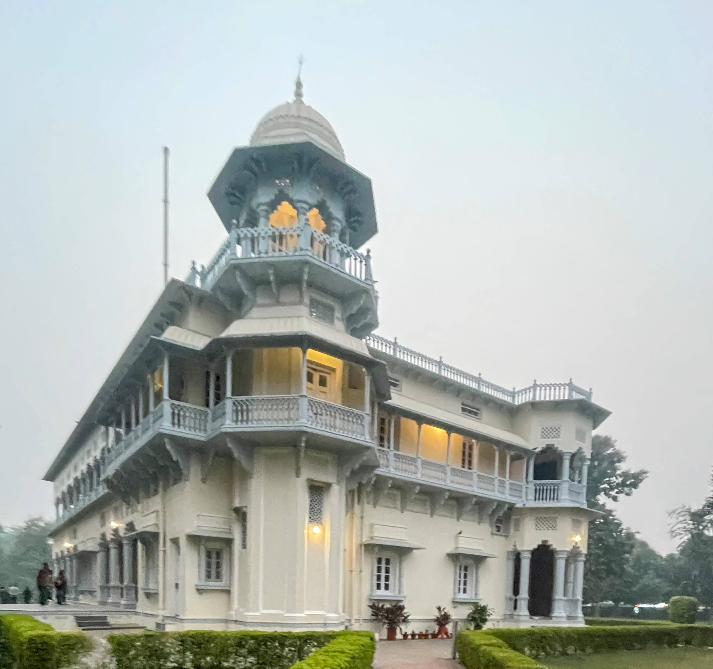<h4 class="font-bold text-xl mt-6 mb-2">The Rhythm of the City</h4><p>Later,<br>I rode through the city roads.</p><p>There was a different rhythm in Prayagraj.</p><p>Not too fast.<br>Not too slow.</p><p>Just… steady.</p><p>Like the city was carrying its history… quietly.</p><h4 class="font-bold text-xl mt-6 mb-2">At the Sangam</h4><p>As the evening deepened,<br>I went toward the Sangam.</p><p>The air felt different there.</p><p>Calmer.<br>Heavier… in a spiritual way.</p><p>And then…<br>I got a chance to witness the Ganga Aarti in Prayagraj.</p><video src="videos/chapter-9_0.mp4" autoplay loop muted playsinline class="w-full h-64 sm:h-96 object-cover rounded-xl shadow-md my-8"></video><h4 class="font-bold text-xl mt-6 mb-2">A Moment of Stillness</h4><p>It was beautiful.</p><p>Not just visually.</p><p>But… emotionally.</p><p>The lamps moved in rhythm.<br>The chants filled the air.<br>The river reflected the light softly.</p><p>For a few moments,<br>I wasn’t thinking about the journey,<br>the road,<br>or the next destination.</p><p>I was just… there.</p><p>Present.</p><p>Standing near the Sangam,<br>watching the Aarti,<br>I felt something settle inside me.</p><p>A kind of calm…<br>that cannot be explained,<br>only experienced.</p>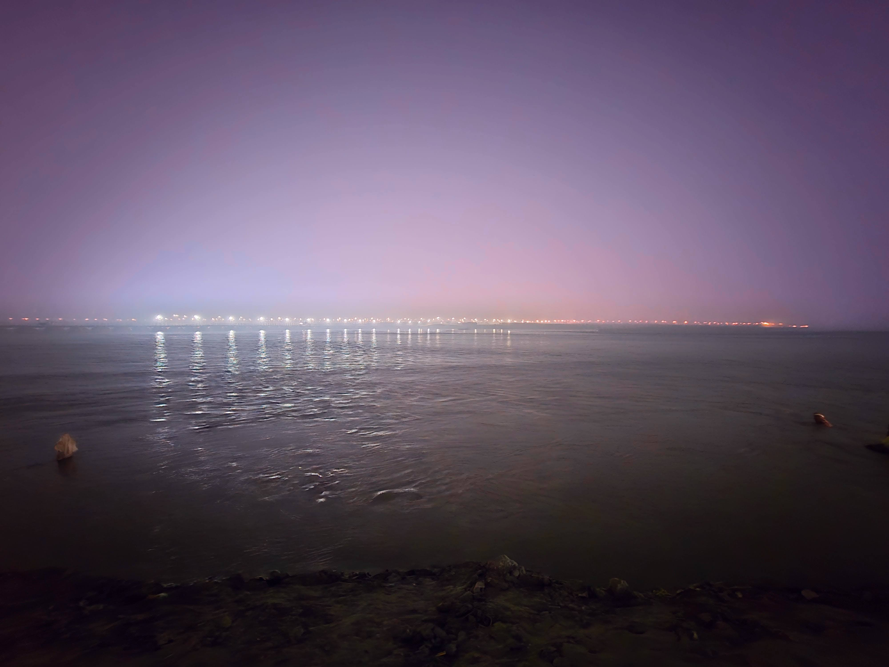<h4 class="font-bold text-xl mt-6 mb-2">Belonging</h4><p>When I returned home,<br>dinner was shared.</p><p>Conversations flowed.</p><p>I wasn’t a traveler passing through.</p><p>I was treated… like family.</p><p>And my bike rested outside quietly —<br>as if he, too,<br>had found temporary shelter.</p>', quote: '"I arrived as a traveler, but I was welcomed like family."' },
        { type: 'chapter', id: 'ch10', title: 'The Sangam Morning', chapter: 'Ch  10', stats: 'Awakening', image: 'images/chapter-10.jpg', desc: '<h4 class="font-bold text-xl mt-6 mb-2">A Sacred Morning</h4><p>I woke up early.</p><p>The cold… was intense.</p><h4 class="font-bold text-xl mt-6 mb-2">Toward the Sangam</h4><p>My friend’s cousin took me to the Sangam.</p>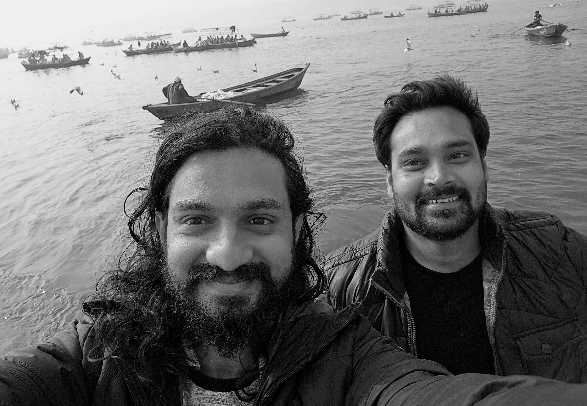<p>The air was misty.<br>Sacred.<br>Silent.</p><p>Before stepping into the water,<br>I looked back once —<br>at my bike parked at a distance.</p><p>He had brought me here.</p><p>From Mysuru.<br>Through doubt.<br>Through hesitation.<br>Through uncertainty.</p><p>Now he stood quietly…<br>as I stepped into something bigger than travel.</p><h4 class="font-bold text-xl mt-6 mb-2">The Moment of Immersion</h4><p>The water was freezing.</p><p>At least… it should have been.</p><p>But when I immersed myself,<br>I didn’t feel the cold… in the way I expected.</p><p>Instead,<br>I felt presence.</p><p>Complete awareness.</p><p>No overthinking.<br>No future plans.<br>No kilometre calculations.</p><p>Just breath.<br>Just water.<br>Just… existence.</p><p>It shocked me.</p><p>How could something so cold…<br>feel so alive?</p><video src="videos/chapter-10_0.mp4" autoplay loop muted playsinline class="w-full h-64 sm:h-96 object-cover rounded-xl shadow-md my-8"></video><h4 class="font-bold text-xl mt-6 mb-2">After the Dip</h4><p>After the dip,<br>we visited a temple.</p><p>Walked through old streets.</p><p>Ate authentic local food —<br>dahi jalebi,<br>kachori —<br>flavours deeply rooted in the city’s culture.</p><h4 class="font-bold text-xl mt-6 mb-2">A City Through His Eyes</h4><p>Back home,<br>I worked for a while.</p><p>In the evening,<br>knowing I would leave the next day,</p><p>my friend’s father took me on a city ride.</p>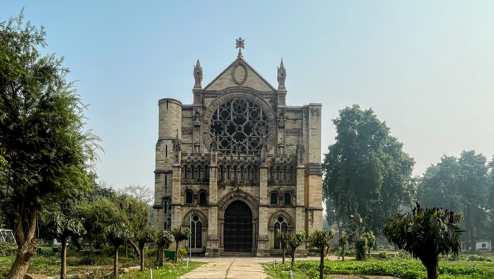<p>He showed me the old city,<br>the local markets,<br>the bazaars —</p><p>not as tourist attractions…<br>but as memories.</p><p>He wanted me to see his Prayagraj.</p><p>That gesture… stayed with me.</p><h4 class="font-bold text-xl mt-6 mb-2">A Quiet Gratitude</h4><p>When I returned<br>and parked my bike for the night,</p><p>I felt gratitude.</p><p>For the road.<br>For the people.<br>For the machine that carried me.</p><p>This journey was no longer about reaching Varanasi someday.</p><p>It was about…<br>living each city fully.</p><h4 class="font-bold text-xl mt-6 mb-2">Witnessing Change</h4><p>And that night,<br>as I lay down to sleep,</p><p>I realised:</p><p>He was not just taking me places.</p><p>He was… witnessing me change.</p>', quote: '"No overthinking. No future plans. No kilometre calculations. Just breath. Just water. Just existence."' },
        { type: 'chapter', id: 'ch11', title: 'Through Fog to Ayodhya', chapter: 'Ch  11', stats: 'Grace', image: 'images/chapter-11.jpg', desc: '<h4 class="font-bold text-xl mt-6 mb-2">A Difficult Goodbye</h4><p>I woke up around 6 AM.</p><p>My friend’s father and mother had already made coffee.</p><p>The warmth in that house…<br>was difficult to leave.</p><p>Before starting,<br>I took their blessings.</p><h4 class="font-bold text-xl mt-6 mb-2">Riding Through the Unknown</h4><p>Outside,<br>the world was white.</p><p>Dense fog.<br>Sharp cold.</p><video src="videos/chapter-11_0.mp4" autoplay loop muted playsinline class="w-full h-64 sm:h-96 object-cover rounded-xl shadow-md my-8"></video><p>Even though Ayodhya was not far,<br>the visibility was poor.</p><p>The road looked shorter on the map…<br>than it felt in reality.</p><p>I started slightly late.</p><p>The bike moved cautiously through the fog.</p><p>Headlight cutting through mist.</p><p>Every few kilometres,<br>I had to slow down.</p><p>Sometimes… almost stop.</p><p>The cold air entered through my gloves.<br>My visor gathered moisture.</p><p>Trucks appeared suddenly…<br>and disappeared just as fast.</p><p>It wasn’t a difficult ride in distance.</p><p>It was a difficult ride…<br>in patience.</p><h4 class="font-bold text-xl mt-6 mb-2">Arrival and Adjustment</h4><p>By 11:45 AM,<br>I reached Ayodhya.</p><p>But the first small challenge… waited there.</p><p>The stay I had booked… was full.</p><p>For a moment,<br>irritation tried to rise.</p><p>But the owner quickly arranged another property nearby —<br>closer to the temple.</p><p>And strangely…<br>it turned out better.</p><p>Sometimes,<br>what doesn’t work…<br>is redirection.</p><h4 class="font-bold text-xl mt-6 mb-2">A Small Sign</h4><p>Before checking in,<br>I made sure my bike was parked in a safe place.</p><p>That always came first.</p><p>And then…<br>something unexpected happened.</p><p>The same room was given to a solo rider before me.</p><p>She had booked it for three days…<br>but she was checking out that very day.</p><p>I stood there for a moment…<br>just observing how things unfold.</p><p>A solo rider…<br>making space for another solo rider.</p><p>It felt like one of those small signs the road gives you —<br>quiet… but meaningful.</p><h4 class="font-bold text-xl mt-6 mb-2">Kindness That Stays</h4><p>The new stay was clean.<br>The owner was extremely polite.</p><p>It was near the temple —<br>a blessing in disguise.</p><p>And trust me,<br>the owner and his father were genuinely kind and supportive.</p><p>They didn’t just manage the place —<br>they cared.</p><p>We spoke for some time in the evening.</p><p>His father listened with so much interest<br>as I shared my journey —<br>about the travel,<br>the work,<br>the balance I was trying to maintain.</p><p>He seemed happy hearing it.</p><p>Not impressed…<br>just genuinely happy.</p><p>That kind of response…<br>stays with you.</p><h4 class="font-bold text-xl mt-6 mb-2">A Sacred City</h4><p>After settling in,<br>I continued with my work.</p><p>Balance remained —<br>even here.</p><p>In the afternoon,<br>I stepped out for lunch<br>and bought a few clothes —<br>I had run out.</p><p>Walking through Ayodhya…<br>felt different from other cities.</p><p>There was devotion in the air.</p><p>Even the silence…<br>felt sacred.</p><h4 class="font-bold text-xl mt-6 mb-2">An Evening Without Direction</h4><p>In the evening,<br>I went out again.</p><p>The mist had settled over the roads.</p>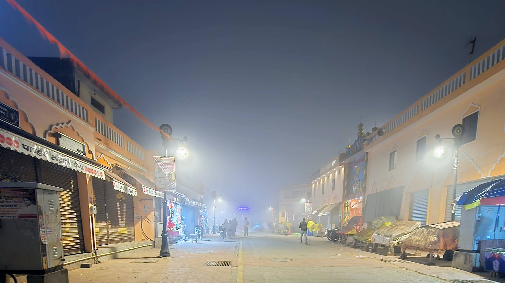<p>Lights near the temple…<br>glowed softly through the fog.</p><p>For a moment,<br>everything felt unreal.</p><p>Like the city was breathing… slowly.</p><p>I walked without direction.<br>Without purpose.</p><p>Just… being present.</p><h4 class="font-bold text-xl mt-6 mb-2">A Quiet Happiness</h4><p>And honestly…<br>I was happy.</p><p>Not in a loud way.<br>But in a quiet… complete way.</p><p>When I returned,<br>I looked at him for a moment.</p><p>He had brought me here.</p><p>Not just to a city.</p><p>But… to something deeper.</p>', quote: '"It wasn’t a difficult ride in distance. It was a difficult ride in patience."' },
        { type: 'chapter', id: 'ch12', title: 'Faith in Stone and Silence', chapter: 'Ch  12', stats: 'Reverence', image: 'images/chapter-12.jpg', desc: '<h4 class="font-bold text-xl mt-6 mb-2">A Sacred Beginning</h4><p>The next morning in Ayodhya,<br>I woke up early.</p><p>The air was cold…<br>but clear.</p><p>I walked toward the Ram Mandir<br>around 6:30 AM.</p><h4 class="font-bold text-xl mt-6 mb-2">Stepping Into Something Larger</h4><p>Security was tight.<br>Discipline everywhere.<br>Devotion in every face.</p><p>And when I entered…</p><p>For a moment,<br>it didn’t feel real.</p><p>The structure,<br>the scale,<br>the atmosphere —</p><p>it felt cinematic.</p><p>Like stepping into a historical epic.</p>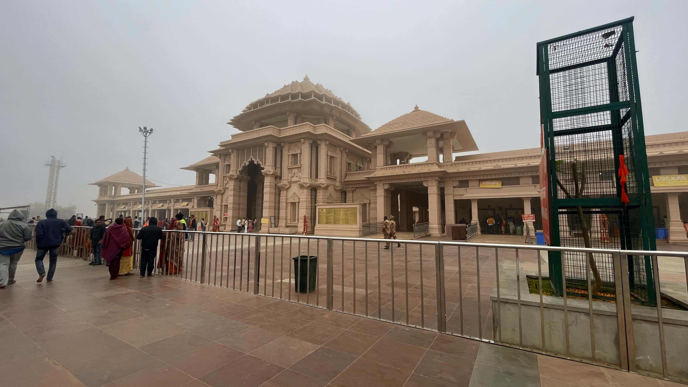<p>Yet it was alive.<br>Breathing.<br>Sacred.</p><h4 class="font-bold text-xl mt-6 mb-2">A Quiet Alignment</h4><p>The energy inside the temple<br>was powerful… but controlled.</p><p>No chaos.<br>No shouting.</p><p>Just… focused devotion.</p><p>When I stood there for darshan,<br>I felt something quiet inside me… align.</p><h4 class="font-bold text-xl mt-6 mb-2">Layers of Time</h4><p>Afterward,<br>I visited Hanuman Garhi temple.</p><p>The climb.<br>The chants.<br>The view —</p><p>everything carried depth.</p><p>Ayodhya wasn’t just a city.</p><p>It felt… layered with time.</p><h4 class="font-bold text-xl mt-6 mb-2">Simple Grounding</h4><p>Later,<br>I had breakfast at Bengaluru Café —</p><p>warm food…<br>in cold weather.</p><p>A simple meal,<br>that felt grounding<br>after the intensity of the temple.</p><h4 class="font-bold text-xl mt-6 mb-2">A Meeting Meant to Happen</h4><p>Then came the queue<br>for the Mangala Aarti pass.</p><p>That’s where… I met him.</p><p>A sadhu from Ujjain.</p><p>We began talking casually.</p><p>Within minutes,<br>the conversation turned deep.</p><p>He had lived on the road.</p><p>His knowledge wasn’t theoretical —<br>it was experiential.</p><p>He spoke about solo travel<br>as a form of discipline.</p><p>About fear… not being the enemy,<br>but a teacher.</p><p>About how journeys…<br>strip ego quietly.</p><p>His wisdom felt ocean-like —<br>calm… but vast.</p><p>Standing in that queue,<br>sharing stories with a wandering monk,</p><p>I felt… humbled.</p><p>We were both travelers.</p><p>Different directions.<br>Same road.</p><h4 class="font-bold text-xl mt-6 mb-2">A Day of Stillness</h4><p>After completing KYC verification<br>and receiving the pass<br>for the 3 AM Mangala Aarti,</p><p>I walked back slowly<br>through the streets.</p><p>The rest of the day was peaceful.</p><p>I worked for a while.<br>Took long walks through Ayodhya.<br>Observed people.<br>Sat with tea.</p><p>Watched the evening lights<br>near the temple glow<br>through winter mist.</p><h4 class="font-bold text-xl mt-6 mb-2">Awaiting the Sacred</h4><p>That night,<br>I felt anticipation.</p><p>Tomorrow… would be sacred.</p>', quote: '"We were two travelers — different directions, but guided by the same road within."' },
        { type: 'chapter', id: 'ch13', title: 'The Night of Fire and the Road to Kashi', chapter: 'Ch  13', stats: 'Surrender', image: 'videos/chapter-13.mp4', desc: '<h4 class="font-bold text-xl mt-6 mb-2">Before Dawn</h4><p>I woke up at 2:30 AM.</p><p>After taking a bath,<br>I stepped out…<br>and started walking toward the temple.</p><p>The roads were covered in dense fog.<br>Cold air… cut through my body.</p><p>Yet,<br>I kept walking.</p><p>Slowly.<br>Quietly.</p><p>Toward something…<br>I couldn’t fully explain.</p>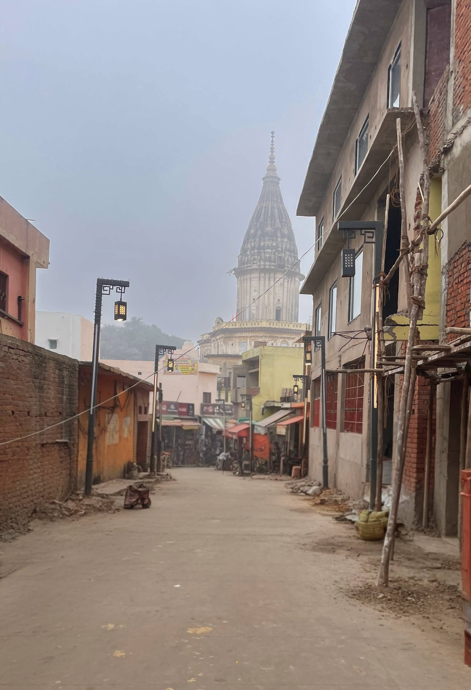<h4 class="font-bold text-xl mt-6 mb-2">Crossing Thresholds</h4><p>When I reached the temple,<br>I surrendered my phone and keys at the cloakroom.</p><p>From there,<br>the process began.</p><p>There were multiple checkpoints — five in total.</p><p>At each one,<br>Aadhaar and passes were verified carefully.</p><p>No rush.<br>No chaos.<br>Just discipline.</p><p>And then…<br>I entered.</p><p>Trust me —<br>it felt like I was entering heaven.</p><h4 class="font-bold text-xl mt-6 mb-2">A Space Beyond Words</h4><p>The previous day,<br>the experience had been different.</p><p>But this time…<br>it felt like the gates had opened.</p><p>There was fog inside.<br>A deep, calming silence.</p><p>Literally…<br>pin-drop silence.</p><p>I was fully present.</p><p>In the moment.<br>Not thinking.<br>Not analysing.</p><p>Just… being.</p><p>I cannot fully express it in words.</p><p>But it was one of the most beautiful experiences of my life.</p><h4 class="font-bold text-xl mt-6 mb-2">The Divine Moment</h4><p>Then…<br>the Mangala Aarti began.</p><p>The chants.<br>The rhythm.<br>The lamps moving in harmony.</p><p>Everything felt divine.</p><p>Not like a ritual being performed…<br>but something being lived.</p><h4 class="font-bold text-xl mt-6 mb-2">A Rare Blessing</h4><p>And then…<br>something unexpected happened.</p><p>I got access to the Ram Darbar<br>on the first floor.</p><p>Very few people are allowed there each day —<br>maybe around 30.</p><p>And somehow…<br>I was one of them.</p><p>I felt incredibly fortunate.</p><p>Standing there…<br>witnessing the darshan…</p><p>it felt unreal.</p><p>The idol of Ram felt powerful,<br>yet deeply calming.</p><p>A connection…<br>that didn’t need explanation.</p><h4 class="font-bold text-xl mt-6 mb-2">A Quiet Shift</h4><p>After spending some time there,<br>I slowly walked out.</p><p>Collected my phone.<br>Returned to my stay by 4:30 AM.</p><p>But something inside me…<br>had shifted.</p><p>Silently.<br>Permanently.</p><h4 class="font-bold text-xl mt-6 mb-2">Back to the Road</h4><p>Rested briefly.</p><p>And by 7 AM,<br>I started toward Varanasi.</p><p>Only 130 kilometres.<br>But the fog…<br>made it feel longer.</p><p>Till Sultanpur,<br>the road was slippery.</p><p>Visibility low.</p><p>Every kilometre…<br>demanded attention.</p><h4 class="font-bold text-xl mt-6 mb-2">A Sudden Reminder</h4><p>Around 70 kilometres before Varanasi,<br>I made a mistake.</p><p>I stopped on the roadside<br>to send a work email.</p><p>Within minutes,<br>a few men arrived in a car.</p><p>At first,<br>casual questions.</p><p>“Where are you from?”<br>“How much does the bike cost?”</p><p>Then…<br>one of them picked up my helmet.</p><p>Another suggested I sit in their car…<br>while someone else “checked” the bike.</p><p>The tone changed.</p><p>Not loud.<br>But not comfortable.</p><p>In that moment,<br>my instincts activated.</p><p>Thankfully,<br>another rider approached.</p><p>He sensed it.</p><p>His presence…<br>shifted everything.</p><p>Later he told me quietly,</p><p>“Never stop like this on the road.<br>If you need to work,<br>stop at a dhaba or petrol bunk.”</p><p>I nodded.</p><p>The moment passed.</p><p>But the lesson stayed.</p><p>The road had reminded me —<br>awareness… must never drop.</p><h4 class="font-bold text-xl mt-6 mb-2">Choosing Responsibility</h4><p>I continued carefully<br>and reached Varanasi by afternoon.</p><p>Then began the search.</p><p>Finding a stay with safe parking…<br>was difficult.</p><p>Narrow gallis.<br>Confusing lanes.<br>Parking chaos near the ghats.</p><p>Everywhere I asked —<br>no parking…<br>or unsafe space.</p><p>I refused to compromise.</p><p>He had carried me this far.</p><p>I would not leave him vulnerable.</p><p>Finally,<br>I found a place.</p><p>Near the ghats.<br>With parking.</p><p>Expensive.</p><p>The parking cost…<br>almost equal to the room.</p><p>I paid.</p><p>Without hesitation.</p><p>Because safety is not expense.</p><p>It is… respect.</p><h4 class="font-bold text-xl mt-6 mb-2">An Evening in Kashi</h4><p>After settling in,<br>I walked toward the ghats.</p><video src="videos/chapter-13_0.mp4" autoplay loop muted playsinline class="w-full h-64 sm:h-96 object-cover rounded-xl shadow-md my-8"></video><p>Visited Annapoorna Temple.<br>Then Kashi Vishwanath.</p><p>And slowly…<br>evening unfolded.</p><h4 class="font-bold text-xl mt-6 mb-2">Where Time Stands Still</h4><p>The Ganga Aarti began.</p>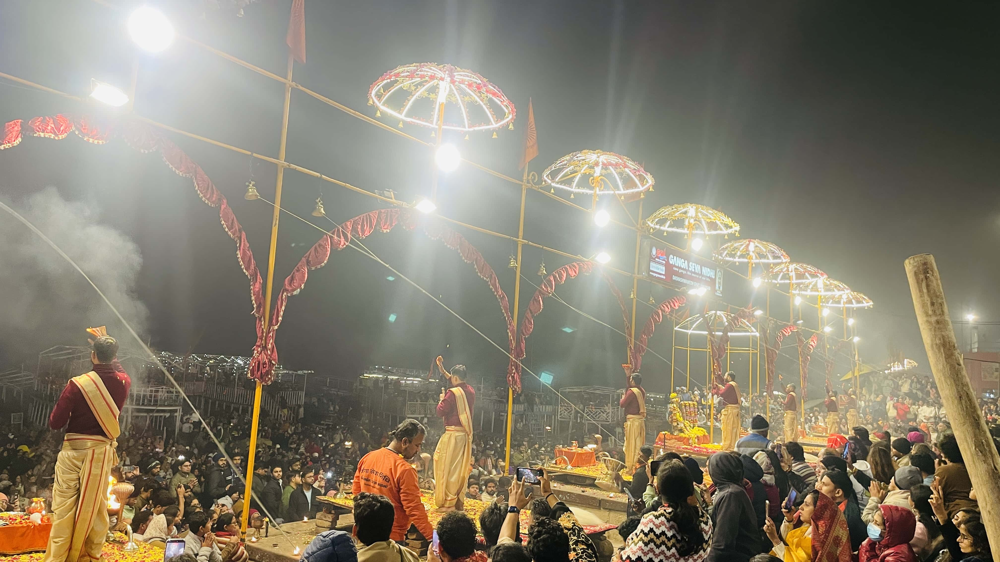<p>The river… dark and endless.</p><p>Priests… in perfect rhythm.</p><p>I first sat behind.<br>Quietly observing.</p><p>Then…<br>I met a few people from Gorakhpur.</p><p>We spoke.</p><p>And they offered me…<br>a place in front.</p><p>Closer.</p><p>More intimate.</p><p>It felt…<br>meant to happen.</p><p>Sometimes,<br>we don’t plan.</p><p>We are guided.</p><h4 class="font-bold text-xl mt-6 mb-2">Fire, Sound, Silence</h4><p>The first bell rang.</p><p>Then chants.</p><p>Then flames.</p><video src="videos/chapter-13_1.mp4" autoplay loop muted playsinline class="w-full h-64 sm:h-96 object-cover rounded-xl shadow-md my-8"></video><p>Large lamps moved in rhythm.</p><p>Smoke rose like prayer.</p><p>The fire reflected in water.</p><p>The air… vibrated.</p><p>I stood there —<br>speechless.</p><p>Not emotional in a loud way.</p><p>But… overwhelmed.</p><p>It felt ancient.<br>Timeless.</p><p>Like centuries of devotion…<br>held in one moment.</p><p>People sang softly.<br>Instruments echoed.</p><p>Boats floated…<br>with silent observers.</p><p>Time disappeared.</p><p>I didn’t record much.</p><p>I didn’t want to.</p><p>Some moments…<br>are meant to stay within.</p><h4 class="font-bold text-xl mt-6 mb-2">A Night That Stayed</h4><p>I sat by the river<br>till almost 11 PM.</p><p>Watching.<br>Listening.<br>Breathing.</p><p>After the aarti,<br>a deep peace settled.</p><p>I walked slowly along the ghats.</p><p>That evening…<br>became memory.</p><p>Not loud.<br>But permanent.</p><p>When I finally walked back at 11:30 PM,<br>and saw my bike parked safely…</p><p>I smiled.</p>', quote: '"From doubt in Mysuru… To the fire of Kashi. The journey had changed shape. And so had I."' },
        { type: 'chapter', id: 'ch14', title: 'Living Kashi', chapter: 'Ch  14', stats: 'Belonging', image: 'videos/chapter-14.mp4', desc: '<h4 class="font-bold text-xl mt-6 mb-2">A Morning with the River</h4><p>I woke up at 6:30 AM.</p><p>The city was still waking up.</p><p>Without rushing,<br>I walked toward the ghats.</p><p>The air was crisp.<br>The river calm.</p><p>Morning light…<br>just beginning to touch<br>the surface of the Ganga.</p><p>I took a small boat ride.</p><video src="videos/chapter-14_0.mp4" autoplay loop muted playsinline class="w-full h-64 sm:h-96 object-cover rounded-xl shadow-md my-8"></video><p>It was surprisingly inexpensive —<br>but priceless in experience.</p><p>Sitting on that wooden boat,<br>watching the ghats from the water,</p><p>I felt something shift… again.</p><p>From the river,<br>Kashi looks different.</p>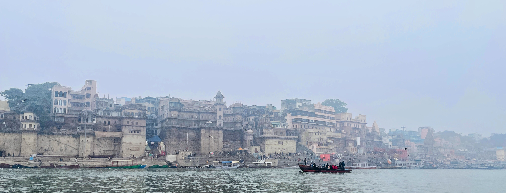<p>More ancient.<br>More layered.<br>More eternal.</p><p>The weather was chill.<br>The water moved gently.</p><p>People were bathing.<br>Praying.<br>Sitting quietly.</p><h4 class="font-bold text-xl mt-6 mb-2">Two Sides of Kashi</h4><p>After spending time on the riverbank,<br>I returned around 8 AM.</p><p>Freshened up.<br>And stepped out again.</p><p>This time… toward BHU.</p><p>Banaras Hindu University.</p><p>Since my bike was parked inside the narrow lanes near the ghats,<br>I had to walk a few kilometres before finding transport.</p><p>Eventually,<br>I took a bike taxi.</p><p>The campus felt spacious.<br>Calm.</p><p>A contrast…<br>to the intensity of the ghats.</p><p>I visited the New Kashi Vishwanath Temple inside BHU.</p><p>The architecture was clean.<br>Serene.</p><p>Devotion there felt quieter.<br>Less crowded.<br>More reflective.</p><h4 class="font-bold text-xl mt-6 mb-2">Life Continues</h4><p>By afternoon,<br>I returned.</p><p>Had breakfast.<br>Started my work around 12:30 PM.</p><p>Even in Kashi…<br>work continued.</p><h4 class="font-bold text-xl mt-6 mb-2">Walking Without Purpose</h4><p>But something interesting happened later.</p><p>Around 2:30 PM,<br>I saw people distributing food.</p><p>Without planning,<br>I joined.</p><p>I accepted prasad…<br>and walked along the ghats.</p><p>Nearly 2 to 4 kilometres.</p><p>That walk felt grounding.</p><p>No rush.<br>Just steps.<br>River.<br>People.</p><p>Life… unfolding.</p><h4 class="font-bold text-xl mt-6 mb-2">Returning to the Flame</h4><p>I returned around 5:30 PM.</p><p>Rested briefly.<br>And stepped out again.</p><p>The Ganga Aarti… pulled me back.</p><p>Even though I had seen it the previous evening,<br>I wanted to experience it again.</p><p>It was just 200 meters from my stay.</p><p>This time,<br>I stood differently.</p><p>Not overwhelmed.<br>Not shocked.</p><p>But… aware.</p><p>The flames rose again.<br>The chants echoed.<br>The bells rang.</p><p>And I understood…</p><p>why people return<br>again and again.</p><h4 class="font-bold text-xl mt-6 mb-2">Conversations That Appear</h4><p>Afterward,<br>I went to Kashi Vishwanath Temple once more.</p><p>Inside,<br>I met a few people.</p><p>Strangers…<br>who quickly became companions.</p><p>Among them was a girl<br>who stood quietly for nearly 45 minutes,</p><p>just observing the rituals.</p><p>We spoke briefly.</p><p>About faith.<br>About presence.</p><p>About how some places…<br>silence you without effort.</p><h4 class="font-bold text-xl mt-6 mb-2">Familiarity in the Unfamiliar</h4><p>Around 9 PM,<br>I stepped out.</p><p>Went to Annapoorna Temple for dinner.</p><p>Simple food.<br>Sacred space.</p><p>Then something unexpected.</p><p>Near the temple area,<br>in the narrow, chaotic lanes,</p><p>I met a group of Kannada-speaking men<br>from North Karnataka.</p><p>In Kashi.</p><p>Thousands of kilometres from home.</p><p>We spoke like old friends.</p><p>They were proud to see someone riding solo from Karnataka.</p><p>Their energy felt familiar.<br>Encouraging.</p><p>We took a few photos.<br>Laughed.</p><p>That random encounter…<br>felt comforting.</p><h4 class="font-bold text-xl mt-6 mb-2">Music by the River</h4><p>Later,<br>I grabbed tea<br>and walked back toward the ghats.</p><p>Some young men were playing guitar,<br>singing softly near the river.</p><p>I sat with them.</p><video src="videos/chapter-14_1.mp4" autoplay loop muted playsinline class="w-full h-64 sm:h-96 object-cover rounded-xl shadow-md my-8"></video><p>No introduction needed.</p><p>Music under the open sky.<br>Ganga flowing beside.<br>Night air cool.</p><p>Time… dissolved.</p><p>I stayed there till around 11 PM.</p><p>Even after that,<br>I took a long walk… alone.</p><p>By the time I returned,<br>it was nearly 1 AM.</p><h4 class="font-bold text-xl mt-6 mb-2">A Feeling Called Belonging</h4><p>That day wasn’t about riding.</p><p>It wasn’t about distance.</p><p>It was about… belonging.</p><p>Kashi didn’t feel like a destination anymore.</p>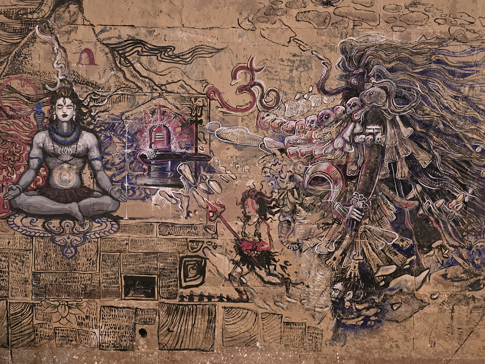<p>It felt like… a conversation.</p><p>And for the first time since the journey began,</p><p>I felt fully present.</p><p>Not chasing the next state.</p><p>Not thinking about the next kilometre.</p><p>Just… living.</p>', quote: '"Kashi did not welcome me as a traveler…it accepted me as if I already belonged."' },
        { type: 'chapter', id: 'ch15', title: 'Leaving Kashi, Arriving at Silence', chapter: 'Ch  15', stats: 'Balance', image: 'images/chapter-15.jpg', desc: '<h4 class="font-bold text-xl mt-6 mb-2">A Difficult Goodbye</h4><p>I woke up around 6:30 AM in Kashi.</p><p>There was no urgency.<br>But there was resistance.</p><p>I’ve left many cities without looking back.</p><p>But that morning… felt different.</p><h4 class="font-bold text-xl mt-6 mb-2">One Last Walk</h4><p>From 6:45 to around 7:30,<br>I walked along the ghats one last time.</p><p>The river was calm.<br>Morning light… soft.</p>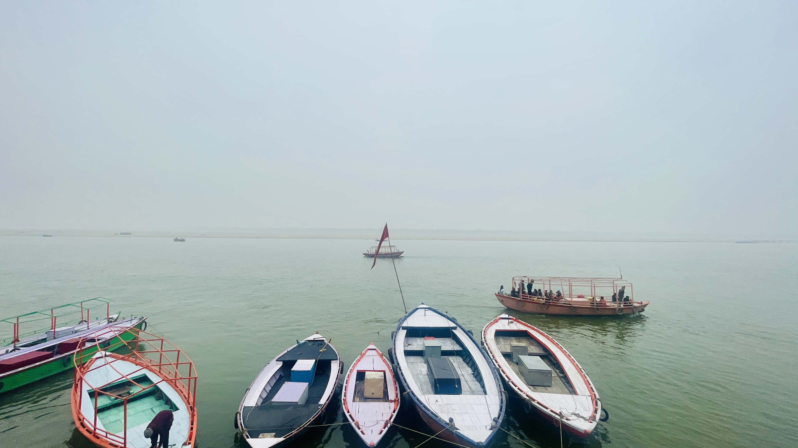<p>Fewer voices.<br>More truth.</p><p>I didn’t want to leave.</p><p>Not because I hadn’t seen enough.</p><p>But because… I had felt enough.</p><p>Kashi wasn’t just a place I visited.</p><p>It felt like a place… that had read me.</p><h4 class="font-bold text-xl mt-6 mb-2">The Road Calls Again</h4><p>For a few minutes,<br>I stood there thinking —<br>stay one more day.</p><p>I called a friend.</p><p>Bihar… entered the conversation.</p><p>Bodh Gaya… appeared in my mind<br>like a quiet whisper.</p><p>And just like that,<br>the road… called again.</p><p>Still,<br>leaving felt like pulling myself away<br>from something unfinished.</p><h4 class="font-bold text-xl mt-6 mb-2">Rolling Forward</h4><p>At 8:30 AM,<br>everything was packed.</p><p>I stood beside my bike<br>in that narrow lane one last time.</p><p>He had rested safely there.</p><p>I touched the tank… lightly.</p><p>We rolled out around 9 AM.</p><p>The first stretch was silent.</p><p>Not external silence —<br>internal.</p><p>After a tea break,<br>I opened the map.</p><p>Bodh Gaya.</p><p>The decision… felt intuitive.</p><p>I turned.</p><h4 class="font-bold text-xl mt-6 mb-2">A Different Energy</h4><p>By around 1 PM,<br>I reached Bodh Gaya.</p>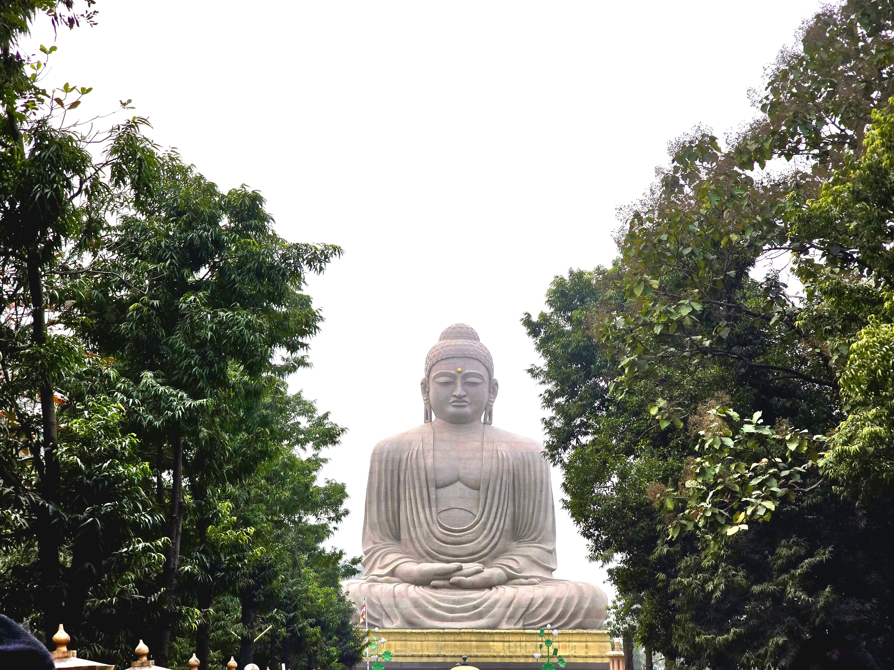<p>Immediately,<br>the atmosphere felt different from Kashi.</p><p>Kashi vibrates.</p><p>Bodh Gaya… breathes.</p><p>The town moved slower.</p><p>Monks walked in quiet rhythm.</p><p>Foreign travelers sat cross-legged beneath trees.</p><p>I found a peaceful dorm.</p><p>Clean.<br>Minimal.<br>Calm.</p><p>The owner welcomed me warmly.</p><h4 class="font-bold text-xl mt-6 mb-2">A Subtle Impact</h4><p>We began talking casually.</p><p>Where I came from.<br>The ride.<br>The distance — 10,000+ kilometres.</p><p>As I shared my journey,<br>something changed in his expression.</p><p>He wasn’t just listening politely.</p><p>He was… inspired.</p><h4 class="font-bold text-xl mt-6 mb-2">Silence in Many Forms</h4><p>After freshening up,<br>I stepped out toward the Mahabodhi Temple complex.</p><p>If Kashi was intensity…</p><p>Bodh Gaya was meditation.</p><p>The Mahabodhi Temple stood tall,<br>yet calm.</p><p>Monks sat in silence.</p><p>Prayer flags moved lightly.</p><p>No shouting.<br>No rush.</p><p>I visited the Thai Temple — golden and graceful.</p>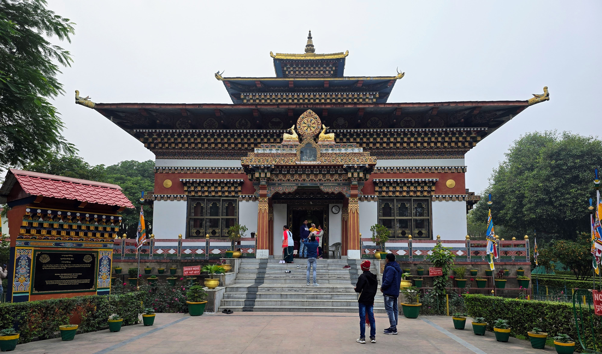<p>The Japanese Temple — minimal and disciplined.</p><p>The Chinese Temple — detailed and serene.</p>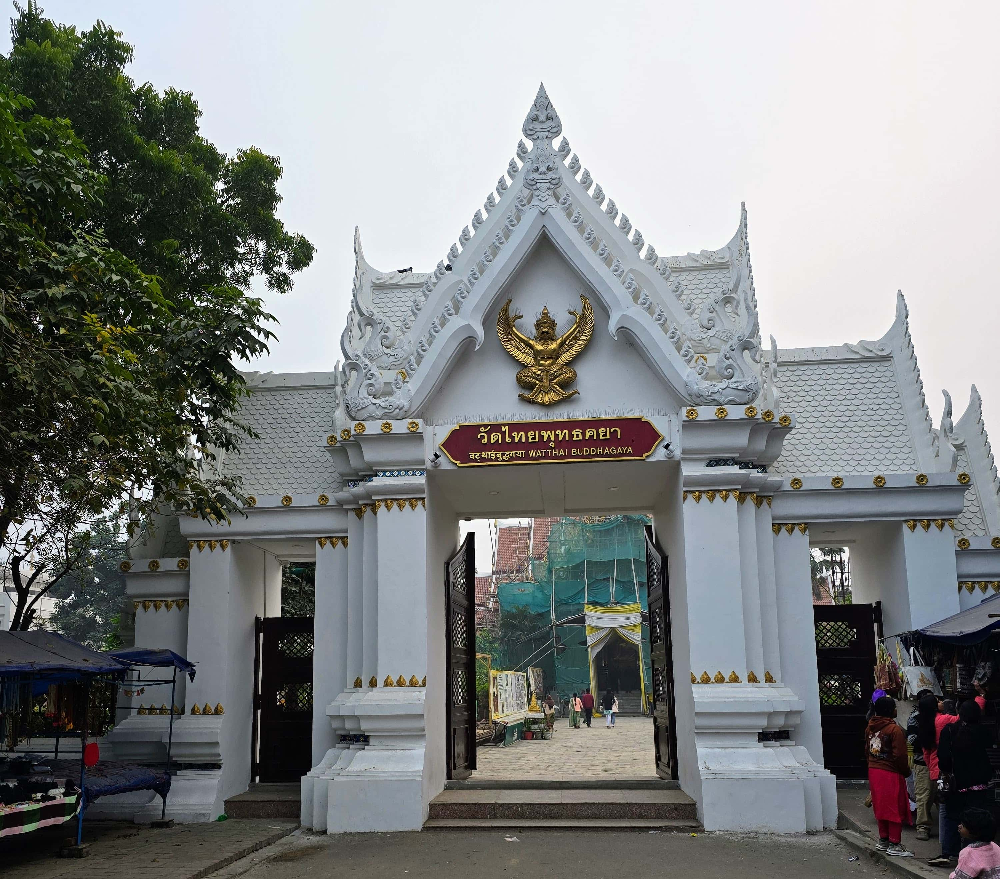<p>Each temple… spoke silence<br>in a different language.</p><h4 class="font-bold text-xl mt-6 mb-2">An Unexpected Kindness</h4><p>Later,<br>I walked toward the museum.</p><p>It was closed.</p><p>I stood there for a moment.</p><p>Slightly disappointed.</p><p>A staff member noticed me.</p><p>We spoke briefly.</p><p>He looked at my riding jacket.<br>Asked where I came from.</p><p>When I told him,<br>something softened.</p><p>He quietly opened the gate.</p><p>Allowed me inside.</p><p>No drama.<br>No expectation.</p><p>Just… kindness.</p><p>That small gesture… stayed.</p><p>Inside,<br>ancient statues stood in stillness.</p><p>Centuries of patience… carved into stone.</p>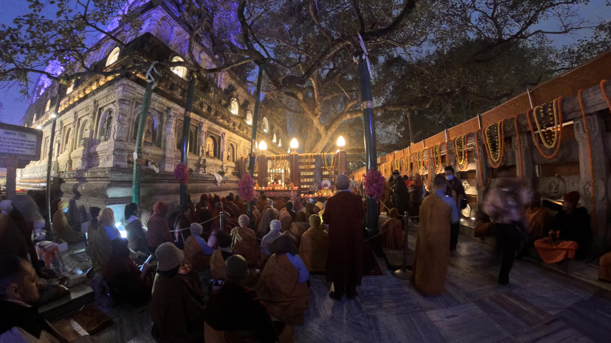<p>I walked slowly.</p><p>Absorbing.</p><h4 class="font-bold text-xl mt-6 mb-2">Ritual of Care</h4><p>After returning to my stay,<br>I cleaned my bike.</p><p>Checked everything carefully.</p><p>Packed it well for the next day.</p><p>That small routine —<br>cleaning,<br>arranging,<br>preparing —</p><p>had become part of the journey.</p><h4 class="font-bold text-xl mt-6 mb-2">Two Lives, One Conversation</h4><p>While I was doing that,<br>the owner came toward me.</p><p>We started talking.</p><p>At first, casual.</p><p>But slowly… deeper.</p><p>He told me about his journey.</p><p>Once a businessman.<br>Successful.<br>Well connected.</p><p>Then… life shifted.</p><p>Loss happened.</p><p>Now,<br>he was running a small stay.</p><p>But there was no bitterness.</p><p>Only… rebuilding.</p><p>When he heard about my ride,<br>his thoughts expanded.</p><p>Ideas flowed.</p><p>Travel models.<br>Riding concepts.<br>Collaborations.</p><p>Not fantasy.</p><p>Structured.</p><p>Real.</p><p>He showed documents.</p><p>Spoke about networks.</p><p>Spoke about rebuilding —<br>not just surviving.</p><p>We spoke till 11:30 PM.</p><p>Two men in transition.</p><p>One rebuilding externally.</p><p>One… internally.</p><h4 class="font-bold text-xl mt-6 mb-2">A Quiet Realisation</h4><p>His resilience moved me.</p><p>Once — success was his identity.</p><p>Now — humility was.</p><p>But the ambition… remained.</p><p>Grounded.</p><p>Before sleeping,<br>I realised something quietly powerful:</p><p>The road connects you to places.</p><p>But it also connects you…<br>to people who are rewriting themselves.</p><h4 class="font-bold text-xl mt-6 mb-2">Balance</h4><p>That evening,<br>Bodh Gaya didn’t overwhelm me.</p><p>It steadied me.</p><p>Dinner was simple.<br>Conversations deep.<br>Silence… comfortable.</p><p>Around midnight,<br>lying in that small peaceful room,</p><p>I realised:</p><p>Ayodhya gave devotion.</p><p>Kashi gave intensity.</p><p>Bodh Gaya… gave balance.</p><p>And maybe,<br>that balance was necessary…</p><p>before the road tested me again.</p>', quote: '"Ayodhya gave devotion. Kashi gave intensity. Bodh Gaya gave balance."' },
        { type: 'chapter', id: 'ch16', title: 'Six Hundred Kilometres of Trust', chapter: 'Ch  16', stats: 'Endurance', image: 'images/chapter-16.jpg', desc: '<h4 class="font-bold text-xl mt-6 mb-2">Before the First Light</h4><p>I woke up at 5:00 AM.</p><p>It was still dark.</p><p>Bodh Gaya was silent.</p><p>Monks not yet out.<br>Streets empty.<br>Air slightly cold.</p><p>I packed quietly.</p><p>The stay owner came out.</p><p>He checked if I was leaving safely.<br>Asked me to call once I reached.</p><p>There was something… comforting about that.</p><h4 class="font-bold text-xl mt-6 mb-2">Preparing for the Distance</h4><p>Before starting,<br>I stood beside my bike for a moment.</p><p>600+ kilometres.</p><p>One stretch.</p><p>No sightseeing.</p><p>Just… road.</p><p>I tightened the luggage straps carefully.</p><p>Checked the chain.<br>Looked at the tyres.</p><p>Tapped the tank… lightly.</p><p>This wasn’t just a machine.</p><p>He was about to carry me<br>across an entire state line…<br>and beyond… in a single day.</p><h4 class="font-bold text-xl mt-6 mb-2">The Ride Begins</h4><p>We started before sunrise.</p><p>The first light…<br>broke slowly as we moved.</p><p>The roads around Rajgir were surprisingly good.</p><p>I decided to take a shortcut.</p><p>50–60 kilometres saved.</p><p>A small decision.</p><p>But meaningful.</p><p>Earlier…<br>I would have hesitated.</p><p>Now…<br>I trusted my navigation.</p><p>And I trusted him.</p><h4 class="font-bold text-xl mt-6 mb-2">Finding the Rhythm</h4><p>Somewhere mid-morning,<br>I stopped for breakfast.</p><p>Simple food.<br>Stretching my legs.</p><p>Watching trucks… move slowly past.</p><p>There’s something meditative<br>about long-distance riding.</p><p>Helmet on.<br>Music low.<br>Engine… humming steadily.</p><p>The world narrows.</p><p>Throttle.<br>Road.<br>Awareness.</p><h4 class="font-bold text-xl mt-6 mb-2">Miles Without Words</h4><p>After breakfast,<br>the landscape changed.</p>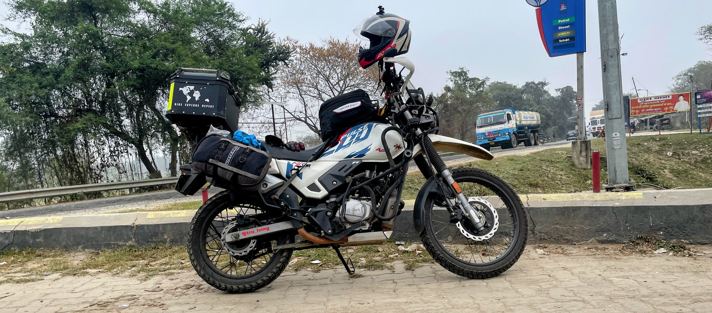<p>Forest stretches appeared.</p><p>Long… quiet patches.</p><p>Barely any restaurants.<br>Rare petrol pumps.</p><p>For a while,<br>there were no proper stops.</p><p>Only a small dhaba.</p><p>Lunch.</p><p>Rice.<br>Curry.</p><p>Nothing fancy.</p><p>But fuel…<br>for both of us.</p><p>When you ride 600 kilometres in a day,</p><p>conversation disappears.</p><p>Thoughts become rhythm.</p><p>No analysis.<br>No overthinking.</p><p>You just… move.</p><h4 class="font-bold text-xl mt-6 mb-2">Crossing Over</h4><p>By around 3 PM,<br>I entered West Bengal.</p><p>The moment wasn’t loud.</p><p>But it was… significant.</p><p>Symbolic.</p><p>The last time I passed this way,<br>through the Siliguri corridor,<br>it felt different.</p><p>Back then,<br>my mind was different.</p><p>This time…</p><p>I was alone.</p><p>But not lonely.</p><h4 class="font-bold text-xl mt-6 mb-2">A Familiar Road</h4><p>The Siliguri stretch felt familiar.</p><p>Almost… nostalgic.</p><p>The road was steady.<br>Traffic slightly heavier.</p><p>But the bike…</p><p>moved confidently.</p><p>No complaints.</p><p>No vibration anxiety.</p><p>Just… steady hum.</p><p>And somewhere inside,</p><p>I felt gratitude.</p><p>Because 600 kilometres…<br>is not easy.</p><p>Not on a machine.</p><p>Not on a rider.</p><h4 class="font-bold text-xl mt-6 mb-2">The Silence After Movement</h4><p>Around 6 PM,<br>I reached Siliguri.</p><p>The city lights… already on.</p><p>I parked him carefully.</p><p>Turned off the engine.</p><p>Silence.</p><p>That silence…<br>after a long ride…</p><p>feels earned.</p><h4 class="font-bold text-xl mt-6 mb-2">A Familiar Routine</h4><p>A boy had come for an exam in the city,<br>and we met.</p><p>We stepped out for dinner.</p><p>Simple food.<br>Easy conversation.</p><p>Later,<br>I went to a supermarket.</p><p>Bought essentials for the next stretch.</p><p>Standing in that aisle,<br>holding random supplies,</p><p>I realised…</p><p>how normal this life had become.</p><p>Ride.<br>Work.<br>Eat.<br>Move.</p><h4 class="font-bold text-xl mt-6 mb-2">Endurance</h4><p>Back at the stay,<br>I looked once more at my bike.</p><p>Dust-covered.<br>Road-worn.<br>Faithful.</p><p>600+ kilometres.</p><p>One day.</p><p>No breakdown.<br>No complaint.<br>No hesitation.</p><p>That night,<br>around 10 PM,</p><p>as I lay down to sleep,</p><p>I felt something very clear:</p><p>We had crossed…<br>from exploration… into endurance.</p><p>The journey was no longer just about places.</p><p>It was about… consistency.</p><p>And consistency… builds character.</p>', quote: '"The journey was no longer about places — it was about endurance, and endurance builds who you become."' },
        { type: 'chapter', id: 'ch17', title: 'In the Middle of the Fog, I Found a Mother', chapter: 'Ch  17', stats: 'Gratitude', image: 'images/chapter-17.jpg', desc: '<h4 class="font-bold text-xl mt-6 mb-2">Into the Unknown Cold</h4><p>I woke up at 5:15 AM.</p><p>It was still dark in Siliguri.</p><p>The air carried that early-morning dampness.</p><p>I packed slowly.<br>Methodically.</p><p>Checked the luggage straps again.</p><p>Cleaned and lubricated the chain carefully.</p><p>On a 600-kilometre day,<br>small negligence… becomes big regret.</p><p>A young boy staying in the same room helped me carry my luggage downstairs.</p><p>He was kind.<br>Smiling… without reason.</p><p>We exchanged numbers.</p><p>Travel has a strange way…<br>of making temporary connections feel real.</p><p>At 5:45 AM,<br>I started.</p><p>Within 30 minutes…<br>everything changed.</p><h4 class="font-bold text-xl mt-6 mb-2">The Fog</h4><p>Fog.</p><p>Not light mist.</p><p>Dense.<br>Thick.<br>Almost suffocating.</p><p>Visibility dropped… to barely 3–4 feet.</p><p>I couldn’t see the road clearly.</p><video src="videos/chapter-17_0.mp4" autoplay loop muted playsinline class="w-full h-64 sm:h-96 object-cover rounded-xl shadow-md my-8"></video><p>Headlight beams… bounced back.</p><p>Trucks appeared like shadows…<br>and disappeared just as fast.</p><p>I slowed down.</p><p>20… 30 km/h.</p><p>Gloves freezing.<br>Visor wet.</p><p>Body… shivering.</p><p>After 50–60 kilometres,<br>I couldn’t continue safely.</p><p>I saw a tiny tea stall.</p><p>Stopped.</p><p>And there… she was.</p><h4 class="font-bold text-xl mt-6 mb-2">Warmth of a Stranger</h4><p>An elderly grandmother.</p><p>I parked carefully.<br>Removed my helmet.</p><p>My hands… shaking.</p><p>She looked at me once.</p><p>And understood.</p><p>“Cold?”</p><p>I nodded.</p><p>She gave me hot coffee.<br>And a packet of biscuits.</p>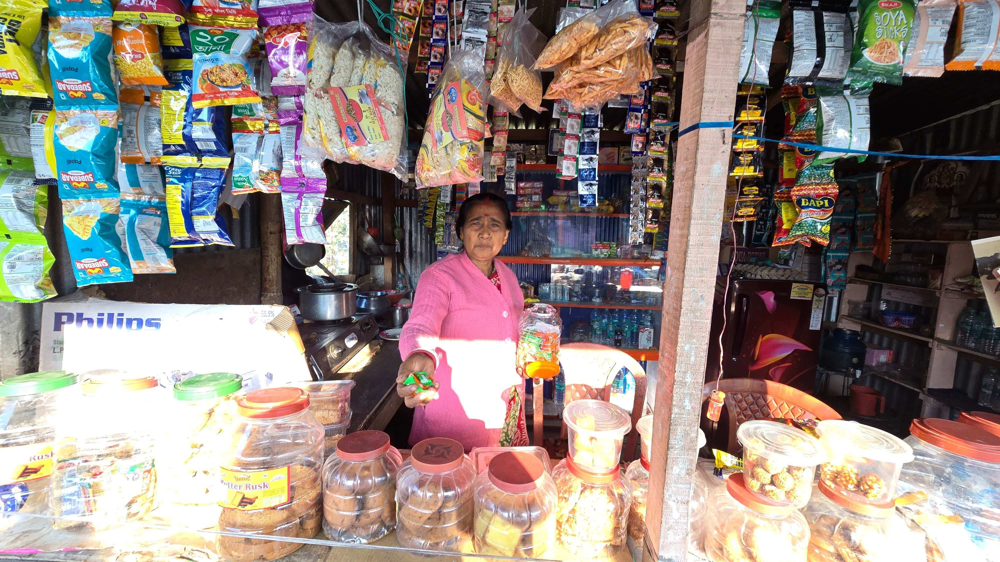<p>I sat there…<br>almost 30 minutes.</p><p>Just… warming up.</p><p>The stall wasn’t fancy.</p><p>Not even fully covered.</p><p>But in that moment…</p><p>it felt like protection.</p><p>When I went to pay…<br>she refused.</p><p>I insisted.<br>She refused again.</p><p>She placed chocolates in my hand.</p><p>“You are like my son.<br>Don’t pay.”</p><p>For a moment…<br>I had no words.</p><p>I had stopped… as a customer.</p><p>I was leaving… as family.</p><p>Standing there,<br>in the cold,<br>on a long ride,</p><p>being cared for…<br>by someone I had never met,</p><p>it humbled me.</p><p>The road whispered again:</p><p>Kindness… travels faster than distance.</p><p>I left with warmth.</p><p>Not just in my body.</p><p>But in my heart.</p><h4 class="font-bold text-xl mt-6 mb-2">Into Assam</h4>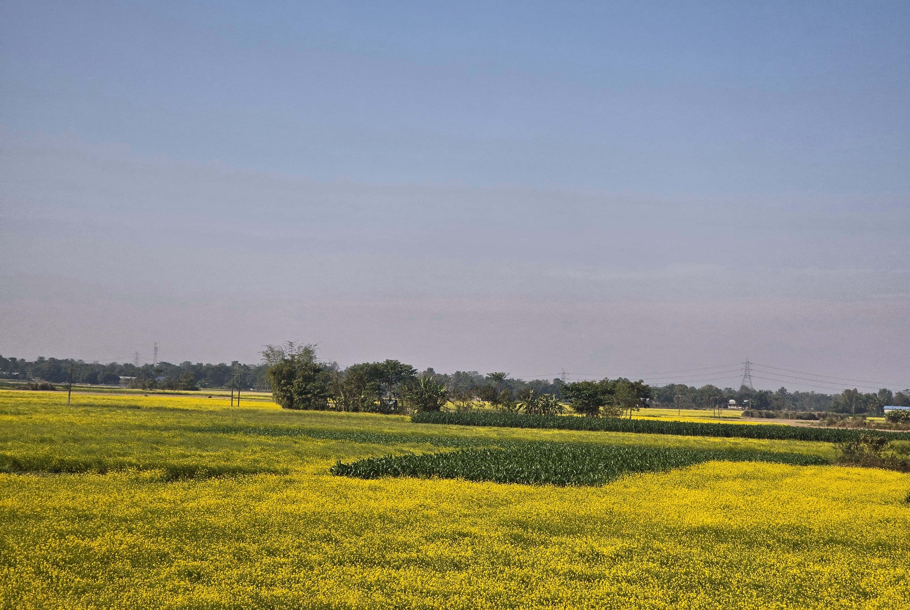<p>As the fog slowly cleared,<br>I resumed.</p><p>The road opened up.</p><p>Every kilometre,<br>I checked on him mentally.</p><p>Engine sound?<br>Throttle smooth?<br>Any vibration?</p><p>But he was… flawless.</p><p>Rough patches.<br>Traffic slowdowns.<br>Long stretches.</p><p>He carried me…<br>without complaint.</p><p>After another 150–200 kilometres,<br>I entered Assam.</p><p>The landscape shifted.</p><p>Greener.<br>Wider skies.<br>A different energy.</p><p>Then came traffic.</p><p>10–15 kilometres of it.</p><p>Slow crawl.</p><p>Careful gaps.</p><p>Even there…<br>he stayed calm.</p><p>No overheating.<br>No struggle.</p><p>Just… steady presence.</p><p>Around 11 AM,<br>I stopped for breakfast.</p><p>The stall owner spoke about riding.</p><p>Then casually…<br>his YouTube channel.</p><p>He was earning from it.</p><p>I smiled.</p><p>The road… keeps opening doors.</p><p>We exchanged numbers.</p><p>I moved on.</p><h4 class="font-bold text-xl mt-6 mb-2">Climbing Higher</h4><p>By 2:30–3 PM,<br>I reached Guwahati.</p><p>The city felt alive.</p><p>Different rhythm.<br>Different culture.</p><p>At 4 PM,<br>I began toward Shillong.</p><p>The road transformed.</p><p>Smooth.<br>Curvy.<br>Elevated.</p><p>But evening… arrived quickly.</p><p>By 4:30–5 PM,<br>darkness started settling.</p><p>The road narrowed.</p><p>I slowed down.</p><p>Shared my live location<br>with my friend in Shillong.</p><p>Every turn… new.</p><p>Every climb… symbolic.</p><p>After 600+ kilometres —<br>fog,<br>traffic,<br>cold,<br>highways,<br>hills —</p><p>we were still moving.</p><p>Strong.</p><p>Sometimes… inside my helmet,<br>I whispered:</p><p>“Good job.”</p><p>He wasn’t just carrying me.</p><p>He was proving something.</p><h4 class="font-bold text-xl mt-6 mb-2">A Familiar Face</h4><p>By around 7 PM,<br>I reached Shillong.</p><p>And there he was.</p><p>My friend.</p><p>After 7–8 years.</p><p>He looked… the same.</p><p>Time had moved.</p><p>But friendship… hadn’t.</p><p>His family welcomed me warmly.</p><p>I freshened up.<br>And we stepped out for dinner.</p><p>Shillong felt cool.<br>Calm.<br>Different.</p><p>We spoke for hours.</p><p>Life.<br>Careers.<br>Memories.<br>Change.</p><p>After years…<br>there was so much to say.</p><p>We talked till midnight.</p><h4 class="font-bold text-xl mt-6 mb-2">Gratitude</h4><p>When I finally lay down,</p><p>I realised something clearly.</p><p>This was not just a long ride.</p><p>It was endurance.</p><p>It was faith.</p><p>It was kindness.</p><p>It was gratitude.</p><p>And somewhere inside,</p><p>I felt deeply thankful.</p><p>For the road.</p><p>For strangers.</p><p>For old friends.</p><p>And for the machine…</p><p>that never once gave up.</p>', quote: '"Kindness travels faster than distance."' },
        { type: 'chapter', id: 'ch18', title: 'A Day of Rest, Roads, and Reconnection', chapter: 'Ch  18', stats: 'Reconnection', image: 'images/chapter-18.jpg', desc: '<h4 class="font-bold text-xl mt-6 mb-2">A Day Without Urgency</h4><p>After two back-to-back 600+ kilometre days,<br>Day 18 felt different… from the moment I opened my eyes.</p><p>I woke up around 6 or 6:30 AM.</p><p>For the first time in many days,<br>there was no urgency in my body.</p><p>No chain checks.<br>No tightening straps.<br>No distance calculations.</p><p>My bike rested outside my friend’s house.</p><p>And strangely…<br>so did I.</p><h4 class="font-bold text-xl mt-6 mb-2">Above the Clouds</h4><p>We drove toward a sunrise point near Shillong.</p><p>High above the city…<br>where clouds float beneath you<br>like a moving ocean.</p>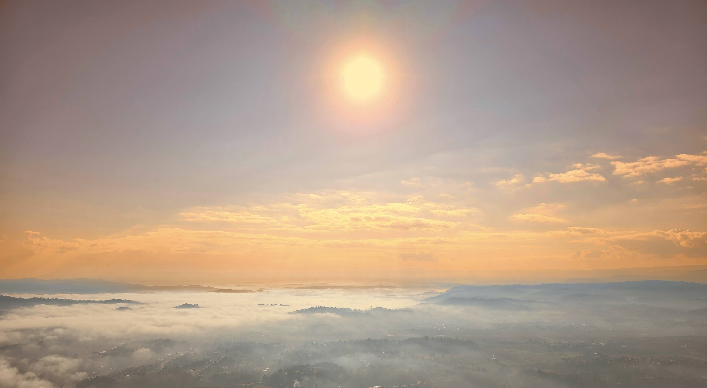<p>The sky slowly shifted.</p><p>Deep blue…<br>to soft orange.</p><p>Clouds rolled below the cliffs.</p><p>Rising.<br>Falling.<br>Like breath.</p><p>Shillong mornings felt different.</p><p>Colder.<br>Cleaner.<br>More intimate.</p><p>We stood there… silently.</p><p>No rush for photos.<br>No need to prove.</p><p>Just… presence.</p><h4 class="font-bold text-xl mt-6 mb-2">Letting Go of Control</h4><p>On the drive back,<br>I noticed something simple.</p><p>For the first time,<br>I wasn’t responsible.</p><p>No navigation.<br>No throttle control.<br>No scanning the road.</p><p>I was just… sitting.</p><p>Looking.<br>Absorbing.</p><p>That felt new.</p><h4 class="font-bold text-xl mt-6 mb-2">A Home Away From Home</h4><p>Back home,<br>breakfast was ready.</p><p>His father spoke warmly.</p><p>His mother ensured I ate properly.</p><p>His sister interacted naturally.</p><p>No formality.</p><p>No “guest treatment.”</p><p>Just… belonging.</p><p>They didn’t host me.</p><p>They included me.</p><h4 class="font-bold text-xl mt-6 mb-2">Rest</h4><p>We had already decided —<br>for the next two days,<br>my bike would rest.</p><p>Meghalaya evenings turn cold.<br>Fog builds fast.</p><p>Riding narrow hill roads after sunset…<br>was not wise.</p><p>For the first time in this journey,<br>I allowed him to rest.</p><p>After everything he had carried me through…</p><p>He deserved it.</p><p>And maybe…<br>I did too.</p><h4 class="font-bold text-xl mt-6 mb-2">Into Meghalaya</h4><p>We took my friend’s car<br>and drove toward Cherrapunji.</p><p>The drive felt cinematic.</p><p>Green cliffs… opening into valleys.</p><p>Clouds brushing the road.</p><p>The hills here… were soft.</p><p>Not harsh.<br>Not intimidating.</p><p>Endless.<br>Rolling.</p><p>The roads were clean.<br>Smooth.<br>Free.</p><p>Outside the city —</p><p>No chaos.<br>No rush.</p><p>Just… space to breathe.</p><h4 class="font-bold text-xl mt-6 mb-2">Seeing Without Expectation</h4><p>We visited Nohkalikai Falls.</p>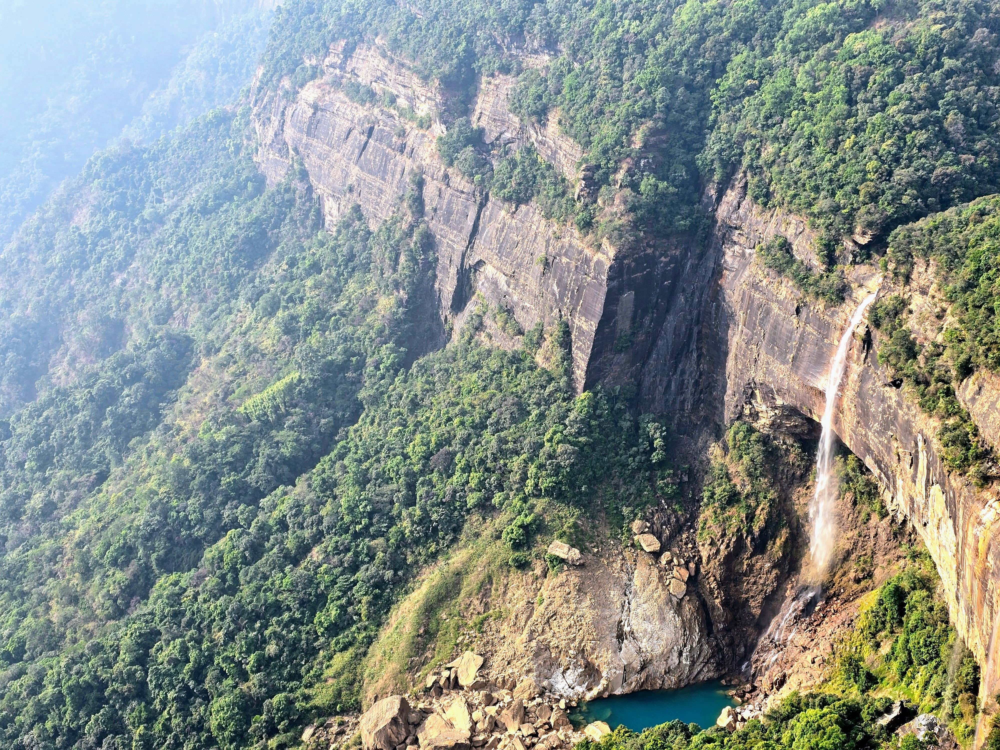<p>There was very little water.</p><p>But still…</p><p>standing there,<br>looking into the depth…</p><p>it felt beautiful.</p><p>It wasn’t about the water.</p><p>It was about… the place.</p><h4 class="font-bold text-xl mt-6 mb-2">Nature’s Patience</h4><p>We moved toward viewpoints.</p><p>Mist flowing through valleys…<br>like slow smoke.</p><p>Then… the Living Root Bridges.</p><p>Nature shaped over decades.</p><p>Roots… becoming pathways.</p><p>Human patience.<br>Natural growth.</p><p>Working together… silently.</p><h4 class="font-bold text-xl mt-6 mb-2">Expansion</h4><p>Later,<br>we reached Laitlum Canyon.</p><p>That place… was something else.</p><p>Valleys stretching endlessly.</p>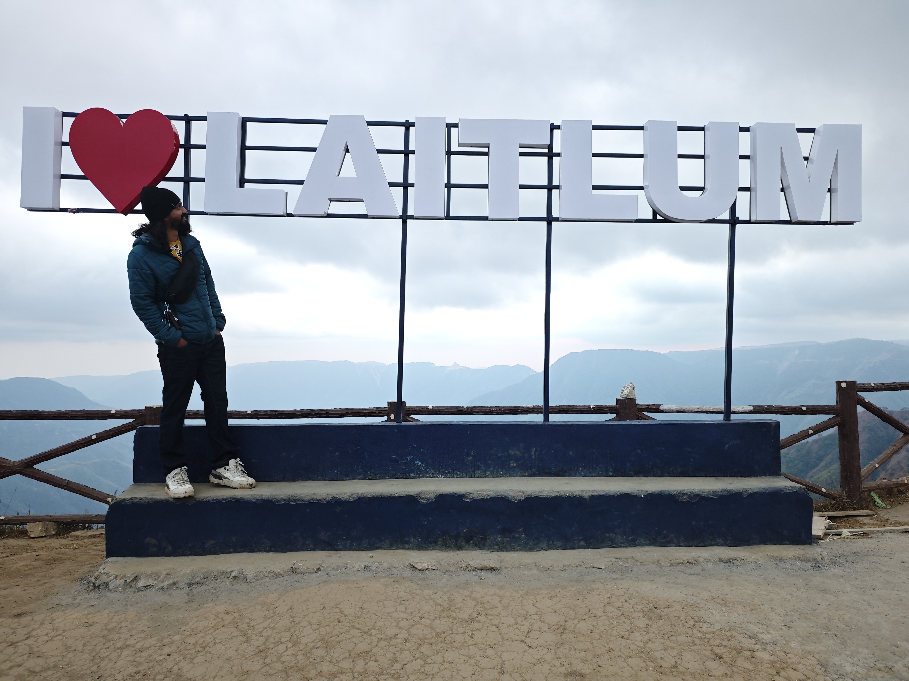<p>Layers fading into distance.</p><p>Wind moving across the cliffs.</p><p>Standing there…</p><p>I felt something familiar.</p><p>Like Kashi.</p><p>But calmer.</p><p>Kashi was intensity.</p><p>Laitlum… was expansion.</p><p>In Kashi,<br>you feel watched.</p><p>Here…</p><p>you feel dissolved.</p><h4 class="font-bold text-xl mt-6 mb-2">A Different Culture</h4><p>Lunch was simple.</p><p>Local Khasi food.</p><p>Warm.<br>Comforting.</p><p>One thing stood out — cleanliness.</p><p>Dustbins everywhere.</p><p>People respecting space.</p><p>Not forced.</p><p>Just… culture.</p><p>I felt inspired.</p><p>Less crowd.<br>More awareness.<br>More respect.</p><h4 class="font-bold text-xl mt-6 mb-2">Evening Falls Fast</h4><p>By 5–5:30 PM,<br>darkness arrived quickly.</p><p>In Meghalaya,<br>evening doesn’t settle.</p><p>It drops.</p><p>We returned before fog thickened.</p><h4 class="font-bold text-xl mt-6 mb-2">Warmth That Stays</h4><p>Back home,<br>warmth continued.</p><p>His father shared stories.</p><p>His sister spoke freely.</p><p>Laughter… came naturally.</p><p>No effort to impress.</p><p>Only connection.</p><p>Dinner was simple.</p><p>But full of warmth.</p><p>We spoke late into the night.</p><p>Life.<br>Careers.<br>Years that passed.</p><p>Time had changed many things.</p><p>But friendship… hadn’t.</p><h4 class="font-bold text-xl mt-6 mb-2">Reconnection</h4><p>When I lay down to sleep,</p><p>I realised something quietly powerful.</p><p>This journey wasn’t only about solitude.</p><p>It was also about… reconnection.</p><p>With old friends.</p><p>With families.</p><p>With versions of myself… from years ago.</p><p>And outside,</p><p>my bike rested.</p><p>Not in a parking lot.</p><p>Not in a chaotic lane.</p><p>Not under worry.</p><p>But in a friend’s home.</p><p>Safe.</p><p>Just like… me.</p>', quote: '"In Kashi, you feel watched by centuries. In Laitlum, you feel dissolved into the horizon."' },
        { type: 'chapter', id: 'ch19', title: 'From Silent Hills to Festive Streets', chapter: 'Ch  19', stats: 'Responsibility', image: 'images/chapter-19.jpg', desc: '<h4 class="font-bold text-xl mt-6 mb-2">A Morning in Silence</h4><p>Shillong & Sohra – Christmas Eve</p><p>I woke up around 5:45 AM.<br>Before anyone else.<br>Shillong mornings had already become special to me, so I decided to go alone to the sunrise point.</p><p>When I reached, no one was there.<br>Just me.<br>And the horizon.</p>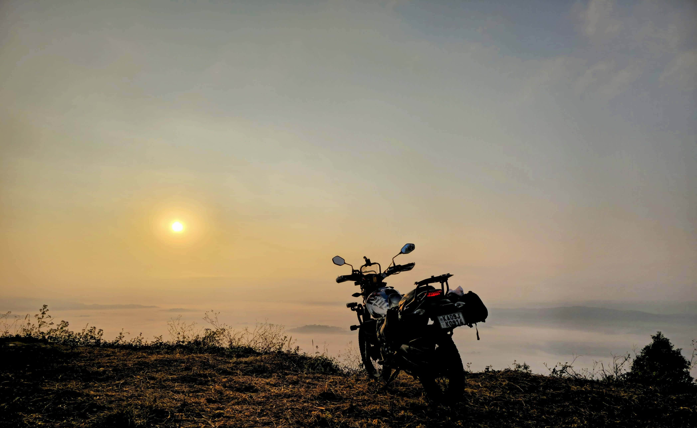<p>Clouds rolled below the cliffs like a silent ocean.<br>The sky slowly shifted colours.<br>The air was sharp and clean.</p><p>Standing there alone,<br>I felt something deeply peaceful —<br>not excitement,<br>not thrill —<br>just stillness.</p><p>Moments like that don’t need witnesses.<br>They need presence.</p><h4 class="font-bold text-xl mt-6 mb-2">Back to Movement</h4><p>After spending quiet time there,<br>I returned home.</p><p>By then, my friend was ready.<br>We had breakfast around 7:30 AM<br>and headed toward Cherrapunji again.</p><p>That day was about exploration.</p><h4 class="font-bold text-xl mt-6 mb-2">Nature Without Effort</h4><p>We visited the Seven Sisters Falls —<br>water streaming down cliffs in multiple ribbons.</p><p>The scale was overwhelming.</p><p>We drove through winding roads<br>that opened into valleys<br>and fog-covered ridges.</p><p>The landscape of Meghalaya<br>is not loud —<br>it’s dramatic without trying.</p><h4 class="font-bold text-xl mt-6 mb-2">Into the Earth</h4><p>We explored caves —<br>dark,<br>damp,<br>echoing.</p><p>Walking through those narrow rock passages<br>felt adventurous in a completely different way<br>from riding highways.</p><p>Inside the caves,<br>you hear your own breath louder than anything else.</p><h4 class="font-bold text-xl mt-6 mb-2">Endless Green</h4><p>We stopped at picnic points<br>overlooking endless green valleys.</p>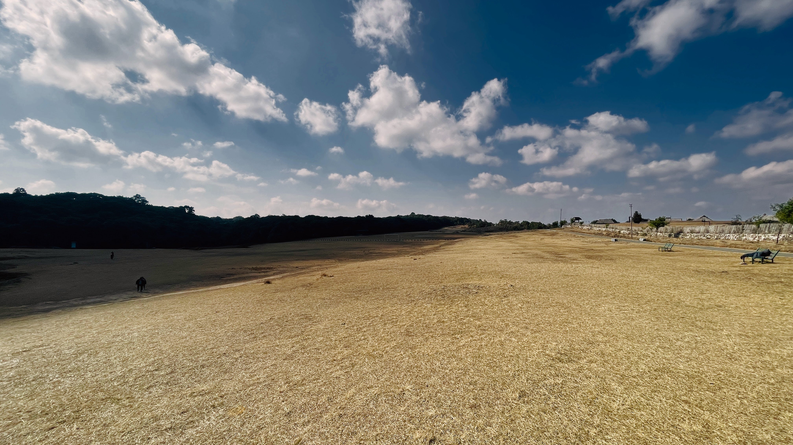<p>Wind moving across the hills.<br>Silence stretching beyond sight.</p><p>Trust me —<br>the landscape was mind-blowing.</p><p>It wasn’t just beautiful.<br>It felt untouched.</p><h4 class="font-bold text-xl mt-6 mb-2">A City in Celebration</h4><p>By around 5:30 PM,<br>darkness began falling again.</p><p>We headed back toward Shillong.</p><p>But that evening was different.</p><p>It was December 24th.</p><p>As we entered Police Bazaar,<br>the city was alive.</p><video src="videos/chapter-19_0.mp4" autoplay loop muted playsinline class="w-full h-64 sm:h-96 object-cover rounded-xl shadow-md my-8"></video><p>Music.<br>Lights.<br>People dancing in the streets.<br>Groups celebrating Christmas Eve.</p><p>It felt vibrant and joyful —<br>a completely different energy<br>from the silent valleys we had just left.</p><p>We walked around.<br>Had tea.<br>Absorbed the festive atmosphere.</p><p>By the time we checked the clock,<br>it was already around 10:30 PM.</p><p>Eventually,<br>we headed home.</p><p>But my day wasn’t over.</p><h4 class="font-bold text-xl mt-6 mb-2">Grease, Determination, and Gratitude</h4><p>For days,<br>I had been planning to change my engine oil.</p><p>Long-distance riding demands maintenance.</p><p>After reaching Shillong,<br>I had managed to find the specific 1.5-litre oil I usually use.</p><p>That night,<br>after dinner,<br>I decided to change it.</p><p>Christmas Eve.<br>Cold night.<br>Grease on my hands.</p><p>I removed the bolts carefully.</p><p>But one bolt got stuck.</p><p>The sump bolt wouldn’t open easily.</p><p>My tools were limited.<br>One tool even got slightly damaged.</p><p>My friend was tired,<br>yet he stayed with me.</p><p>We tried patiently.<br>Slowly.<br>Carefully.</p><p>It took nearly an hour<br>just to remove that bolt.</p><p>When it finally opened,<br>I felt relief —<br>not dramatic relief,<br>but quiet satisfaction.</p><p>The oil drained.<br>Fresh oil went in.</p><p>But tightening the bolt properly<br>was difficult with the tools we had.</p><p>Still,<br>I managed to secure it enough<br>to recheck in the morning.</p><h4 class="font-bold text-xl mt-6 mb-2">Choosing Responsibility</h4><p>I didn’t want to delay leaving the next day.</p><p>It was Christmas.</p><p>I didn’t want my friend to sacrifice his time with family<br>just to accommodate my departure.</p><p>So I chose to leave early the next day.</p><p>After finishing the oil change,<br>I even washed the bike.</p><p>Under cold water.<br>At midnight.</p><p>He stood there —<br>cleaned,<br>maintained,<br>ready.</p><h4 class="font-bold text-xl mt-6 mb-2">A Full Day</h4><p>By the time I lay down,<br>it was nearly 1 AM.</p><p>That day held everything:</p><p>Silent sunrise.<br>Waterfalls.<br>Caves.<br>Festive streets.<br>And mechanical struggle.</p><p>And somewhere between music in Police Bazaar<br>and grease under my nails,<br>I realised something:</p><p>This journey was no longer just about destinations.</p><p>It was about responsibility.</p><p>Toward my machine.<br>Toward my friendships.<br>Toward my own decisions.</p><h4 class="font-bold text-xl mt-6 mb-2">Gratitude</h4><p>And as I fell asleep,<br>tired but satisfied,</p><p>I felt grateful.</p><p>For the road.<br>For the hills.<br>For my friend who stayed up with me.<br>And for a bike that had carried me this far<br>without ever giving up.</p>', quote: '"This journey was no longer just about destinations. It was about responsibility."' },
        { type: 'chapter', id: 'ch20', title: 'Where the Road Taught Me to Stay Calm', chapter: 'Ch  20', stats: 'Adaptation', image: 'images/chapter-20.jpg', desc: '<h4 class="font-bold text-xl mt-6 mb-2">A Morning of Responsibility</h4><p>South Meghalaya</p><p>It was Christmas morning.<br>I woke up around 6:30 AM.</p><p>Before leaving,<br>I wished my friend and his family.</p><p>There was festive warmth in the house —<br>simple,<br>grounded,<br>genuine.</p><p>But before heading toward South Meghalaya,<br>I had unfinished responsibility.</p><p>The drain bolt from last night’s oil change<br>had not been fully tightened.</p><p>I could not take a risk.</p><h4 class="font-bold text-xl mt-6 mb-2">Fixing What Matters</h4><p>Early morning,<br>on Christmas Day,<br>I searched for a garage.</p><p>Most places were closed.</p><p>Finally,<br>at a Tata Motors service station,<br>a kind mechanic helped me.</p><p>He understood the issue immediately,<br>found the correct ring,<br>and tightened it properly.</p><p>That moment brought relief.</p><p>Now I could ride with confidence.</p><p>I started toward South Meghalaya.</p><h4 class="font-bold text-xl mt-6 mb-2">Into the Hills</h4><p>First,<br>I stopped briefly near Umiam Lake —<br>the water calm,<br>reflecting the morning sky.</p>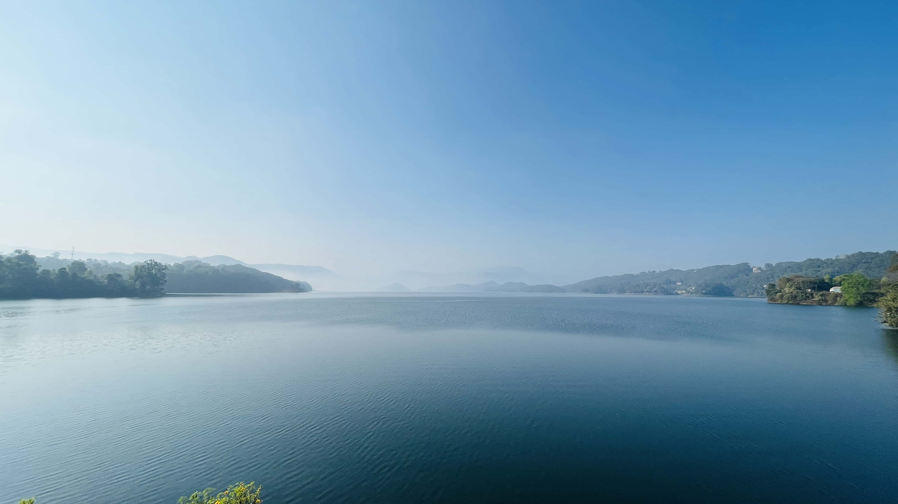<p>Then I continued deeper into the hills.</p><h4 class="font-bold text-xl mt-6 mb-2">The Sacred Forest</h4><p>One of the places I had planned to visit<br>was the Sacred Forest — Mawphlang Sacred Grove.</p><p>As I entered,<br>the atmosphere changed.</p><p>The forest felt untouched.<br>Old.<br>Almost guarded.</p><p>A local guide joined me.</p><p>And the surprising part —<br>he spoke Kannada.</p>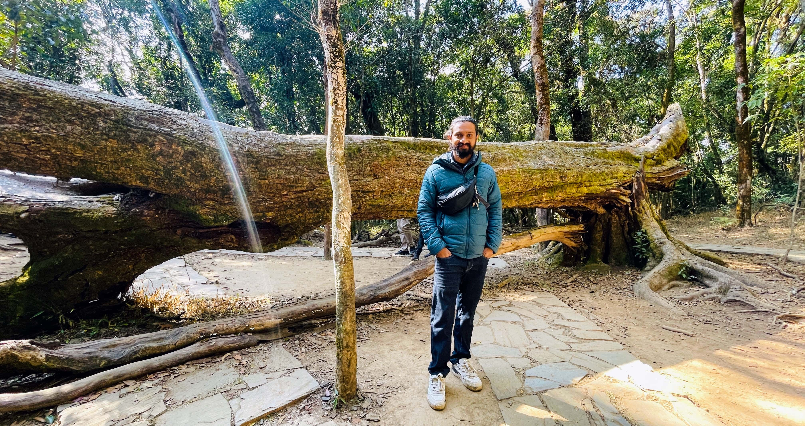<p>He had studied and lived in Bengaluru for some time.</p><p>Hearing Kannada in the middle of Meghalaya<br>felt unexpected and comforting.</p><p>He shared the history of the sacred grove —<br>how local Khasi communities protect the forest spiritually.</p><p>Nothing inside the forest can be taken out.<br>Not even a leaf.</p><p>It is believed that disturbing it brings misfortune.</p><p>The trees were massive.<br>Roots intertwined.<br>The ground soft with centuries of decay.</p><p>The forest didn’t feel like nature alone.</p><p>It felt sacred… in intention.</p><p>Listening to the guide speak about rituals,<br>tribal history,<br>and conservation,<br>made me respect the land even more.</p><p>That place wasn’t a tourist spot.</p><p>It was a living belief system.</p><h4 class="font-bold text-xl mt-6 mb-2">Toward Dawki</h4><p>From there,<br>I started toward Dawki —<br>home to the Umngot River,<br>near the Bangladesh border.</p>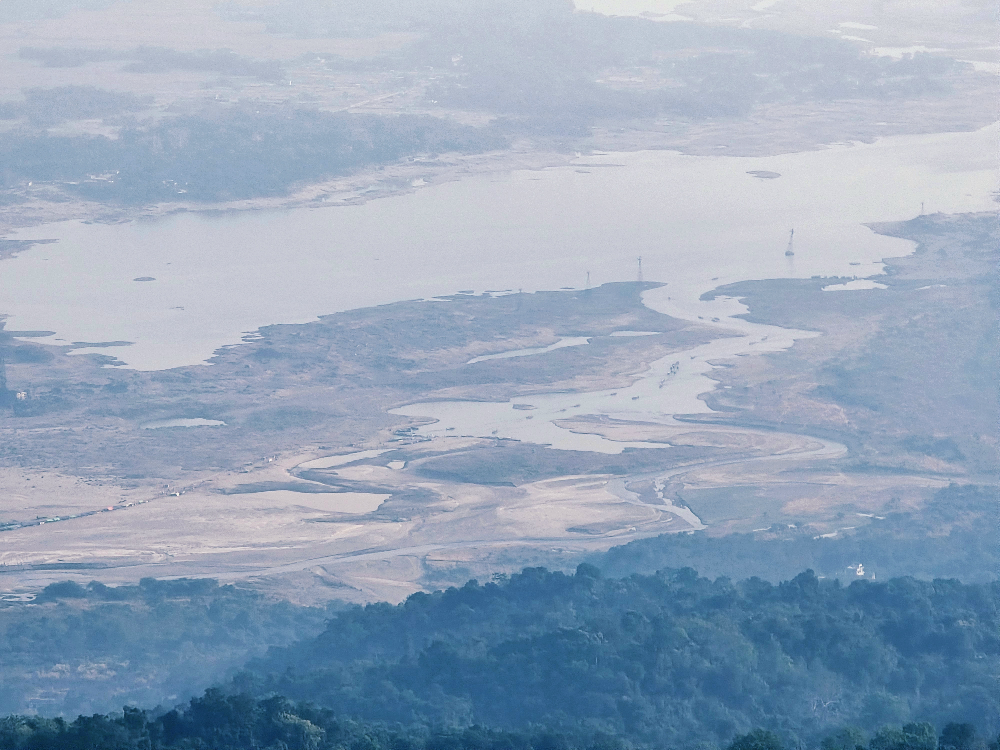<p>The road initially was fine.</p><p>Then suddenly —<br>it wasn’t.</p><p>For several kilometres,<br>it was extremely bad.</p><p>Broken patches.<br>Mud.<br>Uneven surfaces.</p><p>I had to ride carefully.</p><p>My bike handled it well,<br>but I could feel the strain.</p><p>Every time the road worsened,<br>I slowed down…<br>and mentally thanked him<br>for holding steady.</p><h4 class="font-bold text-xl mt-6 mb-2">The Cleanest Village</h4><p>After about 10 kilometres of rough stretch,<br>the road improved.</p><p>And then I saw it —<br>Mawlynnong.</p>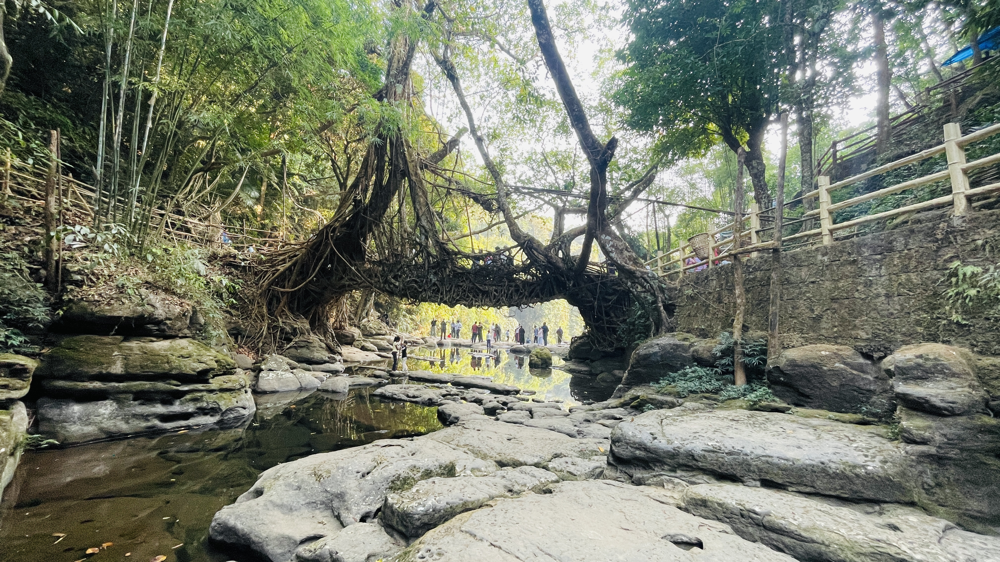 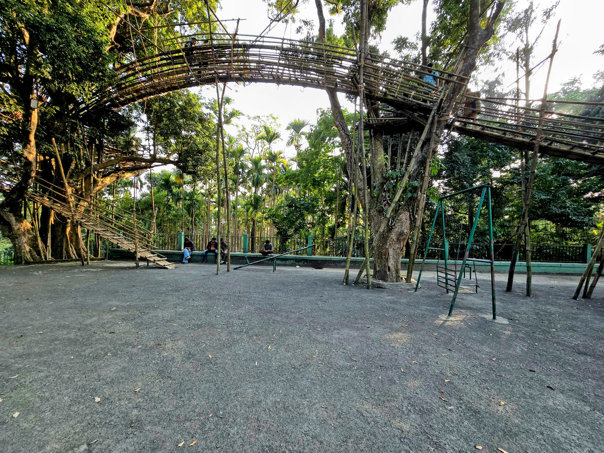 <p>The cleanest village in Asia.</p><p>The village felt different.</p><p>Neat pathways.<br>Bamboo dustbins.<br>Well-maintained houses.<br>Flowers everywhere.</p><p>Cleanliness here wasn’t forced.</p><p>It was cultural.</p><p>I spent time walking around.</p><p>Spoke to a few local men.</p><p>Their pride was visible.</p><p>It wasn’t about tourism alone —<br>it was about identity.</p><p>From a nearby viewpoint,<br>I could see the Bangladesh border<br>stretching far into the plains.</p><p>Standing there,<br>I realised how far I had come<br>from Mysuru.</p><h4 class="font-bold text-xl mt-6 mb-2">Dawki</h4><p>Later,<br>I reached Dawki.</p><p>But the river wasn’t at its best.</p><p>Due to construction upstream,<br>the water looked muddy.</p><p>It wasn’t the crystal clarity<br>I had imagined.</p><p>Still,<br>the setting was beautiful.</p><p>Mountains hugging the river.<br>Boats moving slowly.<br>Border presence in the distance.</p><p>Around 4 PM,<br>I decided to head back toward Shillong.</p><h4 class="font-bold text-xl mt-6 mb-2">Dust and Darkness</h4><p>Then suddenly —<br>my headlight stopped working.</p><p>I was shocked.</p><p>I pulled over immediately.<br>Turned off the ignition.<br>Checked the wiring.</p><p>But it was dark.</p><p>Dust everywhere.<br>Hands already dirty.</p><p>I couldn’t properly figure it out.</p><p>For a few seconds,<br>there was silence inside me.</p><p>This wasn’t a small problem.</p><p>Evening in Meghalaya.<br>Narrow roads.<br>Fog could return anytime.</p><h4 class="font-bold text-xl mt-6 mb-2">Choosing Calm</h4><p>But something inside me<br>didn’t panic.</p><p>A few days earlier,<br>I would have.</p><p>But not now.</p><p>I told myself calmly —<br>You will reach Shillong.</p><p>Even if the light fails completely,<br>I have options.</p><p>Call my friend.<br>Stop somewhere safe.<br>Wait.</p><p>This journey had taught me something powerful:</p><p>Not every problem needs panic.</p><p>Sometimes,<br>it needs pause.</p><h4 class="font-bold text-xl mt-6 mb-2">Moving Forward</h4><p>So instead of worrying,<br>I adapted.</p><p>I followed cars<br>to use their headlights.</p><p>Reduced speed.<br>Stayed alert.</p><p>Every kilometre felt earned.</p><p>Dust covered my jacket.<br>Gloves were dirty.<br>Visor layered with mud.</p><p>But inside,<br>I was steady.</p><p>Somewhere in that darkness,<br>I realised:</p><p>This journey has changed me.</p><p>Earlier,<br>obstacles felt like interruptions.</p><p>Now,<br>they feel like experiences.</p><p>I don’t have to stop.</p><p>Maybe I pause.<br>But I never stop.</p><h4 class="font-bold text-xl mt-6 mb-2">A Quiet Transformation</h4><p>When I finally reached my friend’s home<br>and parked the bike safely,</p><p>I felt deep gratitude.</p><p>For the machine<br>that endured the terrain.</p><p>For the lessons hidden in inconvenience.</p><p>For the growth<br>I couldn’t see happening,<br>but could feel now.</p><p>That night,<br>sitting at the Christmas dinner table,</p>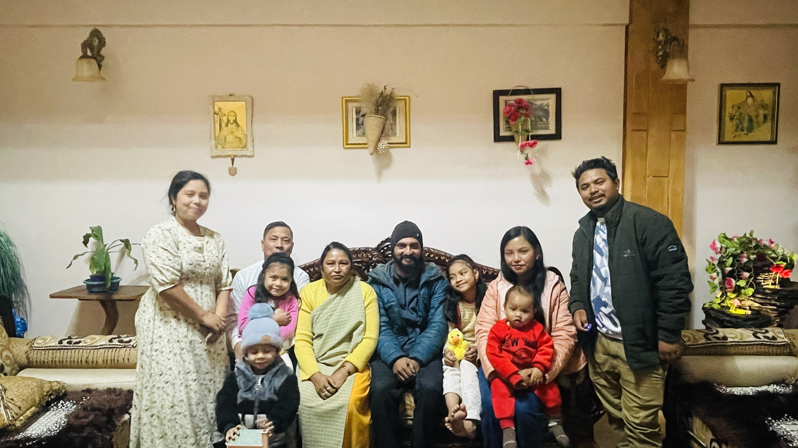<p>I wasn’t just tired.</p><p>I was transformed.</p><p>Not dramatically.</p><p>But quietly.</p><p>And quietly…<br>is how real change happens.</p>', quote: '"I don’t have to stop. Maybe I pause. But I never stop."' },
        { type: 'chapter', id: 'ch21', title: 'In the Dark, I Found People', chapter: 'Ch  21', stats: 'Resilience', image: 'images/chapter-21.jpg', desc: '<h4 class="font-bold text-xl mt-6 mb-2">Fixing Before Leaving</h4><p>I woke up around 5 AM.<br>The first thing I did was check my bike.</p><p>The headlight that had stopped working the previous evening needed fixing.</p><p>With limited tools,<br>and whatever I had available,<br>I managed to secure the wiring<br>and taped it carefully.</p><p>It wasn’t a perfect repair.<br>But it would work.</p><p>That moment felt satisfying —<br>small mechanical victories on the road build confidence.</p><h4 class="font-bold text-xl mt-6 mb-2">A Gentle Farewell</h4><p>After fixing the light,<br>I took a bath and packed everything slowly.</p><p>Outside,<br>Shillong was still quiet.</p><p>My friend wasn’t ready to let me leave immediately.</p><p>Before my departure,<br>he took me to a few beautiful places around Shillong one last time.</p><p>The hills were calm.<br>The air cool.<br>The views felt like a gentle farewell from Meghalaya.</p><p>Around noon,<br>he took me to a small local restaurant<br>for authentic Meghalaya food.</p>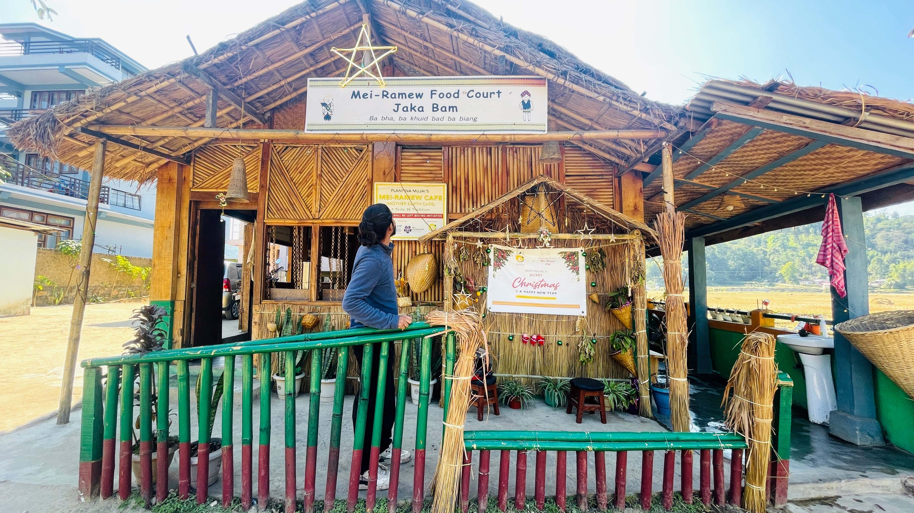<p>It was simple.<br>Local.<br>Warm.</p><p>Food always tastes different<br>when shared with people who genuinely care.</p>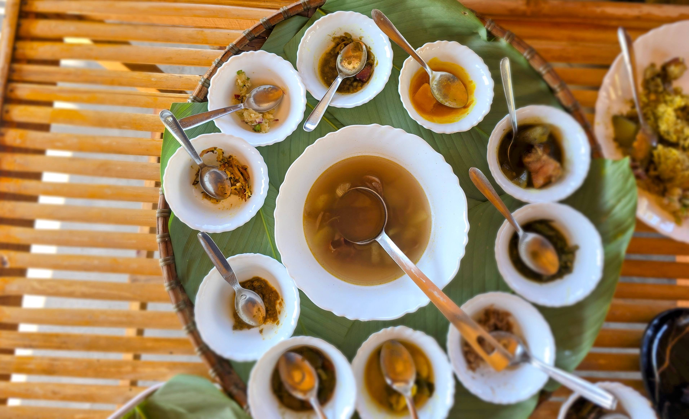<p>By the time we returned home,<br>it was already around 1:30 PM.</p><h4 class="font-bold text-xl mt-6 mb-2">Saying Goodbye</h4><p>Then came the difficult part.</p><p>Saying goodbye.</p><p>His family gathered near the entrance.</p><p>His father spoke kindly,<br>wishing me a safe journey ahead.</p><p>His sister smiled warmly.</p><p>And my friend…</p><p>After 7–8 years,<br>we had met again,<br>spent meaningful days together,<br>and now the road was calling me away.</p><p>We hugged.</p><p>It was emotional.<br>Not dramatic.<br>But real.</p><p>I started the bike<br>and slowly rolled out of the lane.</p><p>Shillong disappeared behind me.</p><h4 class="font-bold text-xl mt-6 mb-2">Into Uncertainty</h4><p>My plan for the day<br>was to reach Silchar in Assam.</p><p>I assumed the road would be manageable.</p><p>But reality unfolded differently.</p><p>After about 100 kilometres,<br>the road began filling with trucks.</p><p>Endless trucks.</p><p>Heavy vehicles crawling slowly<br>through narrow stretches of road.</p><p>The landscape was beautiful.</p><p>But the traffic was intimidating.</p><p>Somewhere along the way,<br>I passed areas close to the Bangladesh border.</p><p>The geography felt different.<br>The air felt heavier.</p><h4 class="font-bold text-xl mt-6 mb-2">When Everything Stops</h4><p>By around 5 PM,<br>darkness had already taken over the hills.</p><p>I realised something uncomfortable.</p><p>Maybe I had made the wrong decision<br>by leaving Shillong late.</p><p>Around 6 PM,<br>everything stopped.</p><p>Not slowed.<br>Stopped.</p><p>A long line of trucks stretched endlessly.</p><p>Dust filled the air.</p><p>The road itself had almost disappeared in places.</p><p>I asked a few truck drivers.</p><p>One of them said quietly,<br>“Brother, this may take days.”</p><p>For a moment,<br>I stood there.</p><p>Looking at that endless line<br>disappearing into darkness.</p><p>Strangely,<br>I didn’t panic.</p><h4 class="font-bold text-xl mt-6 mb-2">Adapting to the Road</h4><p>This… was real adventure.</p><p>Not the kind you imagine.<br>The kind you experience.</p><p>So I adapted.</p><p>Slowly.<br>Carefully.</p><p>I began navigating through small gaps between trucks.</p><p>Sometimes the path was barely wide enough.</p><p>Sometimes there was no proper road at all.</p><p>Dust everywhere.<br>Darkness all around.</p><p>But my bike moved steadily.</p><p>Every metre felt earned.</p><h4 class="font-bold text-xl mt-6 mb-2">Alone, But Not Alone</h4><p>Eventually,<br>I managed to cross that stretch.</p><p>But now another problem appeared.</p><p>No stays.<br>No proper towns.<br>And complete darkness.</p><p>It was around 7:30 PM.</p><p>I called my friend in Shillong.</p><p>He suggested continuing to Silchar —<br>another 45 kilometres.</p><p>I continued.</p><p>And that stretch…<br>was something else.</p><p>For almost 100+ kilometres,<br>the road felt isolated.</p><p>Empty.<br>Dark.</p><p>No proper lights.<br>No crowd.<br>No noise.</p><p>Just road.</p><p>And occasionally… people.</p><p>And that’s what stayed with me.</p><p>Every time I slowed down<br>or passed someone,<br>they noticed me.</p><p>A lone rider.<br>Covered in dust.<br>Riding through darkness.</p><p>Some waved.<br>Some nodded.<br>Some asked if everything was okay.</p><p>Few even stopped me just to check.</p><p>“Where are you going?”<br>“Be careful.”<br>“Road ahead is rough.”</p><p>They didn’t know me.</p><p>But they cared.</p><p>On that lonely road,<br>I wasn’t completely alone.</p><p>That human connection…<br>in the middle of isolation…<br>meant a lot.</p><h4 class="font-bold text-xl mt-6 mb-2">Reaching Safety</h4><p>Finally,<br>the road improved.</p><p>Lights appeared.</p><p>I entered Silchar.</p><p>Compared to what I had just crossed,<br>it felt like relief.</p><p>I found a budget stay.<br>Checked in.</p><p>Relief.</p><p>Later,<br>I met another traveller.</p><p>Within an hour,<br>we became friends.</p><p>We went out for dinner.</p><p>Simple food.<br>Easy conversation.</p><p>And after a long,<br>unpredictable day,<br>that normal moment felt comforting.</p><h4 class="font-bold text-xl mt-6 mb-2">The Nature of the Road</h4><p>Back in the room,<br>as I lay down,</p><p>I realised:</p>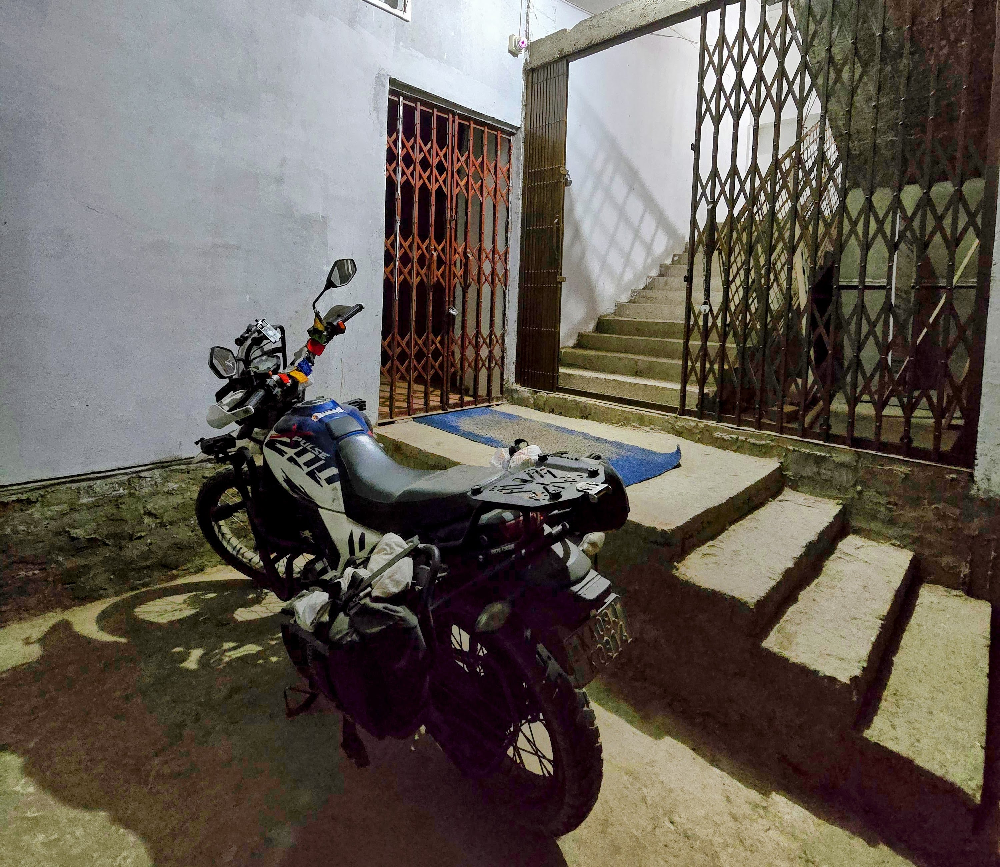<p>The day had started with warmth.<br>And ended with dust,<br>darkness,<br>and resilience.</p><p>But that is the nature of long journeys.</p><p>You leave comfort.</p><p>And the road reminds you —<br>nothing is guaranteed.</p><p>Except the experience.</p>', quote: '"Not every difficult moment is a problem. Sometimes it is the story."' },
        { type: 'chapter', id: 'ch22', title: 'When the Road Changed My Plan', chapter: 'Ch  22', stats: 'Serendipity', image: 'videos/chapter-22.mp4', desc: '<h4 class="font-bold text-xl mt-6 mb-2">A Day Begins Simply</h4><p>I woke up early again,<br>around 5 AM.</p><p>Silchar was still quiet.</p><p>I packed my luggage,<br>took a quick bath,<br>and prepared for the day’s ride.</p><p>My bike stood outside —<br>ready as always.</p><p>Before leaving,<br>I realised something important.</p><p>I was completely out of cash.</p><p>So after riding about 30–35 kilometres,<br>I stopped near an ATM<br>and withdrew some money.</p><p>Long-distance travel teaches you<br>to manage small practical things carefully —<br>fuel,<br>cash,<br>food,<br>rest.</p><p>Around 8:30 or 9 AM,<br>I stopped again.</p><p>I was hungry.</p><p>I found a small local place<br>and had breakfast.</p><h4 class="font-bold text-xl mt-6 mb-2">A Suggestion That Changed Everything</h4><p>While eating,<br>I began talking with a few local people.</p><p>One of them asked about my ride<br>and suggested something unexpected.</p><p>“Why don’t you go to Jampui Hills?”</p><p>My original plan was simple —<br>enter Tripura<br>and reach Agartala.</p><p>But travel rarely follows fixed plans.</p><p>The more they spoke about Jampui Hills —<br>the views,<br>the landscape,<br>the peaceful villages —</p><p>the more curious I became.</p><p>I decided to at least ride toward that side<br>and see what happened.</p><h4 class="font-bold text-xl mt-6 mb-2">Entering Tripura</h4><p>By around 11:30 AM,<br>I reached near Kanchanpur —<br>the gateway to Jampui Hills.</p>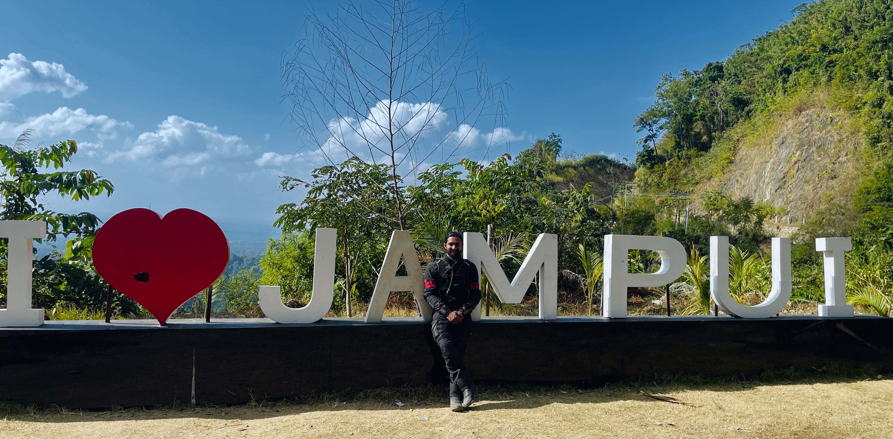<p>I met a few locals there.</p><p>One of them had worked in Bengaluru.</p><p>When he heard I was from Karnataka,<br>he immediately spoke in Kannada.</p><p>In the middle of Tripura,<br>hearing Kannada felt unexpected…<br>and comforting.</p><p>He encouraged me to go to Jampui Hills.</p><p>It was around 35 kilometres away.</p><p>I hesitated.</p><p>It was already 12:30 PM.</p><p>Finding a stay later could be difficult.</p><p>But another thought appeared.</p><p>If I don’t go now…<br>I might regret it.</p><p>So I went.</p><p>That decision made the day unforgettable.</p><h4 class="font-bold text-xl mt-6 mb-2">Climbing the Hills</h4><p>The road began to rise.</p><p>Green valleys opened slowly.</p>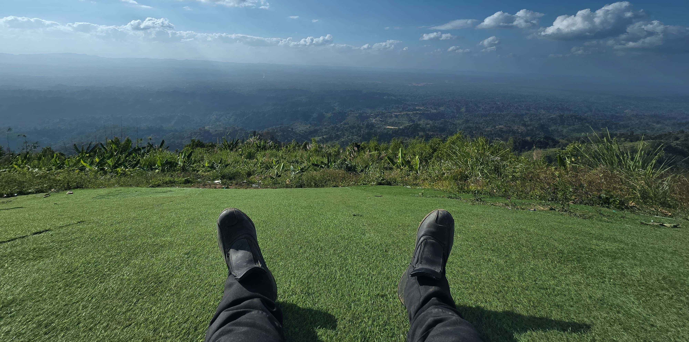<p>I stopped a few times —<br>just to look.</p><p>At one point,<br>I paused near a small roadside place.</p><p>A few girls were sitting nearby.</p><p>We spoke briefly.</p><p>Simple conversations.<br>Easy moments.</p><p>Further ahead,<br>a checkpost.</p><p>Police stopped me.</p><p>Document verification.</p><p>Routine.</p><p>But their reaction wasn’t routine.</p><p>“Oh my God,<br>you came all the way from there?”</p><p>They were surprised.</p><p>Encouraging.</p><p>One officer even told me<br>to share my journey with others.</p><p>That moment added energy.</p><p>Strangers…<br>becoming supporters.</p><h4 class="font-bold text-xl mt-6 mb-2">Flying Over Tripura</h4><p>Around 2 PM,<br>I reached Jampui Hills.</p><p>And something unexpected waited.</p><p>Paragliding.</p><p>Without thinking too much,<br>I decided to try.</p><p>And it became one of the most unforgettable moments.</p><p>I stayed in the air for nearly 30–45 minutes.</p><video src="videos/chapter-22.mp4" autoplay loop muted playsinline class="w-full h-64 sm:h-96 object-cover rounded-xl shadow-md my-8"></video><p>Below me —<br>endless green hills.</p><p>Like an ocean.</p><p>Villages…<br>roads…<br>forests…</p><p>everything looked small.</p><p>For a moment,<br>everything disappeared.</p><p>No dust.<br>No fatigue.<br>No distance.</p><p>Only… freedom.</p><p>The landing wasn’t perfect.<br>Weight imbalance.</p><p>But the experience —<br>worth everything.</p><p>And then… something beautiful.</p><p>People gathered.</p><p>Some clapped.</p><p>Some came forward.</p><p>Curious.<br>Warm.</p><p>They asked about my ride.</p><p>When they heard my journey,<br>they smiled.</p><p>They said:</p><p>“We are happy you came.<br>Many don’t know how beautiful Tripura is.”</p><p>That stayed with me.</p><p>I wasn’t just passing through.</p><p>I felt welcomed.</p><h4 class="font-bold text-xl mt-6 mb-2">An Unplanned Night</h4><p>After spending time there,<br>I explored nearby villages.</p><p>One of the cleanest villages in Tripura.</p>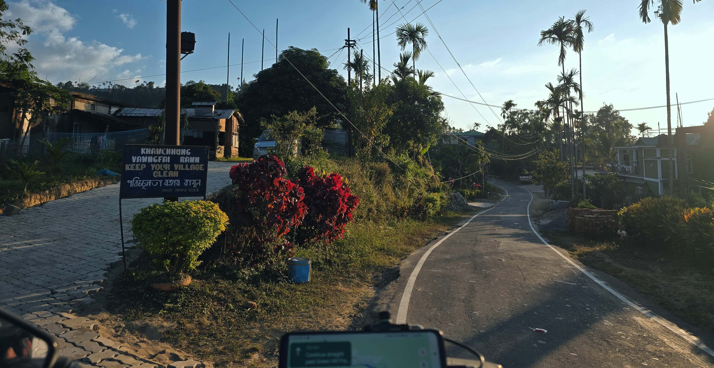<p>But it was Saturday evening.</p><p>Weekend.</p><p>All stays were full.</p><p>For a moment,<br>worry appeared.</p><p>But again —<br>the road responded.</p><p>A local man understood my situation.</p><p>He offered a simple place.</p><p>Not a hotel.</p><p>Just a bed.</p>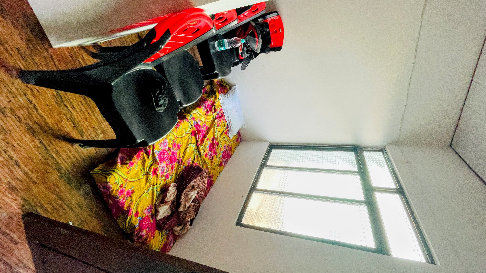<p>But enough.</p><p>This journey was never about luxury.</p><p>It was about experience.</p><p>Later,<br>someone arranged food.</p><p>We ate together.</p><p>Spoke for a while.</p><p>Simple food.</p><p>Perfect taste.</p><h4 class="font-bold text-xl mt-6 mb-2">Listening to the Road</h4><p>That night,<br>lying in that small room,</p><p>I thought about the day.</p><p>A random breakfast conversation…<br>changed everything.</p><p>It gave me:</p><p>A new place.<br>New people.<br>A memory I’ll never forget.<br>And a lesson.</p><p>Sometimes,<br>the best parts of a journey<br>are not planned.</p><p>They happen…<br>when you listen to the road.</p><p>Outside,<br>my bike rested quietly.</p><p>After climbing the hills of Tripura.</p><p>Faithful.</p><p>Steady.</p><p>Somewhere along the journey,</p><p>he was no longer just a machine.</p><p>He had become my partner.</p><p>And with every kilometre,</p><p>I was falling in love —</p><p>with the road…<br>and with him…<br>all over again.</p>', quote: '"Sometimes the best parts of a journey are not planned. They happen when you listen to the road."' },
        { type: 'chapter', id: 'ch23', title: 'The Shortcut Through the Unknown', chapter: 'Ch  23', stats: 'Courage', image: 'images/chapter-23.jpg', desc: '<h4 class="font-bold text-xl mt-6 mb-2">A Quiet Beginning</h4><p>I woke up very early that morning, around 4:30 AM. The hills were still silent, and the air felt cold and calm.</p><p>I packed my bike carefully, tightened the luggage straps, and prepared for the day ahead.</p><p>Before leaving Jampui Hills, I wanted to witness one more sunrise. So I rode toward the viewpoint and waited.</p><p>Around 5:15 AM, the sky slowly began to glow. The sun rose gently over the hills, lighting the valleys of Tripura with a soft golden light. Only a few people were there, which made the moment even more special.</p>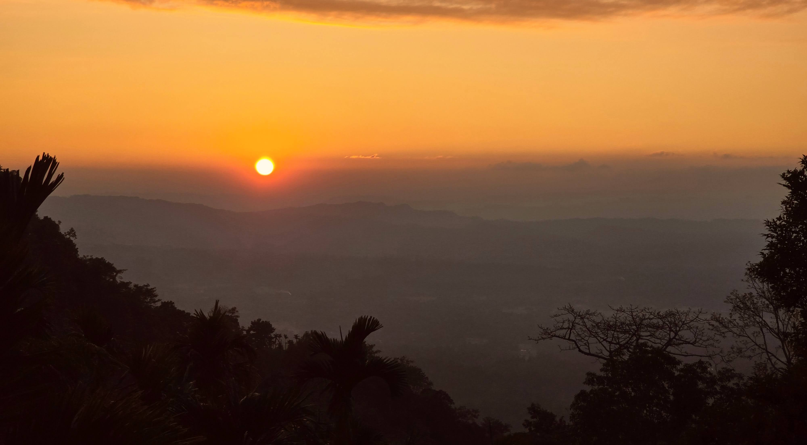<p>I stood quietly, absorbing the calmness.</p><h4 class="font-bold text-xl mt-6 mb-2">Choosing the Unknown</h4><p>After coming down around 5:30 AM, I met the person who had helped arrange my stay. We thanked each other, exchanged numbers, and spoke briefly.</p><p>Then it was time to leave. My next destination was Mizoram — Aizawl.</p><p>When I checked the route, there were two options: a longer but safer road of around 400+ kilometres, or a shorter 200-kilometre route through remote mountains.</p><p>The longer road meant comfort. The shorter road meant adventure.</p><p>I paused for a moment… and chose the shortcut.</p><h4 class="font-bold text-xl mt-6 mb-2">Losing the Map</h4><p>After riding a few kilometres, I reached a checkpost. My documents were verified, and I was allowed to proceed.</p><p>For the first few kilometres, Google Maps guided me. But after around 5 kilometres, it stopped.</p><p>No signal. No route. No guidance.</p><p>At that moment, I realised something clearly — from here, it was just me and the road.</p><p>Soon, the road itself began to disappear. What looked like a route on the map turned into a mountain trail — mud, broken paths, and narrow tracks.</p><p>I kept moving forward, following instinct.</p><h4 class="font-bold text-xl mt-6 mb-2">Through Isolation</h4><p>After some distance, I reached a small tribal village. A man approached me and asked questions in a slightly harsh tone. For a moment, I felt uncomfortable.</p><p>But I stayed calm, answered briefly, and continued.</p><p>Further ahead, I faced something even more challenging — a rusted iron bridge with holes in it, and a river flowing below.</p><p>I stopped, took a deep breath, and crossed it slowly, inch by inch.</p><p>The path became harder. Mountains on both sides. No proper road. No signboards. Complete isolation.</p><p>By around 7:30–8 AM, I had already covered nearly 50 kilometres.</p><p>I paused and asked myself — should I go back… or continue?</p><h4 class="font-bold text-xl mt-6 mb-2">Trusting the Ride</h4><p>Just then, I saw another rider ahead. That brought a sense of relief, and I followed him for some distance.</p><p>At one point, he stopped. I thought he needed a break, but he was drinking local alcohol and insisted I join. I politely refused, but he kept insisting.</p><p>The situation felt uncomfortable, so I decided to move ahead quickly. For a few kilometres, he followed me, which made me alert.</p><p>But then the road became tougher — steeper, more broken, more demanding.</p><p>And that’s when my bike showed its true strength.</p><p>Like an off-road machine, it handled everything — climbs, loose mud, rocks — with confidence.</p><p>Slowly, I gained distance.</p><p>In that moment, I trusted him completely. I felt proud… and deeply connected.</p><h4 class="font-bold text-xl mt-6 mb-2">Following Instinct</h4><p>At another point, I reached a junction with no signs, no map, and no people.</p><p>I paused for a moment, then followed instinct again.</p><p>It turned out to be the right decision.</p><p>After nearly 80–90 kilometres of such terrain, I finally reached a proper road.</p><p>It felt like victory.</p><p>But the journey was not over yet. The road still had broken patches and mud sections.</p><h4 class="font-bold text-xl mt-6 mb-2">Entering Mizoram</h4><p>Around 10:30 AM, I stopped for a short break. I had oranges my friend had given me and some biscuits. Simple food, but it felt like energy.</p>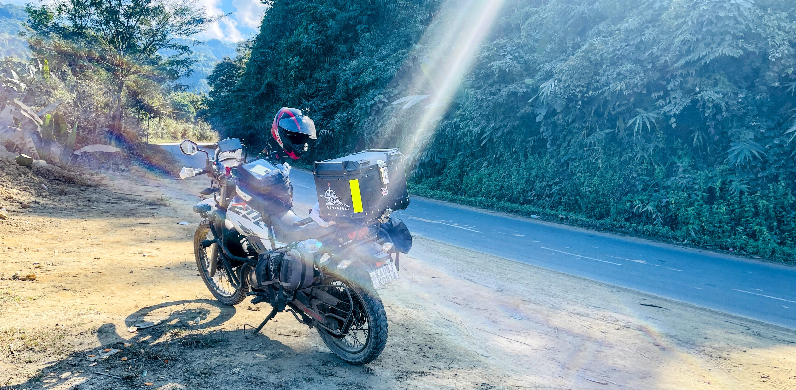<p>After continuing further, I entered Mizoram.</p><p>The change was immediate — cleaner roads, greener hills, and a peaceful atmosphere.</p><p>The final stretch toward Aizawl felt smooth, almost luxurious compared to what I had just crossed.</p><p>I slowed down often, simply enjoying the views.</p><h4 class="font-bold text-xl mt-6 mb-2">Arrival in Aizawl</h4><p>Around 12:30 PM, I reached Aizawl.</p>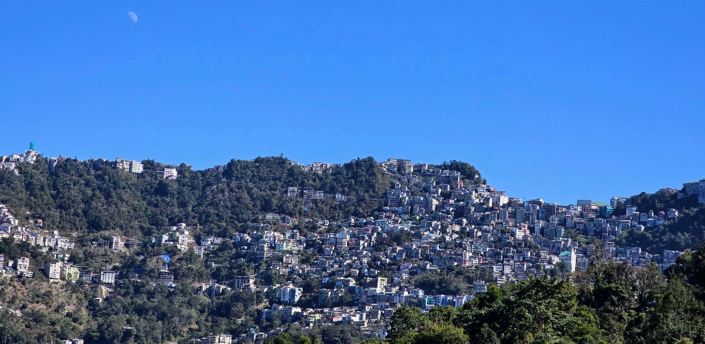<p>The city felt quiet and different. It was Sunday, and because of Christmas holidays, almost everything was closed.</p><p>The stay I had booked was on an upper floor, and the staff were not very helpful. I had to carry my luggage upstairs myself.</p><p>Parking was another challenge. The owner suggested roadside parking, but I wasn’t comfortable leaving my bike like that in a new city.</p><p>Finally, I found a nearby parking space and paid extra to keep it safe.</p><p>For the next three days, that would be his resting place.</p><h4 class="font-bold text-xl mt-6 mb-2">A New Connection</h4><p>Inside, I met a traveller from Africa. We started talking and quickly became comfortable.</p><p>Since most restaurants were closed, I ordered pizza. A simple meal, but sharing it made it better.</p><p>Later, we stepped out and went to a viewpoint.</p><p>The sunset over Aizawl was breathtaking — houses glowing across the hills like scattered stars.</p>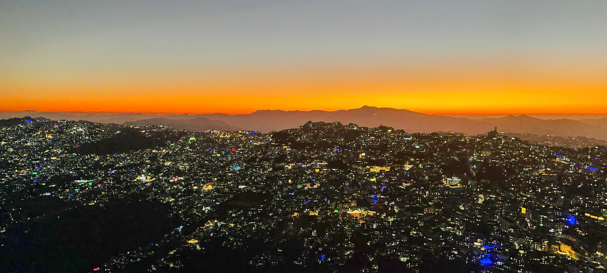<p>For a moment, all the exhaustion disappeared.</p><p>We walked, talked, and returned around 9:30 PM.</p><p>I washed my dust-covered clothes and hung them outside.</p><p>Before sleeping, we spoke for a long time.</p><h4 class="font-bold text-xl mt-6 mb-2">The Meaning of Adventure</h4><p>That day had started with peace… and turned into one of the most intense rides of my journey.</p><p>As I lay down, one thought stayed with me:</p><p>Adventure is not comfort.</p><p>It is uncertainty.<br>It is instinct.<br>It is trust.</p><p>And when you keep moving forward… the road always rewards you.</p>', quote: '"Adventure isn’t always comfortable. Sometimes it is uncertainty. Sometimes it is fear."' },
        { type: 'chapter', id: 'ch24', title: 'A Quiet Day in Aizawl', chapter: 'Ch  24', stats: 'Stillness', image: 'videos/chapter-24.mp4', desc: '<h4 class="font-bold text-xl mt-6 mb-2">A Calm Beginning</h4><p>After the intense ride through the mountains the previous day, Day 24 felt calm from the moment I woke up.</p><p>I woke up early, as usual. The room was quiet, and the view from my stay was beautiful. When I stepped outside, the hills of Aizawl were still wrapped in early morning light. I stood there for a few minutes, watching the sunrise slowly appear between layers of houses and hills.</p><p>There was no hurry that morning. For the first time in many days, I had no plan.</p><h4 class="font-bold text-xl mt-6 mb-2">Morning at Bara Bazaar</h4><p>After taking a bath, I decided to walk toward Bara Bazaar, one of the most famous local markets in Aizawl. It was just a short distance from my stay.</p><p>What surprised me immediately was how early the city wakes up. By 5:30 or 6 AM, people were already active. Shops were opening, vendors were setting up their goods, and the streets were slowly coming alive.</p><p>I walked through the market lanes quietly, observing everything. The roadside food stalls smelled amazing, so I stopped for breakfast. The food was simple and incredibly affordable.</p><video src="videos/chapter-24_0.mp4" autoplay loop muted playsinline class="w-full h-64 sm:h-96 object-cover rounded-xl shadow-md my-8"></video><p>While exploring, I noticed many stalls selling second-hand clothes — something very common in the Northeast. The variety was surprising, and I picked up a couple of small things.</p><p>The atmosphere of the market felt lively, yet calm. People were friendly, polite, and curious.</p><p>By around 7:30 or 8 AM, I slowly made my way back to the stay.</p><h4 class="font-bold text-xl mt-6 mb-2">The City Without Chaos</h4><p>Later in the morning, I took my bike and rode to a nearby viewpoint.</p><p>The sky was cloudy, but the view was still breathtaking. Hills stretched endlessly in every direction, and houses seemed to grow naturally out of the slopes.</p><p>I parked my bike and walked to the viewpoint. Sitting there, listening to music and looking at the hills, I spent nearly half an hour doing nothing.</p>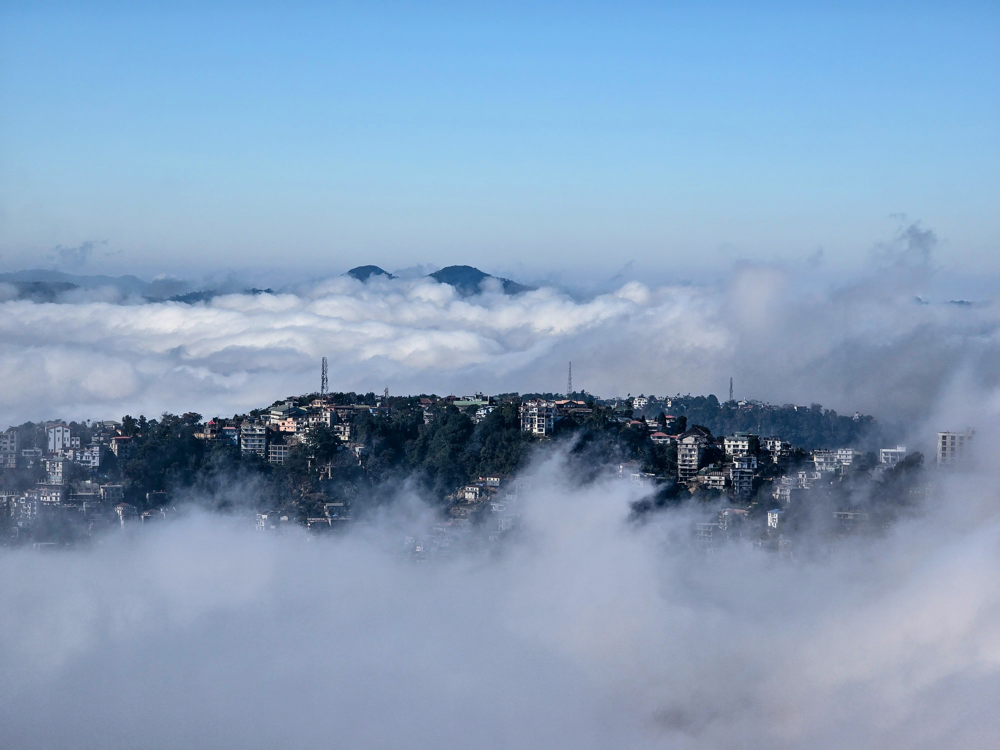<p>Sometimes travel is not about moving. Sometimes, it is about sitting still and absorbing where you are.</p><p>After that, I continued exploring the city. I visited the Solomon Temple, one of the well-known churches in Aizawl. Its architecture stood tall and peaceful against the hills.</p>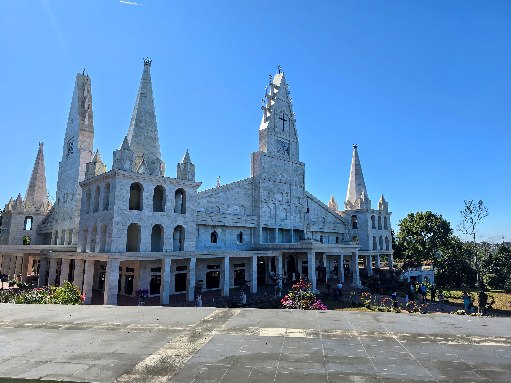<p>I also visited a small museum and wandered through different parts of the city.</p><p>One thing stood out clearly — the discipline on the roads. There was almost no chaos. Even when the roads were empty, people still followed traffic rules.</p><p>No unnecessary honking. No reckless driving.</p><p>It reflected the mindset of the people.</p><h4 class="font-bold text-xl mt-6 mb-2">A Conversation in the Hills</h4><p>After spending most of the morning exploring, I returned to my stay. Later, I stepped out again to another viewpoint.</p>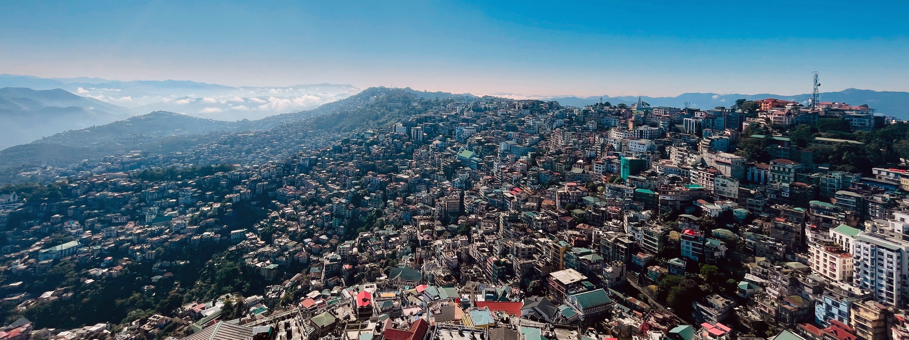<p>While I was standing there, a man approached me and started a conversation. He was from Nepal.</p><p>Within minutes, we were talking about travel, life, and work. Interestingly, he told me he was living in Bangalore.</p><p>Just like that, we became friends.</p><p>Travel has a strange magic — strangers become familiar within minutes.</p><p>We exchanged numbers and promised to meet again someday.</p><h4 class="font-bold text-xl mt-6 mb-2">Work, Sunset, and Slow Evenings</h4><p>Around 1:30 PM, I returned to my stay and started working. By now, balancing travel and work had become part of my routine. I continued until around 4:30 PM.</p><p>In the evening, I had a simple plan — to watch the sunset again from the same viewpoint restaurant I had visited the previous day.</p><p>So I rode toward Aizawl Restaurant, known for its beautiful city views.</p><p>The sunset was just as stunning. The sun slowly dipped behind the mountains, and the city lights began to glow across the hills.</p>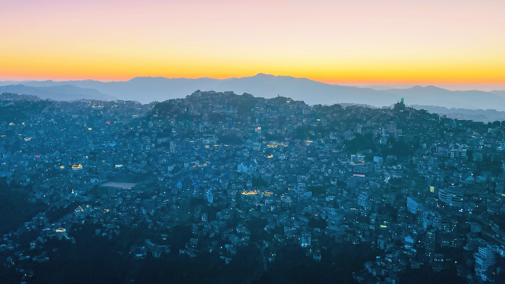<p>I sat there quietly for a while before heading back around 6:30 PM.</p><p>Back at the stay, I completed some remaining work. A new traveller had checked in, and we soon started talking. Before long, we decided to step out for dinner together.</p><p>We walked toward Bara Bazaar again. The streets were calm, and we had simple food — samosas and local snacks.</p><p>Nothing elaborate. But the conversation and the peaceful night made it memorable.</p><h4 class="font-bold text-xl mt-6 mb-2">A Simple, Meaningful Day</h4><p>After returning to the stay, we planned for the next day. The plan was exciting — an early morning ride to Reiek Village and a sunrise point.</p><p>With that in mind, we went to sleep.</p><p>Day 24 had been simple. No long rides. No major adventure. Just a quiet city, beautiful views, and meaningful conversations.</p><p>And sometimes, those are the days that help you understand a place the most.</p>', quote: '"Sometimes travel is not about moving. Sometimes it is about sitting still and absorbing where you are."' },
        { type: 'chapter', id: 'ch25', title: 'Sunrise at Reiek and the Day of Small Tests', chapter: 'Ch  25', stats: 'Preparedness', image: 'images/chapter-25.jpg', desc: '<h4 class="font-bold text-xl mt-6 mb-2">An Unusually Early Start</h4><p>The day began unusually early. I woke up at 2:30 AM.</p><p>The plan was to reach Reiek Village and Reiek Peak before sunrise. The traveller I had met the previous day — from Prayagraj, Uttar Pradesh — had agreed to join me.</p><p>By 3 AM, we walked down to the parking area. I unlocked my bike and did my usual checks before starting the ride.</p><p>That’s when I realised something unexpected — I had forgotten to refuel.</p><p>Since I had stayed in Aizawl for two days without riding much, it had slipped my mind. The ride ahead was around 35–40 kilometres, with steep and winding roads.</p><p>Still, I decided to go ahead. I hoped we might find a petrol pump on the way. If not, we would handle it somehow.</p><p>So we started the ride.</p><h4 class="font-bold text-xl mt-6 mb-2">When the Map Fails</h4><p>I mounted my phone and started navigation. But after 4–5 kilometres, something felt wrong.</p><p>Google Maps led us into a very narrow road — a steep downhill path filled with loose stones. Riding there was already difficult, but after a few more kilometres, it became clear that this wasn’t even a proper road.</p><p>It was just a trail through bushes.<br>No houses. No lights. No network.</p><p>We stopped.</p><p>The other traveller looked at me and said, “Maybe we should go back.”</p><p>He was right.</p><p>We carefully turned around and returned to the main road. Around 3:30 AM, we asked a local person for directions, and he pointed us toward the correct route.</p><p>That moment reminded me of something important — in the Northeast, sometimes people are more reliable than maps.</p><h4 class="font-bold text-xl mt-6 mb-2">Climbing Toward Reiek</h4><p>The road to Reiek was steep and narrow. Riding double on those sharp climbs wasn’t easy, and the engine started heating up.</p><p>By around 4:45 AM, we reached the base parking area. From there, the peak was still about 6 kilometres away.</p><p>Usually, people take a taxi to the trekking point and then walk the remaining distance. Finding a vehicle at that hour wasn’t easy, but luckily one driver agreed to take us along with a few others.</p><p>From the drop point, we began walking.</p><h4 class="font-bold text-xl mt-6 mb-2">Chasing the Sunrise</h4><p>We had some biscuits and continued the trek.</p><p>By around 5:20–5:30 AM, we reached the peak. The air was cold and fresh, and the view was breathtaking — endless layers of hills stretching across Mizoram.</p><p>At 5:45 AM, the sun slowly rose above the mountains. The sky turned golden, and the clouds beneath the hills began to glow.</p>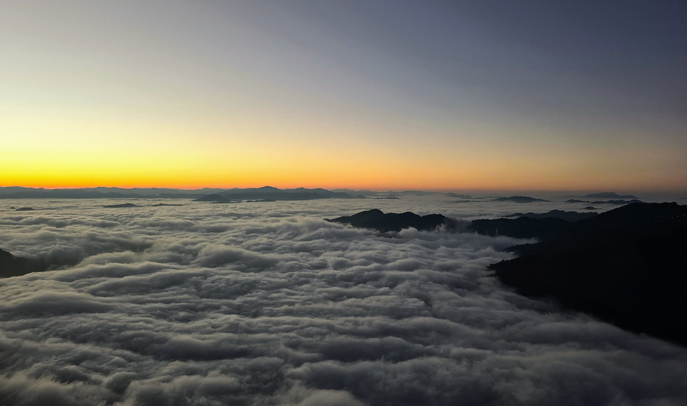<p>It was one of those rare moments where everyone falls silent. No words — just the wind and the quiet presence of nature.</p><p>We spent nearly an hour there, taking photographs and exploring nearby viewpoints.</p><p>Standing there, I felt grateful for the effort it took to reach that moment.</p>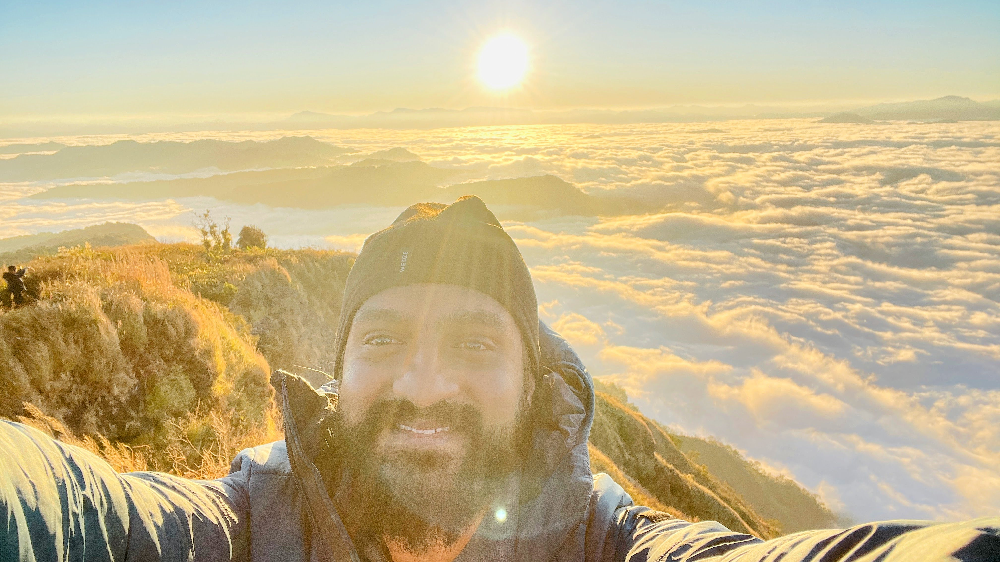<p>Some experiences only exist for those who wake up early enough to chase them.</p>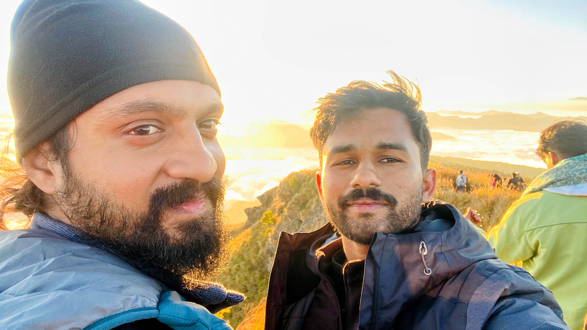<h4 class="font-bold text-xl mt-6 mb-2">Fuel and a Small Detour</h4><p>Getting a vehicle back wasn’t easy either, as most jeeps had already left. Eventually, we paid a bit extra and found a ride back to the base.</p><p>We had tea and aloo paratha for breakfast.</p><p>Then reality returned — my bike still had very little fuel.</p><p>There were no petrol pumps nearby, but thankfully, a local person helped us arrange petrol in a plastic bottle. We bought around ₹200 worth, filled the tank, and finally felt relieved.</p><p>After that, we visited a nearby waterfall and spent some peaceful time there.</p><video src="videos/chapter-25_0.mp4" autoplay loop muted playsinline class="w-full h-64 sm:h-96 object-cover rounded-xl shadow-md my-8"></video><h4 class="font-bold text-xl mt-6 mb-2">A Mechanical Concern</h4><p>But another issue appeared. Due to the steep climbs and engine heat, I noticed a slight oil leak.</p><p>I suspected it might be an oil seal or gasket issue.</p><p>Back in Aizawl, I searched for a service centre, but most workshops were closed due to the holiday season. Some places required appointments days in advance, which wasn’t possible for me.</p><p>So I called a mechanic I know from Nanjangud and sent him pictures.</p><p>He reassured me.</p><p>“You can ride another 200–300 kilometres safely. Just top up the oil and replace the seal when possible.”</p><p>That gave me relief.</p><p>I topped up around 200 ml of engine oil and returned to my stay.</p><h4 class="font-bold text-xl mt-6 mb-2">Evening Connections</h4><p>By around 2 PM, I resumed my routine and worked for a few hours.</p><p>In the evening, I rode again to the viewpoint restaurant to watch the sunset.</p><p>While returning, two riders approached me after noticing my number plate. They were from Tamil Nadu.</p><p>Within minutes, we realised we were on similar journeys across the Northeast.</p><p>We spoke for nearly 30 minutes, sharing experiences, routes, and stories.</p><p>Meeting fellow riders on the road always feels special.</p><p>Eventually, we said goodbye. I had dinner and returned to my stay.</p><h4 class="font-bold text-xl mt-6 mb-2">Preparing to Move Again</h4><p>Since I was leaving early the next morning, I packed everything that night. The traveller staying with me helped organise the luggage.</p><p>We kept everything ready near the door to make the morning easier.</p><p>After a long day that had started at 2:30 AM, I finally lay down around 9:30 PM.</p><p>The next morning would bring another long ride.</p><p>And the road, as always, was waiting.</p>', quote: '"Some moments can only be experienced if you chase them."' },
        { type: 'chapter', id: 'ch26', title: 'The Day a Stranger Changed My Route', chapter: 'Ch  26', stats: 'Guidance', image: 'images/chapter-26.jpg', desc: '<h4 class="font-bold text-xl mt-6 mb-2">A Ride That Looked Easy</h4><p>I woke up early that morning. The plan for the day was simple — ride from Aizawl to Silchar, around 260 kilometres.</p><p>It looked manageable. But the estimated time was nearly seven hours, which meant one thing — the road would not be easy.</p><p>After checking my bike once again, I said goodbye to the traveller who had shared the room with me. We wished each other safe journeys, and I started riding.</p><p>The morning air in Mizoram was fresh and cool, and the road twisted beautifully through the hills.</p><p>At one point, I saw a soft sunrise glowing through the fog. I stopped for a few minutes, just to watch it.</p>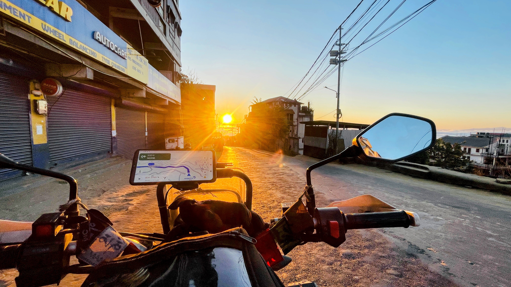<p>Moments like that make long journeys worth it.</p>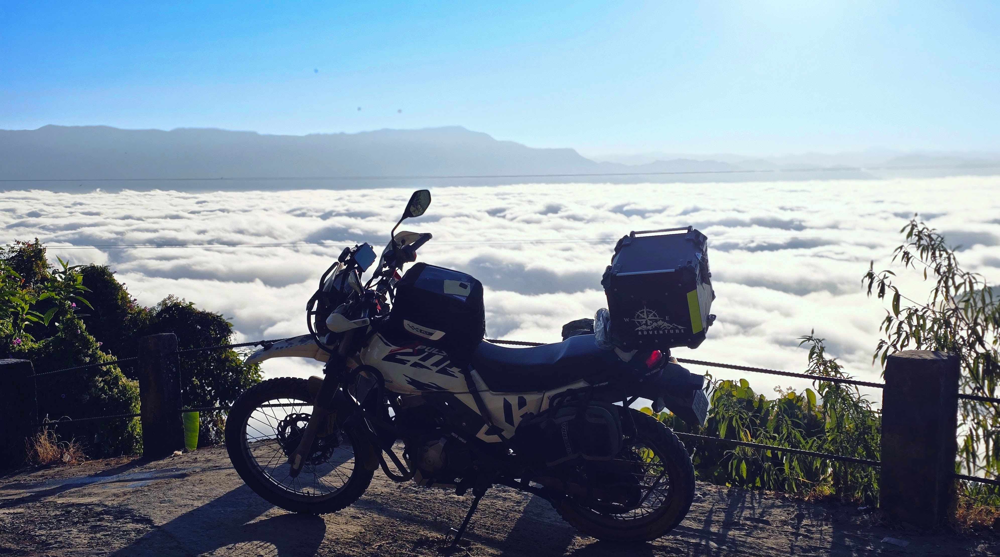<h4 class="font-bold text-xl mt-6 mb-2">Kindness at the Border</h4><p>By around 8 AM, I reached the Mizoram–Assam border. There was a small tea stall there, so I stopped for a break. The engine had heated slightly during the descent.</p><p>The stall was run by a young girl and her family. They spoke kindly and shared information about the road ahead.</p><p>I had biscuits and tea.</p><p>When I asked for the bill, they refused.</p><p>“You are travelling alone. It’s okay,” they said.</p><p>That moment stayed with me.</p><h4 class="font-bold text-xl mt-6 mb-2">The Forest Road</h4><p>From there, I had two route options, both similar in time. A local suggested a forest route, and I trusted him.</p><p>Soon, I realised what that meant.</p><p>The road was rough — dust, loose stones, and broken surfaces. At many places, I could only ride at 10–20 km/h.</p><p>There was no network, no shops, and almost no vehicles. The stretch felt completely isolated.</p><p>For nearly 50 kilometres, the road remained like that. That section alone took almost two hours.</p><p>The engine heated multiple times. I had to stop, rest, and then continue.</p><p>At one point, I simply sat by the roadside with biscuits in my hand, catching my breath.</p><h4 class="font-bold text-xl mt-6 mb-2">A Place That Felt Like Home</h4><p>Finally, around 12:30 PM, I reached near Silchar and went directly to my pre-booked stay.</p><p>The place was surprisingly beautiful and comfortable. The owner welcomed me warmly and immediately showed me a safe place to park my bike.</p><p>After parking, the first thing he asked was, “Did you eat?”</p><p>I said no.</p><p>Without hesitation, he went inside and prepared food for me himself — hot chicken and rice.</p><p>He didn’t treat me like a customer. He treated me like someone who had just come home after a long journey.</p><p>That kind of care is rare.</p><p>After freshening up, I sat down to eat. Every bite felt like relief.</p><p>Later, we spoke for a long time. He asked about my journey, encouraged me, and shared his own experiences.</p><p>Other travellers staying there joined us, and the conversations naturally flowed — about travel, life, struggles, and choices.</p><p>That place didn’t feel like a stay. It felt like a space filled with good people.</p>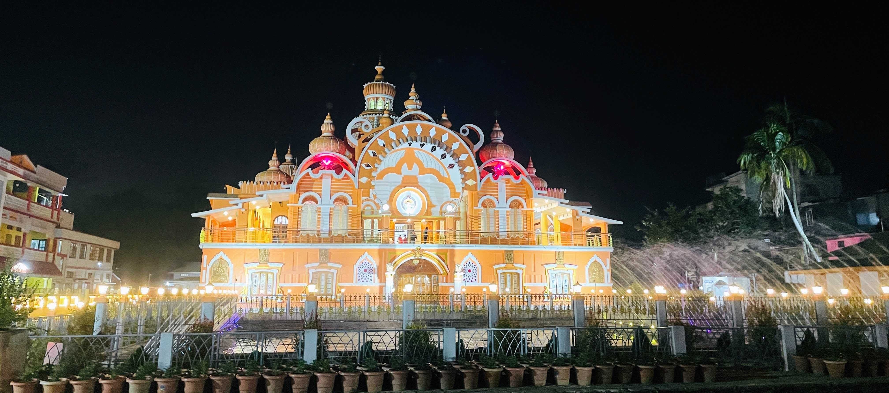<h4 class="font-bold text-xl mt-6 mb-2">Learning to Carry Less</h4><p>Later in the afternoon, I went for a short walk.</p><p>And somewhere during that walk, I realised something important.</p><p>The more I travel, the less I need.</p><p>When I started the journey, I carried many things — extra clothes, extra items, things I thought I might need.</p><p>But slowly, the road taught me something simple:</p><p>Life becomes easier when you carry less.</p><p>Less weight.<br>Less clutter.<br>Less dependency.</p><p>That thought stayed with me.</p><p>Later that evening, I sent some unnecessary items back home. I didn’t need them anymore.</p><p>Travel had simplified me.</p><h4 class="font-bold text-xl mt-6 mb-2">A Decision That Changed the Route</h4><p>In the evening, I sat again with the travellers and shared my plan for the next day — riding to Imphal.</p><p>On the map, it looked easy. Around 200 kilometres.</p><p>But one traveller stopped me and explained the reality.</p><p>The journey could take 11–14 hours.<br>No petrol pumps.<br>No food.<br>No proper villages.</p><p>Some sections weren’t even proper roads.</p><p>The more he explained, the more serious it felt. Some parts were honestly frightening.</p><p>In that moment, I realised something clearly:</p><p>If I had taken that road blindly, I could have faced serious trouble.</p><p>I felt grateful.</p><p>Those people were not just travellers. They were guidance sent by the road.</p><p>So I made a decision.</p><p>I changed my plan.</p><p>Instead of heading to Manipur, I would ride toward Nagaland — Kohima.</p><p>Longer.<br>But safer.</p><p>Sometimes changing plans is not weakness.<br>It is wisdom.</p><h4 class="font-bold text-xl mt-6 mb-2">A Quiet Ending</h4><p>Later that night, one of the travellers picked up a guitar and started singing.</p><p>The atmosphere became calm and peaceful.</p><p>After such a long and difficult day, that moment felt like a pause.</p><p>I stepped outside, checked my bike again, lubricated the chain, and packed everything for the next morning.</p><p>I thanked everyone there.</p><p>And as I lay down to sleep, one thought stayed with me:</p><p>Sometimes the road protects you… through the people you meet.</p><p>And that night in Silchar was one of those moments.</p>', quote: '"Sometimes changing plans is not weakness. It is wisdom."' },
        { type: 'chapter', id: 'ch27', title: 'A New Year on the Road', chapter: 'Ch  27', stats: 'Endurance', image: 'images/chapter-27.jpg', desc: '<h4 class="font-bold text-xl mt-6 mb-2">The First Ride of the Year</h4><p>It was the first day of the year.<br>1 January 2026.</p><p>I woke up early, around 4:30 AM in Silchar.<br>The air was cold. Silent.</p><p>I freshened up, wore my riding gear, and carried my luggage downstairs.</p><p>The previous night, I had already informed the stay owner about my early departure.<br>When I called him, he came down within minutes and opened the gate.</p><p>Before leaving, I thanked him again.<br>For the food. For the care. For the unexpected kindness.</p><p>We exchanged a warm goodbye.<br>I gave him a hug.</p><p>Then I started the bike.<br>And the road called again.</p><h4 class="font-bold text-xl mt-6 mb-2">Riding into the Unknown</h4><p>The morning was covered in dense fog.<br>Visibility was low.</p><p>The cold wind cut through my riding gear.<br>I rode slowly — around 40–50 km/h.</p><video src="videos/chapter-27_0.mp4" autoplay loop muted playsinline class="w-full h-64 sm:h-96 object-cover rounded-xl shadow-md my-8"></video><p>The road, at first, was decent.</p><p>Around 6 AM, I stopped at a small tea stall.<br>Hot tea in that cold fog felt perfect.</p><p>A small pause.<br>Then I continued.</p><h4 class="font-bold text-xl mt-6 mb-2">When the Road Turns Harsh</h4><p>Soon, everything changed.</p><p>The smooth road disappeared.<br>What followed was one of the worst stretches I had encountered.</p><p>Heavy trucks passed constantly.<br>The road was filled with thick dust — almost two feet deep in places.</p><p>Every time a truck crossed, a cloud of dust swallowed everything.</p><p>Within seconds, my visor became useless.<br>I had to stop repeatedly…<br>Clean it…<br>Ride again.</p><p>Dust entered everywhere.<br>Jacket.<br>Gloves.<br>Helmet.</p><p>But through all of it… the bike kept moving.</p><p>No complaints.<br>No hesitation.</p><p>Just steady effort.</p><p>Every bump.<br>Every rocky stretch.<br>Every uneven climb.</p><p>He carried me forward — like a silent companion.</p><p>At one point, I stopped to clean my helmet… and accidentally dropped it.<br>It cracked slightly.</p><p>Later, it slipped again.<br>The damage worsened.</p><p>There were no shops.<br>No solutions.</p><p>Only acceptance.</p><p>And the ride continued.</p><h4 class="font-bold text-xl mt-6 mb-2">A Pause by the Water</h4><p>After hours of slow riding, around 12:30 PM, I reached a small stretch where water flowed beside the road.</p><p>I stopped.</p><p>Had lunch.<br>Sat quietly.</p><p>A few locals nearby spoke to me.<br>Asked about the journey.<br>Shared road updates.</p><p>That break didn’t just rest my body.<br>It reset my mind.</p><h4 class="font-bold text-xl mt-6 mb-2">Crossing into Nagaland</h4><p>Around 1:30 PM, I reached the Nagaland checkpost.</p><p>I stopped to ask about the Inner Line Permit.</p><p>The officers were kind.<br>Polite.</p><p>After hearing about my journey, they smiled and said:</p><p>“No need to take it now. Just tell them you are exploring Nagaland.”</p><p>That simple gesture saved time.<br>And gave confidence.</p><p>I thanked them.<br>And continued.</p><h4 class="font-bold text-xl mt-6 mb-2">The Final Stretch</h4><p>A little ahead, I met another traveller.<br>We spoke briefly.<br>Took a few photos.</p><p>Then I continued toward Kohima.</p><p>The last 70 kilometres felt different.<br>The roads improved.<br>The hills opened up.</p><p>After the dust and struggle…<br>this stretch felt like relief.</p><p>By around 3:30–4 PM, I reached Kohima.</p><h4 class="font-bold text-xl mt-6 mb-2">Familiar Voices in a Distant Place</h4><p>I checked into my hostel.</p><p>And then something unexpected happened.</p><p>I heard Kannada.</p><p>After nearly 26 days of travelling, hearing my own language felt grounding.</p><p>They were from Karnataka.</p><p>Within minutes, we connected.</p><p>Far from home…<br>It felt like meeting family.</p><h4 class="font-bold text-xl mt-6 mb-2">A Quiet New Year Night</h4><p>It was New Year’s Day.<br>But the city was quiet.</p><p>Most places were closed.</p><p>Finding food became a small journey in itself.</p><p>First, tea and samosas.<br>Then a search.</p><p>Finally, one restaurant owner opened his kitchen just for us.<br>Prepared food.<br>Served with kindness.</p><p>That gesture meant more than the meal.</p><p>After dinner, we returned to the hostel.<br>Sat together.<br>Talked about roads, travel, life.</p><p>Around 9:30 PM, exhaustion caught up with me.</p><p>It had been a long day.<br>Fog.<br>Dust.<br>Broken roads.<br>Uncertainty.</p><p>But also… progress.</p><p>Another state.<br>Another story.<br>Another lesson.</p><p>Outside, my bike stood quietly.<br>Dust-covered.<br>Tired.<br>But ready.</p><p>And so was I.</p>', quote: '"The road doesn’t test your strength… it reveals how far your endurance can go."' },
        { type: 'chapter', id: 'ch28', title: 'Trust, Culture, and Quiet Roads', chapter: 'Ch  28', stats: 'Perspective', image: 'images/chapter-28.jpg', desc: '<h4 class="font-bold text-xl mt-6 mb-2">A Slower Morning</h4><p>After many days of waking up at 4:30 AM, Day 28 felt different.<br>That morning I woke up a little late, around 6:30 AM.</p><p>From my hostel window I could see the hills of Kohima slowly waking up. The sky was clear, and the sunrise was beautiful, spreading soft light across the valley.</p><p>I stood there quietly for a few minutes, just watching the morning unfold.</p><p>By that time, my new friends Spoorti and Shiva had already left. They had been staying there for almost five days and had an early flight to catch, so they had left the hostel around 3:30 AM.</p><p>The hostel felt a little empty after they left.<br>After getting ready, I decided to go out and explore the city.</p><h4 class="font-bold text-xl mt-6 mb-2">The Local Market</h4><p>My first stop was the local market in Kohima.<br>It was unlike any market I had seen before.</p><p>There were small stalls selling things I had never seen in other markets — different kinds of vegetables, fruits, and even animals that are traditionally consumed in the region.</p><p>For someone coming from the south of India, it felt completely different.<br>The market showed how unique Naga culture and food habits are.</p><p>I spent some time walking through the lanes, observing people and taking photographs.</p><h4 class="font-bold text-xl mt-6 mb-2">An Unpleasant Encounter</h4><p>Later I rode toward a nearby village area.<br>While taking some pictures, a man suddenly approached me.</p><p>He looked drunk and was very rude. He began questioning me aggressively — asking why I was taking pictures and demanding money.<br>He even tried to touch my camera and my bag.</p><p>For a moment I felt uncomfortable and slightly scared.<br>I tried to stay calm, spoke politely, and slowly moved away from the situation.</p><p>Finally I managed to leave that place.<br>The incident left me feeling a little disturbed.</p><p>But after going further, I met a local girl who explained something important.<br>She told me that some outsiders had misused photographs and videos of villages by posting them online without permission, bringing unnecessary crowds and disturbance.</p><p>Because of that, a few locals had become sensitive about cameras.<br>Her explanation helped me understand the situation better.</p><p>Sometimes travel teaches you to see beyond a single moment.</p><h4 class="font-bold text-xl mt-6 mb-2">A Shop Built on Trust</h4><p>Soon after, I saw something that completely changed my mood.<br>I found a small self-service shop by the roadside.</p><p>There was no shopkeeper.<br>Just shelves with items — snacks, drinks, and small goods.<br>A board explained the system:<br>You simply take what you need and pay through UPI or leave cash in the box.</p><p>The entire shop functioned purely on trust.<br>Standing there, I felt amazed.</p><p>In a world where people worry about theft and security, here was a place where an entire shop was built on honesty.<br>That moment reminded me of something simple:<br>Trust creates trust.</p><p>If we respect people, their culture, and their way of life, we usually receive the same respect in return.</p><h4 class="font-bold text-xl mt-6 mb-2">The Clean Villages of Nagaland</h4><p>From there I rode toward Khonoma Village and the Naga Heritage Village.<br>The villages in Nagaland surprised me.</p><p>They did not feel like ordinary villages.<br>They were incredibly clean and well maintained.</p><p>Everywhere I looked there were bamboo dustbins instead of plastic.<br>The roads were spotless.<br>There was almost no noise, no unnecessary traffic, no litter.<br>It felt peaceful.</p><p>While exploring the Naga Heritage Village, I met a couple who kindly helped me take some photographs. They also explained the importance of the place and told me about the Hornbill Festival.</p><p>Before leaving, I also met a few students who were curious about my ride. When they heard about the distance I had travelled, they seemed inspired and encouraged me warmly.</p><p>Moments like these make solo travel special.</p><h4 class="font-bold text-xl mt-6 mb-2">Taking Care of My Companion</h4><p>By around 3:30 PM, I returned to Kohima.<br>Before going back to the hostel, I stopped at a shop to buy a few locks and fittings for my bike.</p><p>After all the kilometres we had travelled together, I felt responsible for taking care of it.<br>That bike had carried me across mountains, dust, broken roads, and long distances.<br>Protecting it felt important.</p><h4 class="font-bold text-xl mt-6 mb-2">A Cold Evening in Kohima</h4><p>Back at the hostel, the place felt unusually quiet.<br>Most travellers had left after the holidays.</p><p>By evening, the temperature dropped to around 5–6 degrees.<br>In Kohima, most restaurants close early.</p><p>Remembering the struggle for food the previous night, I ordered dinner early.<br>Around 7 PM, I sat outside the hostel with my food.</p><p>The air was extremely cold.<br>But the silence felt peaceful.</p><p>After dinner, I went for a short walk — bought medicine, water, and a few essentials.</p><p>And somewhere in that quiet evening… a new plan began to form.<br>Dzukou Valley.</p><p>Before sleeping, I spoke with the hostel owner and gathered details about the trek.</p><p>Around 8:30 PM, I returned to the hostel.<br>The hills were still.<br>The night was silent.</p><p>And outside, my bike rested quietly.</p><p>Tomorrow would not be about riding.<br>It would be about something else entirely.</p>', quote: '"The road taught me something simple that day… respect the place, and it will reveal itself to you."' },
        { type: 'chapter', id: 'ch29', title: 'The Valley That Tested Me', chapter: 'Ch  29', stats: 'Courage', image: 'images/chapter-29.jpg', desc: '<p>That morning I woke up around 6 or 6:30 AM in Kohima.<br>It was Saturday, and the morning felt slow and peaceful.</p><p>But one thought kept returning again and again.<br>Dzukou Valley.</p><p>I had come all the way to Nagaland, and Dzukou Valley is known as one of the most beautiful valleys in Northeast India. Yet I hesitated.</p><p>The trek was long — almost 30+ kilometres round trip — and I would be doing it solo in extremely cold conditions.</p><p>For a moment I wondered if I should skip it.<br>I stepped outside the hostel for a short walk, just ten minutes to clear my mind.</p><p>When I returned, the answer had already formed inside me.<br>If I came this far, I cannot miss this.</p><p>A guy in the hostel had initially said he would join me.<br>But after making me wait almost an hour, he finally told me he wasn’t feeling well and wouldn’t be coming.</p><p>For a moment I thought about cancelling the trek.<br>But something inside pushed me forward.</p><p>Instead of taking my bike to the trailhead at Viswema village, I decided to go by shared taxis.</p><p>So I took a small taxi for ₹20 to the bus stand and then another shared taxi to Viswema for ₹90.</p><video src="videos/chapter-29_0.mp4" autoplay loop muted playsinline class="w-full h-64 sm:h-96 object-cover rounded-xl shadow-md my-8"></video><p>While travelling in the shared taxi, I met a beautiful group of travellers.<br>They were happy listening to my solo journey and they wished me well.</p><p>I reached around 10 AM, had breakfast, and bought some snacks and water for the trek.</p><p>Since I had done a few treks in Karnataka, I knew carrying more load is not a good idea.<br>So I carried only a 10-litre bag.<br>Inside it — snacks, my camera stick, and a power bank.<br>Nothing much.</p><p>From Viswema, taxis usually charge ₹1500–₹2500 to reach the trekking base.<br>Since I was alone, I decided to wait.</p><p>After about 20–30 minutes, a group of travellers from Assam arrived.<br>I asked if I could join them.<br>They welcomed me immediately.</p><video src="videos/chapter-29_1.mp4" autoplay loop muted playsinline class="w-full h-64 sm:h-96 object-cover rounded-xl shadow-md my-8"></video><p>Trust me, those guys were very kind.<br>They joined me, listened to my story, and were happy about my journey.</p><p>Within ₹250, I reached the trekking base.</p><p>The trek began from the checkpost.<br>After paying the entry fee, I started walking into the forest.</p><p>Soon I met Joseph, a local guide who had been hired by a trekker from Kerala.<br>We started talking, and the conversation flowed easily.</p><p>Even though I had come alone, I never felt alone.<br>Everyone slowly became part of the journey.</p><p>As I walked deeper, something changed inside me.</p><p>I felt light.<br>I don’t know how to express it, but I was happy.</p><p>No baggage of the past.<br>No load of the future.</p><p>I was just living in the present moment.<br>Enjoying life fully.</p><p>Since I was all alone, I captured my photos myself.<br>I did some funny clicks, tried different poses, and enjoyed doing it alone.</p><p>The path moved through thick forests and open ridges.<br>Walking alone felt peaceful.</p><video src="videos/chapter-29_2.mp4" autoplay loop muted playsinline class="w-full h-64 sm:h-96 object-cover rounded-xl shadow-md my-8"></video><p>By afternoon I reached the Dzukou base camp.</p><p>The tents were charging around ₹1000 per person.<br>After speaking to others, I managed to stay for ₹200 by sharing.</p><p>Before evening I walked to the sunset viewpoint.<br>The sky slowly turned orange as the sun disappeared behind the hills.</p><p>The view was breathtaking.</p><p>I kept my bag aside and went ahead to enjoy the sunset.<br>When I returned, rats had eaten all my snacks.</p><p>For a moment I laughed.<br>Even the valley had joined my journey.</p><p>After sunset, I returned.</p><p>A guide I met on the way shared food with me.<br>I also had what I had carried from home.</p><p>See how beautiful life is — when you come alone, people join you.<br>They help you.<br>They guide you.</p><p>By 5:30 PM, darkness arrived quickly.<br>The temperature dropped to around –4°C.</p><p>A bonfire was lit.<br>People gathered.</p><p>People from different states sat together — Mumbai, Delhi, Assam, Kerala, Uttarakhand.</p><p>I had arrived alone.<br>But I didn’t feel like a solo traveller anymore.</p><p>The cold was intense — almost unbearable.<br>Seeing my situation, Joseph and a trekker from Kerala understood immediately.<br>Without saying much, they shared a blanket with me.</p><p>Sleep was difficult.</p><p>One of my phones died due to cold.</p><p>But I kept thinking about the next morning.<br>The sunrise.<br>The valley.<br>The moments.</p><p>I slept only for short moments.<br>But I didn’t regret it.</p><p>Because some nights are not meant for sleep.<br>They are meant to become stories.</p><p>And that freezing night in Dzukou Valley was one of those stories.</p>', quote: '"The hardest journeys don’t test your body… they reveal your courage."' },
        { type: 'chapter', id: 'ch30', title: 'The Morning That Proved Everything', chapter: 'Ch  30', stats: 'Endurance', image: 'images/chapter-30.jpg', desc: '<p>The night before had been brutal.<br>The temperature had dropped to around –4°C, and sleep was almost impossible. Even with the blanket that the Kerala guy had shared with me, the cold kept waking me up again and again.</p><p>In total, I might have slept barely one hour.</p><p>By 4:30 AM, I gave up trying to sleep.<br>I stepped outside.<br>The cold hit instantly.</p><p>Without a mask, cap, and gloves, it was almost impossible to stand there. My breath turned into white mist, and the air felt sharp against my skin.</p><p>The water bottle I had kept beside me had become ice cold.<br>Somehow I drank a few sips.</p><p>At 5 AM, I started walking toward the main Dzukou Valley, which was still about 3 kilometres away from the base camp.</p><h4 class="font-bold text-xl mt-6 mb-2">Walking Into the Freezing Morning</h4><p>The trek was harder than I expected.<br>My body was already tired from the previous day’s trek, and with almost no sleep, walking again in freezing temperatures felt like another challenge.</p><p>Luckily, the Kerala traveller joined me.<br>Two other trekkers from Tripura also decided to walk with us.</p><video src="videos/chapter-30_0.mp4" autoplay loop muted playsinline class="w-full h-64 sm:h-96 object-cover rounded-xl shadow-md my-8"></video><p>We moved slowly through the dark trails toward the valley.<br>Our first stop was the emergency helipad point, where the valley slowly opened before us.</p><p>Even in the early light, the view was breathtaking.<br>Rolling hills stretched endlessly.<br>The valley looked peaceful and untouched.</p><h4 class="font-bold text-xl mt-6 mb-2">When the Cold Tested Me</h4><p>But the cold became stronger as we continued.<br>Within the first kilometre, my hands started going numb.<br>My face and beard were slowly filling with tiny crystals of ice.</p><p>For a moment, I almost stopped.<br>I told myself:<br>"Maybe this is enough."</p><p>But something inside refused to quit.<br>We continued walking.</p><p>Soon we reached a frozen river.<br>The entire stream had turned into ice.<br>It was around 6 AM.</p><p>I stood there for a few minutes, looking at the frozen landscape and clicking a few photos.</p><p>That moment brought a strange realization.<br>When I started this journey from Mysuru, I wasn’t even sure if I could complete it.<br>But now I was standing here, trekking in –4°C, deep inside a valley in Nagaland.</p><p>I smiled quietly.<br>Everything is possible with time and patience.</p><h4 class="font-bold text-xl mt-6 mb-2">The Final Push</h4><p>The two trekkers from Tripura decided to return from that point.<br>But I continued.</p><p>There were still another two kilometres to the main peak.<br>The cold was intense.<br>My fingers felt like they were losing their strength.<br>My beard had frozen.</p><video src="videos/chapter-30_1.mp4" autoplay loop muted playsinline class="w-full h-64 sm:h-96 object-cover rounded-xl shadow-md my-8"></video><p>The path was silent.<br>But step by step, slowly, I kept moving.</p><p>Sometimes courage is not loud.<br>Sometimes it is just taking the next step.</p><h4 class="font-bold text-xl mt-6 mb-2">The First One to Reach</h4><p>At around 7:15 AM, I finally reached the highest point of the valley.<br>And something unexpected happened.</p><p>I was the first person to reach there that morning.<br>For a few seconds, I simply stood there.<br>Breathing.<br>Looking at the valley below.</p><p>I couldn’t believe it.<br>One of my long-time dreams had quietly become real.<br>I had reached Dzukou Valley’s peak.</p><p>Not with a group.<br>Not with a guide.<br>But on my own strength.</p><video src="videos/chapter-30_2.mp4" autoplay loop muted playsinline class="w-full h-64 sm:h-96 object-cover rounded-xl shadow-md my-8"></video><p>It wasn’t easy.<br>It wasn’t comfortable.<br>But it was worth everything.</p><h4 class="font-bold text-xl mt-6 mb-2">Waiting for the Sun</h4><p>Even after reaching the peak, the sun had not risen yet.<br>The cold was still extreme.<br>I stood there waiting.</p><p>Slowly the sky began to glow.<br>After about 30 minutes, sunlight finally touched the valley.</p><p>The ice on the leaves began melting.<br>Tiny drops of water started falling from the frozen plants.<br>The valley slowly woke up.</p><p>That moment felt magical.</p><h4 class="font-bold text-xl mt-6 mb-2">The Walk Back</h4><video src="videos/chapter-30_3.mp4" autoplay loop muted playsinline class="w-full h-64 sm:h-96 object-cover rounded-xl shadow-md my-8"></video><p>After spending some quiet time at the top, I started walking back.<br>On the way down, I met a few trekkers who had stopped midway because of the cold.<br>We sat together for a while, shared some snacks, clicked photos, and spoke about the trek.</p><p>Then I continued walking back to the base camp.</p><p>While I started back, trust me — the valley was not ready to send me back.<br>I don’t know what connection I had with that place, but we were so connected and in sync.<br>It felt like a lifetime experience.</p><p>When I reached there, I had hot tea, eggs, and biscuits.<br>That simple meal felt like a luxury after the freezing morning.</p><p>By around 12 PM, I had reached the base camp.<br>After resting for a while, I had to start again — this time alone.<br>I started trekking solo toward the checkpost from where we get taxis.</p><h4 class="font-bold text-xl mt-6 mb-2">The Solo Descent</h4><p>Soon it was time to leave.<br>Some trekkers had already left early.<br>Others were still exploring the valley.</p><p>So I started the descent alone.<br>And strangely, I enjoyed it.</p><p>Walking down through the forests alone felt peaceful.<br>I took many breaks.<br>Captured photos.<br>Sat quietly in a few places.</p><p>Sometimes the best part of trekking is not the peak.<br>It is the journey back, when everything feels calm.</p><h4 class="font-bold text-xl mt-6 mb-2">The Unexpected Struggle</h4><p>By afternoon I reached the checkpost.<br>From there I reached Viswema village.</p><p>But now the real challenge began.<br>It was Sunday.</p><p>There were no taxis on the road.<br>I waited nearly two hours.<br>Nothing came.</p><p>In that situation, I didn’t panic.<br>I felt like this was also part of my experience.<br>The journey was still continuing.</p><p>Finally around 5 PM, I requested a local travel guide nearby.<br>He helped arrange a taxi to Kohima.</p><p>But it had to be a full hire, so I had to pay extra.<br>At that moment, it didn’t matter.<br>I just wanted to reach the hostel.</p><h4 class="font-bold text-xl mt-6 mb-2">A Quiet End to a Powerful Day</h4><p>I finally reached my hostel around 6 PM.<br>I took a hot bath.<br>Ordered food.<br>Had dinner quietly.</p><p>After speaking with the hostel owner for some time, I went to bed very early.<br>My body was exhausted.<br>But my mind was peaceful.</p><h4 class="font-bold text-xl mt-6 mb-2">What the Valley Gave Me</h4><p>I had started the trek alone.<br>But by the time I returned, I had spoken to almost everyone who came to the base camp.</p><p>Strangers had become friends.<br>Joseph, the Kerala guy, the Tripura trekkers, and many others had all become part of the story.</p><p>Even today, I am still in touch with the Kerala traveller who walked with me that morning.</p><h4 class="font-bold text-xl mt-6 mb-2">An Unforgettable Memory</h4><p>Every step of that trek created a memory.<br>Every moment in the cold valley taught me something.</p><p>Dzukou Valley was not just a destination.<br>It was a test of patience.<br>Of endurance.<br>Of belief.</p><p>And it gave me something I will carry for the rest of my life.<br>An unforgettable moment.</p>', quote: '“In the coldest morning, with almost nothing left… I discovered how far I can still go.”' },
        { type: 'chapter', id: 'ch31', title: 'A Quiet Day in Kohima', chapter: 'Ch  31', stats: 'Reset', image: 'images/chapter-31.jpg', desc: '<p>Rest, Friendship, and Preparation</p><p>After the intense experience of Dzukou Valley, Day 31 began gently.<br>I woke up around 6 AM and stepped outside the hostel.</p><p>The morning sky over Kohima was glowing softly.<br>The sun slowly rose over the hills, lighting the city in golden colours.<br>After the freezing night in Dzukou Valley and the long trek the previous day, standing there quietly and watching the sunrise felt peaceful.</p><p>Some mornings don’t need anything else.<br>Just silence and sunlight.</p><h4 class="font-bold text-xl mt-6 mb-2">Taking Care of Things That Matter</h4><p>That morning became a small reset day for me.<br>I washed all my clothes that had become dusty during the trek.</p><p>Then I spent time with my bike.<br>After so many difficult roads, dust, and mountain trails, it deserved some care.</p><p>I cleaned it thoroughly, checked everything carefully, and lubed the chain properly.<br>It felt satisfying to see it shining again.</p><p>My bike had carried me across thousands of kilometres.<br>Taking care of it was not a task.<br>It was respect.</p><p>By around 7:30 AM, everything was done.<br>I had taken a bath, freshened up, and felt ready for the day.</p><h4 class="font-bold text-xl mt-6 mb-2">Meeting Friends Again</h4><p>Later in the morning, a few travellers I had met earlier in the valley — guys from Arunachal Pradesh and Assam — called me.<br>We had crossed paths during the trek and connected well.</p><p>I stepped out and joined them for breakfast.<br>We spent some time together talking about the trek, travel stories, and future plans.</p><p>After breakfast, we took a small city walk around Kohima.</p><p>Sometimes travel friendships are short but meaningful.<br>Even a few hours together can create memories.</p><h4 class="font-bold text-xl mt-6 mb-2">Balancing Travel and Work</h4><p>By late morning, I returned to the hostel.<br>Like many other days of this journey, I had to balance travel and work.</p><p>So I opened my laptop and started working.<br>At the same time, I also began packing my luggage.</p><p>The next day I would leave for Manipur, another beautiful part of the Northeast.<br>Packing after so many days of travel had become easier.</p><p>I had learned something important during this journey:<br>The longer you travel,<br>the fewer things you realise you actually need.</p><h4 class="font-bold text-xl mt-6 mb-2">A Slow Afternoon</h4><p>Work that day was lighter than usual.<br>In the afternoon, I stepped out for a small walk and had lunch outside.<br>I also bought a few snacks for the next day’s ride.</p><p>Kohima had begun to feel familiar by then.<br>The streets, the people, the small cafés — everything felt comfortable.</p><h4 class="font-bold text-xl mt-6 mb-2">Preparing for the Road Again</h4><p>By around 6:30 PM, my work was finished.<br>I stepped out again, this time to refill my bike’s fuel tank.<br>Before entering remote regions, it’s always safer to carry a full tank.</p><p>After filling fuel, I had dinner outside and returned to the hostel around 7:30 PM.</p><h4 class="font-bold text-xl mt-6 mb-2">A Simple Goodbye Evening</h4><p>Since I was leaving the next day, the hostel staff and a few travellers spent some time talking with me.<br>In a short time, we had become comfortable with each other.</p><p>Travel often creates friendships quickly because everyone understands the same language — the road.</p><p>Later that night, I watched a movie and continued chatting with them.<br>Time passed quietly.<br>By around 11:30 PM, I finally went to sleep.</p><p>The next morning, the journey would begin again.<br>A new road.<br>A new state.<br>And another story waiting somewhere ahead.</p>', quote: '“Not every day on the road is about moving forward… some days are meant to rebuild you.”' },
        { type: 'chapter', id: 'ch32', title: 'Riding Into Uncertainty', chapter: 'Ch  32', stats: 'Perspective', image: 'images/chapter-32.jpg', desc: '<p>I woke up early that morning.<br>It was around 5 AM in Kohima.</p><p>Since I had already packed everything the previous night, the morning was simple. I just had to add a few small items — my tank bag and a few essentials.</p><p>By 5:30 AM, I started my bike and left the hostel.</p><p>That day’s destination was Imphal, the capital of Manipur.<br>The distance was only about 135 kilometres, but the expected travel time was nearly five hours. In the Northeast, distance often means very little — it is the road condition that decides how long the journey will take.</p><h4 class="font-bold text-xl mt-6 mb-2">The Road Changes</h4><p>The first part of the ride out of Kohima was smooth.<br>The cold morning air flowed through the hills, and the road was decent enough to ride comfortably.</p><p>But everything changed as I approached the Manipur border.<br>The road suddenly became extremely bad.</p><p>Dust covered the entire road. Trucks were moving slowly through thick clouds of dirt, and every few hundred metres my helmet visor would become completely muddy.<br>I had to stop frequently just to clean it.</p><p>Sometimes the dust was so thick that I could barely see ahead.</p><p>The road didn’t feel like a road anymore.<br>It felt like a test.<br>Every kilometre demanded patience.<br>Every stretch reminded me that this journey was not about comfort — it was about endurance.</p><h4 class="font-bold text-xl mt-6 mb-2">The Military Presence</h4><p>Soon another thing caught my attention.<br>Every hundred metres, there were military personnel standing on the roadside.</p><p>Military trucks.<br>Armed soldiers.<br>Security vehicles.</p><p>I had seen such scenes only in movies and news reports before.<br>But here it was real.</p><p>The atmosphere felt tense.<br>A strange feeling of uncertainty began to grow inside me.</p><p>Just two days earlier, someone had warned me about travelling through Manipur.<br>That memory returned to my mind.</p><p>For a moment I wondered:<br>Did I make a wrong decision coming this way?</p><p>The combination of terrible roads, heavy dust, and constant military presence made the ride feel uncomfortable.<br>But the only way forward was to keep riding.</p><p>At one point, I heard about a bomb blast incident that had happened earlier that day.<br>That thought stayed in my mind.<br>The road suddenly felt heavier.<br>Every sound felt louder.<br>Every movement around me felt more noticeable.</p><p>It was not fear exactly.<br>But it was awareness.<br>A deep sense that I was riding through a place that carried its own history, its own struggles, its own reality.</p><p>For almost 135 kilometres, there were hardly any facilities.<br>No restaurants.<br>No proper tea stalls.<br>No petrol pumps.<br>No repair shops.<br>Just broken roads, stones, dust, and military vehicles.</p><p>At one point I found a small place where I thought of stopping, but I decided to continue, hoping to find something better ahead.<br>But nothing appeared.</p><p>It was just road after road of rough terrain.</p><p>At times I even worried about my bike.<br>If the tyre punctured or the top box broke on those roads, I had no idea where I would find help.</p><p>But even in that uncertainty, I kept moving.<br>Because sometimes the road doesn’t give you options.<br>It only gives you direction.</p><h4 class="font-bold text-xl mt-6 mb-2">Finally Reaching Imphal</h4><p>Around 11 AM, after riding nearly 110 kilometres, the road slowly became better.<br>“Better” in the Northeast still means rough, but at least it was manageable.</p><p>Soon I reached Imphal.<br>I already knew about a hostel there, so I rode directly to it.</p><p>After parking my bike and checking in, the first thing I did was take a bath.<br>The dust from the road had covered my clothes, my jacket, and even my face.<br>It felt good to finally wash everything away.</p><p>And along with the dust, it felt like I had washed away the tension of the ride too.</p><h4 class="font-bold text-xl mt-6 mb-2">A Familiar Face</h4><p>Then something unexpected happened.<br>At the hostel, I saw a French traveller whom I had met earlier in Nagaland.</p><p>Seeing a familiar face in a new city felt comforting.<br>We spoke for a while and shared stories from the road.</p><p>Later in the afternoon, we went out together to explore a nearby market.</p><h4 class="font-bold text-xl mt-6 mb-2">Life Continues Normally</h4><p>By evening I finished my work and stepped out again.<br>I went for tea and then visited a Vishnu Temple nearby.</p><p>One thing I noticed inside the temple surprised me.<br>There were more military personnel than ordinary visitors.</p><p>It reminded me again how different life here was compared to other parts of India.<br>But at the same time, people were calm.<br>Going about their day.<br>Praying.<br>Living.</p><p>That contrast stayed with me.</p><p>After visiting the temple, I stopped at a small exhibition nearby, spent some time there, and returned to the hostel around 7:30 PM.</p><h4 class="font-bold text-xl mt-6 mb-2">Cooking Together</h4><p>That evening became special in a simple way.<br>The French traveller and I decided to cook dinner ourselves.</p><p>We went to a nearby market and bought some vegetables before the shops closed.<br>Back at the hostel, I cooked tomato rice.<br>Another traveller from Tripura joined us.</p><p>Soon the hostel kitchen turned into a small gathering place.<br>We all sat together eating, talking, and sharing stories.<br>Even the hostel owner joined us. He was extremely friendly and welcoming.</p><h4 class="font-bold text-xl mt-6 mb-2">Conversations Late Into the Night</h4><p>Travellers from Tripura, Assam, France, and other places sat together that night.<br>The conversation flowed naturally.</p><p>We spoke about travel, life, culture, and the roads we had taken to reach this place.<br>Time passed quickly.<br>Before we realised it, it was already 11:30 PM.</p><h4 class="font-bold text-xl mt-6 mb-2">Understanding Manipur</h4><p>When I first entered Manipur that morning, I had felt fear.<br>The roads.<br>The military presence.<br>The tension.</p><p>But as the day passed, something changed inside me.</p><p>People explained their reality.<br>For them, this was normal life.<br>Security forces being present everywhere was part of their daily routine.</p><p>In our cities, such scenes feel unusual.<br>Here, they were part of life.</p><p>And slowly, I began to understand Manipur differently.</p><p>Not as a place of fear.<br>But as a place of strength.</p><p>A place where people continue to live, smile, and move forward despite everything around them.</p><p>Once I understood that, my fear slowly disappeared.<br>Confidence replaced it.</p><p>And I realised something again:<br>Every place has its own story.<br>You just have to stay long enough to understand it.</p><p>That night, I slept peacefully in Imphal.<br>The day had started with uncertainty and fear.<br>But it ended with friendship, food, and conversation.</p><p>Another reminder that on the road, things can change quickly.<br>Sometimes all it takes is one day and a few good people.</p>', quote: '"Every place has its own story. You just have to stay long enough to understand it."' },
        { type: 'chapter', id: 'ch33', title: 'The Market of Mothers', chapter: 'Ch  33', stats: 'Observation', image: 'videos/chapter-33.mp4', desc: '<p>After the long and dusty ride into Manipur the previous day, Day 33 began peacefully.<br>I woke up around 6 AM in the morning.</p><p>The air in Imphal was cold but calm.<br>Before anything else, I stepped outside and looked at my bike.<br>It was still covered with dust from the rough roads I had travelled the day before.</p><p>So the first task of the day was simple.<br>I cleaned my bike carefully, wiping away the dust from the body and the mirrors.<br>After so many kilometres together, taking care of the bike had become almost like a morning ritual.</p><p>After that I took a bath and freshened up, and by around 7 AM I was ready to step out.</p><h4 class="font-bold text-xl mt-6 mb-2">Morning in Imphal</h4><p>One thing I had noticed in the Northeast was how early the day begins.<br>By 5 or 6 AM, people are already walking on the streets, opening small shops, or going about their daily routines.<br>Life starts early here.</p><p>That morning I initially thought of riding to a sunrise point, but the cold weather made me change my plan.<br>Instead, I decided to explore one of the most unique places in Manipur.</p><p>Ima Keithel Market.</p><h4 class="font-bold text-xl mt-6 mb-2">Ima Keithel — The Mothers’ Market</h4><p>I rode my bike to Ima Keithel, also known as the Mother’s Market.</p><p>The moment I entered the market area, I realised this place was something truly special.<br>Ima Keithel is one of the largest markets in the world run entirely by women.</p><video src="videos/chapter-33_0.mp4" autoplay loop muted playsinline class="w-full h-64 sm:h-96 object-cover rounded-xl shadow-md my-8"></video><p>Everywhere I looked, I saw women vendors managing shops, selling vegetables, fish, clothes, handmade goods, spices, and traditional items.<br>There were hundreds of small stalls.</p><p>And each stall had a woman sitting proudly behind it, running her business.</p><p>The market is not just a place of trade.<br>It is a symbol of women’s strength and independence in Manipur.</p><p>Walking through the market felt like walking through a living tradition.</p><h4 class="font-bold text-xl mt-6 mb-2">Breakfast in the Market</h4><video src="videos/chapter-33_1.mp4" autoplay loop muted playsinline class="w-full h-64 sm:h-96 object-cover rounded-xl shadow-md my-8"></video><p>Around 8 AM, I found a small restaurant inside the market itself and had breakfast there.</p><p>After eating, I spent almost an hour exploring the market lanes.<br>There were sections for vegetables, fish markets, clothes, and traditional handicrafts.<br>The fish market in particular was fascinating — rows of vendors selling fresh fish and seafood.</p><p>I also bought a casual pant and T-shirt, something comfortable for daily use during the journey.<br>Sometimes small purchases like that become part of travel memories.</p><h4 class="font-bold text-xl mt-6 mb-2">Exploring the City</h4><p>After the market, I visited a few nearby places including a war memorial and a historic fort area.<br>I spent the entire morning exploring different parts of Imphal.</p><p>By around 12:30 PM, I returned to the hostel.</p><h4 class="font-bold text-xl mt-6 mb-2">Work and Travel</h4><p>Like many other days of this journey, the afternoon was a balance between travel and work.<br>I opened my laptop and worked until around 3 PM.</p><p>After finishing some tasks, I stepped out again for lunch.</p><h4 class="font-bold text-xl mt-6 mb-2">The Market in the Afternoon</h4><p>When I returned to Ima Keithel in the afternoon, the atmosphere had completely changed.<br>The market was now crowded and lively.<br>Hundreds of women were selling their goods, customers were bargaining, and the entire place was buzzing with activity.</p><p>I spent some time again exploring different sections of the market.<br>Seeing a market run entirely by women felt inspiring.</p><p>It was not just commerce.<br>It was community, tradition, and resilience.</p><p>I had lunch there and sat for a while simply observing the rhythm of the place.</p><h4 class="font-bold text-xl mt-6 mb-2">A Quiet Evening at the Hostel</h4><p>After lunch, I returned to the hostel and completed my remaining work.</p><p>In the evening, the familiar hostel routine returned.</p><p>That night we cooked egg rice together.<br>The French traveller and the traveller from Tripura joined again, and we shared dinner while talking about our journeys.</p><p>Travel stories always sound better when shared with people who understand the road.</p><h4 class="font-bold text-xl mt-6 mb-2">Conversations with the Host</h4><p>Later in the evening, I spent some time talking with the hostel owner.<br>He had become very friendly with me during my stay.<br>We spoke about Manipur, the local culture, the situation in the region, and also about the places I was planning to visit next.</p><p>He suggested a few places and helped me plan my next ride.</p><p>The next destination I was considering was Loktak Lake and Moirang, which was about 40 kilometres from Imphal.<br>It would only take around 45 minutes to reach, so I decided to leave that decision for the next morning.</p><p>If I felt ready, I would go.<br>Otherwise, I could stay another day in Imphal.</p><h4 class="font-bold text-xl mt-6 mb-2">Preparing for the Next Day</h4><p>That evening I also washed my clothes again because the dust from the previous days had settled everywhere.<br>Before sleeping, I packed my bags so that the next morning would be easier.</p><p>The hostel felt warm and comfortable.<br>Good conversations, simple food, and the quiet city outside created a peaceful end to the day.</p><p>After spending some time chatting with everyone at the hostel, I finally went to sleep.</p><p>Another day in Manipur had passed.<br>And the road ahead was still waiting.</p>', quote: '“The more I travelled, the more I realised — understanding a place begins with simply watching it.”' },
        { type: 'chapter', id: 'ch34', title: 'A Home by the Lake', chapter: 'Ch  34', stats: 'Peace', image: 'images/chapter-34.jpg', desc: '<p>The next morning felt relaxed.<br>I woke up around 7 AM.</p><p>Unlike most days of the journey, I didn’t have a long ride ahead. My destination that day was Loktak Lake, one of the most beautiful and unique lakes in Northeast India, located only about 45 minutes from Imphal.</p><p>Since the distance was short, there was no rush.<br>After getting ready and saying goodbye to the hostel owner and the other travellers, I started my bike around 8 AM.</p><h4 class="font-bold text-xl mt-6 mb-2">Riding Slowly Toward the Lake</h4><p>The road to Moirang and Loktak Lake was calm and scenic.<br>In the middle of the ride, I stopped at a small place for breakfast.</p><p>That morning I rode slowly.<br>There was no hurry.<br>Sometimes the best rides are the ones where you simply move forward and enjoy every moment.</p><p>By around 10 AM, I reached Moirang town.<br>I spent some time exploring the local market and looking around the area. From there I could already see glimpses of the famous Loktak Lake.</p><p>The wide water, the floating vegetation, and the quiet atmosphere made the place feel special.</p><h4 class="font-bold text-xl mt-6 mb-2">A Homestay by the Water</h4><p>I had already booked a homestay near the lake, and after reaching there I immediately realised it was the perfect choice.</p><p>The house was located right beside the lake, just a few metres from the water.<br>Standing outside, I could see the calm lake stretching into the distance.</p><p>The view was beautiful.</p><p>After parking my bike and settling into the room, I sat quietly for a few minutes just watching the lake.<br>Sometimes silence itself becomes the best travel experience.</p><h4 class="font-bold text-xl mt-6 mb-2">Work by the Lake</h4><p>Even though I was travelling, I still had some work to complete.<br>So I opened my laptop and started working while sitting in that peaceful environment.</p><p>Working with that lake view in front of me felt different.<br>There was no pressure.<br>No noise.<br>Just still water, soft wind, and silence.</p><video src="videos/chapter-34_0.mp4" autoplay loop muted playsinline class="w-full h-64 sm:h-96 object-cover rounded-xl shadow-md my-8"></video><p>It was one of the calmest moments I experienced in Manipur.<br>Not exciting.<br>Not dramatic.<br>Just deeply peaceful.</p><p>Sometimes life doesn’t need anything more than that — a quiet place, a simple task, and a calm mind.</p><p>Around 2 PM, the owner called me for lunch.<br>The moment I entered the kitchen area, I realised something.</p><p>This didn’t feel like a homestay.<br>It felt like a home away from home.</p><p>Instead of eating separately, we all sat together in the kitchen and shared the meal.<br>We talked about many things — travel, life, culture, and the region.<br>The warmth of the family made the experience even more special.</p><p>After finishing work later in the afternoon, the owner suggested I visit a nearby viewpoint hill from where I could see the sunset over Loktak Lake.</p><p>So I rode up to the viewpoint.<br>The view from the top was breathtaking.<br>Loktak Lake looked enormous from there.</p><video src="videos/chapter-34_1.mp4" autoplay loop muted playsinline class="w-full h-64 sm:h-96 object-cover rounded-xl shadow-md my-8"></video><p>One of the most fascinating things about the lake are the floating islands, known locally as phumdis — circular patches of vegetation floating on the water.<br>Seeing them from above was mesmerizing.</p><p>As the sun slowly began to set, the entire lake turned golden.<br>It was one of the most peaceful sunsets of my journey.</p><p>In that moment, everything slowed down.<br>The water, the sky, the light — everything felt in sync.</p><p>I didn’t feel like capturing it fully.<br>I just stood there and watched.</p><p>Some views are not meant for memory cards.<br>They are meant for the soul.</p><h4 class="font-bold text-xl mt-6 mb-2">Conversations by the Lake</h4><p>Later in the evening, I met a few other travellers who were also staying in the same homestay.<br>The owner’s husband joined us as well.</p><p>He was extremely knowledgeable and spoke in detail about Manipur’s culture, traditions, politics, and daily life.<br>Listening to him was like attending a small informal lecture about the region.</p><p>Through his stories, I began to understand the place more deeply.<br>Travel becomes meaningful when you learn from the people who live there.</p><h4 class="font-bold text-xl mt-6 mb-2">A Dinner That Felt Like Family</h4><p>That night, five of us sat together for dinner.<br>The atmosphere felt warm and relaxed.</p><p>We spoke about festivals, marriage traditions, local customs, and our travel experiences.<br>The conversation flowed naturally.</p><p>After dinner, we went for a short walk near the lake.<br>The night air was cold, but the silence of the lake made the moment beautiful.</p><p>Standing there, with the dark water stretching into the distance, I felt calm.</p><h4 class="font-bold text-xl mt-6 mb-2">A Peaceful End to the Day</h4><p>By around 11 PM, we returned to the house.<br>The cold weather and the peaceful environment made me feel sleepy.<br>So I went to bed.</p><p>That night, as I fell asleep beside Loktak Lake, one thought stayed with me:<br>Sometimes the road gives you adventure.<br>Sometimes it gives you peace.</p><p>And that day, Loktak Lake gave me both.</p>', quote: '"Sometimes the road gives you adventure. Sometimes it gives you peace."' },
        { type: 'chapter', id: 'ch35', title: 'Walking on Water', chapter: 'Ch  35', stats: 'Keibul Lamjao', image: 'images/chapter-35.jpg', desc: '<p>I woke up very early that morning, around 5 AM.<br>The air around Loktak Lake was still and cold. The lake looked calm in the early light, and the entire area felt peaceful.</p><p>That day I had a simple plan.<br>I wanted to visit Keibul Lamjao National Park, the only floating national park in the world, located near Moirang.</p><p>Since the park opens at 6 AM, I started early from the homestay.</p><h4 class="font-bold text-xl mt-6 mb-2">Morning by the Lake</h4><p>While riding slowly along the lakeside road, I noticed people already awake and active.<br>Some were kayaking on the lake, while others were practicing morning exercises near the water.</p><p>The quiet morning energy of the place was beautiful.<br>I slowed down my bike and spent a few minutes watching them.</p><p>Moments like these remind you that travel is not just about destinations.<br>It is about observing life as it happens.</p><p>The park was only about 7 kilometres from my stay, so the ride was short.</p><h4 class="font-bold text-xl mt-6 mb-2">The Floating National Park</h4><p>When I reached Keibul Lamjao National Park, I realised something surprising.<br>I was the only visitor there.</p><p>The ticket counter wasn’t even open yet, so I waited for some time until the staff arrived.<br>Inside the park, a guide is mandatory, so I hired one.</p><p>The guide turned out to be a very friendly person. He didn’t demand any fixed amount and simply said I could give whatever I felt was appropriate.<br>That simplicity made the experience feel genuine.</p><p>He took me inside the park and explained its uniqueness.</p><h4 class="font-bold text-xl mt-6 mb-2">Searching for the Sangai</h4><p>Keibul Lamjao is famous for a rare and beautiful animal.<br>The Sangai deer, also known as the brow-antlered deer or the dancing deer of Manipur.</p><p>This deer lives only in this region and survives on the floating vegetation of the lake.</p><p>With binoculars and a small telescope, we slowly searched the wetlands.<br>After some waiting, we finally spotted a few Sangai deer moving gracefully in the distance.</p><p>Watching them in their natural habitat felt special.<br>The guide explained how fragile their ecosystem is and how important this park is for their survival.</p><h4 class="font-bold text-xl mt-6 mb-2">Floating on the Lake</h4><p>Inside the park there was also a small boat ride, which the guide suggested.<br>We took a boat and moved through the floating vegetation.</p><p>After about a kilometre, the guide told me to step out.<br>At first I was confused.<br>But when I stepped down, I realised something incredible.</p><video src="videos/chapter-35_0.mp4" autoplay loop muted playsinline class="w-full h-64 sm:h-96 object-cover rounded-xl shadow-md my-8"></video><p>I was standing on floating ground.<br>The entire surface was made of thick layers of mud, roots, and vegetation called phumdis, floating on the lake.</p><p>It felt like walking on water.<br>I even tried jumping lightly and laughing like a child.<br>It was one of the most unusual experiences I had ever had.</p><p>And the most surprising part?<br>I was the only visitor in the entire national park that morning.</p><h4 class="font-bold text-xl mt-6 mb-2">The Reality of Tourism</h4><p>While walking through the park, the guide told me something a little sad.</p><p>Even though the park has good facilities and is a unique natural wonder, very few tourists visit nowadays.<br>Due to the situation in Manipur, many people avoid travelling here.<br>Sometimes only one or two visitors come in an entire day.</p><p>Listening to that made me realise how many beautiful places remain unseen simply because of perception or fear.</p><h4 class="font-bold text-xl mt-6 mb-2">History in Moirang</h4><p>After spending almost two hours in the park, I thanked the guide and left.<br>Nearby, I had a cup of coffee in a small shop and then continued toward Moirang town.</p><p>My next stop was the historic INA (Indian National Army) Headquarters, where Netaji Subhas Chandra Bose\'s INA flag was first hoisted on Indian soil in 1944.<br>The place holds deep historical significance.</p><p>I also visited the INA Museum, which preserves many memories of India’s freedom struggle.<br>Interestingly, the museum was officially closed that day because of a holiday.<br>But when I spoke to a staff member there, she kindly allowed me to enter and personally explained many things about the history and exhibits.</p><p>She didn’t charge anything.<br>She simply said it was nice to see someone travelling so far to learn about the place.</p><p>That small gesture meant a lot.</p><h4 class="font-bold text-xl mt-6 mb-2">An Afternoon on Loktak Lake</h4><p>By around 12 PM, I returned to the homestay and started my work.<br>Later in the afternoon, around 3 PM, I went for a boat ride on Loktak Lake.</p><video src="videos/chapter-35_1.mp4" autoplay loop muted playsinline class="w-full h-64 sm:h-96 object-cover rounded-xl shadow-md my-8"></video><p>The boat took me to one of the floating houses built in the middle of the lake.<br>The experience was surreal.</p><p>Sitting there, surrounded by water and floating vegetation, felt peaceful beyond words.<br>I spent almost two hours there, enjoying the quiet beauty of the lake.</p><h4 class="font-bold text-xl mt-6 mb-2">A Night of Stories</h4><p>By evening, around 7 PM, I returned to the homestay.<br>After finishing my work meeting, I packed my luggage since I would be leaving the next morning.</p><p>At around 9 PM, dinner was ready.<br>That night we all sat together again — the host family and the travellers.</p><p>The conversation turned into storytelling.<br>They shared funny stories, life experiences, and even some tragic and emotional tales from the region.</p><p>One story stayed with me.<br>A man from Bangalore had once fallen in love with a girl he met there. She had told him she was from Manipur, but later he discovered she was actually from Myanmar.<br>He had travelled all the way searching for her.</p><p>With the help of the homestay owner, he eventually found her.<br>It was a complicated story filled with emotion, truth, and unexpected turns.<br>Listening to it felt like watching a movie.</p><h4 class="font-bold text-xl mt-6 mb-2">More Than a Homestay</h4><p>By the end of the night, one thing had become very clear to me.<br>This place was not just a homestay.<br>It felt like staying with relatives.</p><p>The owners treated me with warmth, respect, and care.<br>The house itself was simple.<br>But the hospitality felt luxurious.</p><p>Sometimes luxury is not about expensive rooms.<br>It is about how people treat you.</p><p>And in that house beside Loktak Lake, I truly felt welcomed.</p>', quote: '"Sometimes luxury is not about expensive rooms. It is about how people treat you."' },
        { type: 'chapter', id: 'ch36', title: 'Three States in One Day', chapter: 'Ch  36', stats: 'Flow', image: 'images/chapter-36.jpg', desc: '<p>I woke up very early that morning, around 5 AM.</p><p>Most of my packing had already been done the previous night, so there was very little left to prepare. I quietly packed the last few small things, checked my bike, and got ready to leave.</p><p>By the time I finished, the uncle from the homestay had also woken up.<br>I thanked him for everything. In just two days, that house by Loktak Lake had begun to feel like a relative’s home rather than a place I had booked online.</p><p>Before leaving, we took a photograph together.<br>I gave him a warm hug, said my last goodbye, and started my ride.</p><h4 class="font-bold text-xl mt-6 mb-2">The Cold Morning Ride</h4><p>The morning air was extremely cold.<br>For the first few kilometres I had to ride slowly just to let my body adjust to the temperature. The road was quiet, and the lake slowly disappeared behind me as I continued toward Imphal.</p><p>By around 7:15 AM, I reached the city again.<br>I was already hungry, so I stopped at a small roadside shop and had tea and poori for breakfast.<br>After that, the journey continued.</p><h4 class="font-bold text-xl mt-6 mb-2">The Dusty Road Again</h4><p>Soon the same dusty roads I had travelled earlier returned.<br>But this time I had more confidence.<br>I already knew what to expect.</p><p>I understood how the road behaved — where the loose mud was, where the dust clouds formed, and how to control the bike through the rough patches.</p><p>Still, the road remained difficult.<br>In a few places, the dust made the road slippery and my bike slipped slightly, but I managed to balance it carefully.<br>That stretch demanded patience and concentration.</p><h4 class="font-bold text-xl mt-6 mb-2">Returning to Nagaland</h4><p>By around 12 PM, I reached Kohima again.<br>Seeing the familiar city felt nice after the rough road.</p><p>I thought about stopping there for lunch, but finding a proper vegetarian restaurant turned out to be difficult.<br>So I continued riding.</p><p>A few kilometres later I finally found a small place where I had a simple meal.<br>Sometimes simple roadside food feels like the best meal after long riding hours.</p><h4 class="font-bold text-xl mt-6 mb-2">A Surprise Meeting</h4><p>As I approached Dimapur, something unexpected happened.<br>I met the hostel travellers I had earlier seen in Nagaland.</p><p>It was one of those beautiful coincidences of the road.<br>Out of all the highways and towns, we crossed paths again.</p><p>We stopped for a while, spoke, laughed about the journey, and continued our rides.<br>Moments like that make travel feel magical.</p><h4 class="font-bold text-xl mt-6 mb-2">Crossing Into Assam</h4><p>Near the Nagaland–Assam border, I stopped for a short break and spoke with a few truck drivers who were resting there.<br>We chatted for a few minutes before I continued.</p><p>At one checkpoint, a policeman stopped me and asked me to remove my helmet.<br>For a moment I felt nervous.</p><p>But instead of questioning me, he smiled and said something encouraging.<br>He looked at my riding gear and said:<br>"This is how a responsible traveller should ride."</p><p>We spoke for about 10–15 minutes, and he wished me a safe journey before letting me continue.<br>That small interaction left me smiling.</p><h4 class="font-bold text-xl mt-6 mb-2">The Fuel Scare</h4><p>After crossing into Assam, I noticed something worrying.<br>My fuel was running low.</p><p>I assumed I would find a petrol pump soon.<br>But kilometre after kilometre passed, and there was nothing.</p><p>Soon the bike went into reserve fuel.<br>The road passed through forest areas, and the thought of the bike stopping there made me uncomfortable.</p><p>Finally, after almost 40 kilometres, I spotted a petrol pump in the middle of the forest region.<br>That moment felt like relief.</p><p>I filled the tank completely and also had some snacks there.<br>The bike was a bit heated from the ride, so I rested for a while and spoke with the petrol pump staff.</p><h4 class="font-bold text-xl mt-6 mb-2">Deciding the Next Stop</h4><p>Originally, I had planned to push further that day.<br>Maybe even reach deeper into Assam.</p><p>But standing there around 3 PM, I paused.<br>I realised something important.<br>There was no need to rush.</p><p>I had already travelled a long distance.<br>And my next dream destination — Kaziranga National Park — was nearby.</p><p>So I decided to stop near Kaziranga and explore it the next morning.</p><h4 class="font-bold text-xl mt-6 mb-2">Reaching Kaziranga</h4><p>The road ahead became calm and beautiful.<br>I rode slowly, enjoying the scenery.</p><p>By around 5 PM, I reached a small hostel near Kaziranga National Park.<br>To my surprise, I was the only guest in the entire hostel.<br>There were four beds, but I was the only traveller that night.</p><h4 class="font-bold text-xl mt-6 mb-2">The Kind Host</h4><p>The hostel owner turned out to be an international travel guide.<br>He was extremely polite and knowledgeable.</p><p>After checking in, I took a bath around 6 PM and relaxed for a while.<br>Across the road there was a small restaurant, so I went there and had a large thali dinner with chicken and rice.<br>After such a long riding day, it felt perfect.</p><p>When I returned, the hostel owner had already started a bonfire outside because the evening had become cold.</p><p>I sat with him and his daughter for a while.<br>We spoke about travel, Manipur, Northeast culture, and many other things.<br>He was calm, thoughtful, and genuinely interested in conversation.</p><h4 class="font-bold text-xl mt-6 mb-2">A Warm Ending to the Day</h4><p>Later that night, he even brought me Assamese snacks — pakoras and red tea.<br>It felt like genuine hospitality.</p><p>Before sleeping, I packed my bags again because the next morning I planned to visit Kaziranga National Park.</p><p>He also gave me useful advice.<br>Since I was travelling solo, hiring an entire jeep safari or elephant ride could be expensive.<br>Instead, he suggested joining a shared safari with other travellers.</p><h4 class="font-bold text-xl mt-6 mb-2">A Day of Riding</h4><p>That day had mostly been about riding.<br>In total, I had travelled almost 500 kilometres, crossing through Manipur, Nagaland, and Assam in a single day.</p><p>Yet the ride never felt rushed.<br>I moved slowly.<br>Stopped when needed.<br>Let the road decide the pace.</p><p>And that is exactly what makes long journeys meaningful.<br>Sometimes the best days are simply about riding forward.</p>', quote: '“The road didn’t ask me to rush… it only asked me to keep going.”' },
        { type: 'chapter', id: 'ch37', title: 'Rhinos, Destiny, and the Road to the Mountains', chapter: 'Ch  37', stats: 'Transition', image: 'videos/chapter-37.mp4', desc: '<p>The previous night I had unpacked almost nothing.<br>I knew I would be leaving early, so only the essential things were taken out.</p><p>That morning I woke up around 5 AM.<br>The safari point of Kaziranga National Park was only about 20 kilometres from the hostel, so I quickly got ready and started my bike around 5:15 AM.</p><p>Before leaving, I wrote a small note thanking the hostel owner for his kindness. He had shared useful information, helped me plan the safari, and treated me with genuine hospitality.<br>It felt right to leave a small message of gratitude.</p><h4 class="font-bold text-xl mt-6 mb-2">Reaching Kaziranga</h4><p>By 6 AM, I reached the Kaziranga safari gate.<br>Many jeeps were already lining up to enter the park.</p><p>Since I was travelling solo, I began asking groups if I could join their jeep. Hiring an entire jeep alone would cost around ₹5000, which felt unnecessary for a single traveller.</p><p>But finding a group wasn’t easy.<br>Some people said no immediately.<br>Others told me their jeep was already full.<br>A few drivers even took my number and said they would call if they found space.</p><p>For a moment I thought I might miss the safari.<br>But travel has a strange way of helping you at the right time.</p><h4 class="font-bold text-xl mt-6 mb-2">When Destiny Helps</h4><p>While walking along the main road, I met two travellers who worked in the Central Government tax department.<br>They had come to Kaziranga as well.</p><p>I politely asked if I could join them.<br>They smiled and said,<br>"Of course, come with us."</p><p>Just like that, the problem was solved.<br>Instead of paying ₹5000 alone, the safari cost me around ₹600.<br>Sometimes the road really works in mysterious ways.</p><h4 class="font-bold text-xl mt-6 mb-2">The Kaziranga Safari</h4><p>The safari jeep entered the park, and I was lucky enough to stand in the front seat next to the driver, which gave me an amazing view.</p><video src="videos/chapter-37_0.mp4" autoplay loop muted playsinline class="w-full h-64 sm:h-96 object-cover rounded-xl shadow-md my-8"></video><p>The driver quickly became friendly and began pointing out animals along the way.</p><video src="videos/chapter-37_1.mp4" autoplay loop muted playsinline class="w-full h-64 sm:h-96 object-cover rounded-xl shadow-md my-8"></video><p>And then we saw them.<br>The famous one-horned rhinoceroses of Kaziranga.<br>Huge, powerful, and moving slowly through the tall grasslands.</p><video src="videos/chapter-37_2.mp4" autoplay loop muted playsinline class="w-full h-64 sm:h-96 object-cover rounded-xl shadow-md my-8"></video><p>Seeing them in the wild was unforgettable.<br>We also spotted elephants walking through the forest, birds flying across the wetlands, and many other animals moving through the landscape.</p><p>The park itself was stunning.<br>Wide grasslands.<br>Wetlands shining in the morning sun.<br>Mist slowly rising from the ground.</p><p>For nearly two hours, we explored the jungle.<br>I didn’t even realise how quickly time passed.</p><p>Standing there, watching wildlife in its natural habitat, I felt grateful that I hadn’t missed this experience.</p><h4 class="font-bold text-xl mt-6 mb-2">Leaving Kaziranga</h4><p>After the safari ended, I returned to the gate.<br>A small shop owner who had allowed me to keep my jacket and belongings safely also greeted me kindly.</p><p>I had breakfast there around 11 AM.<br>But the journey was far from over.<br>My next destination was Tawang, deep inside Arunachal Pradesh.</p><h4 class="font-bold text-xl mt-6 mb-2">The Permit Surprise</h4><p>To enter Arunachal Pradesh, travellers need an Inner Line Permit.<br>Initially, I had applied online, which cost about ₹500 for three days.</p><p>But at the border checkpost, something surprising happened.<br>When I completed the permit process offline, it cost only ₹75 for one month.<br>Sometimes the road teaches you small tricks like this.</p><p>The police officers at the checkpoint were also extremely helpful and friendly.<br>One of them even advised me to buy tyre chains, as they might be necessary if snow appeared further up in the mountains.</p><p>So I stopped at a nearby shop and bought two chains — one for the front tyre and one for the rear tyre.</p><h4 class="font-bold text-xl mt-6 mb-2">Entering Arunachal Pradesh</h4><p>The moment I crossed into Arunachal Pradesh, everything changed.</p><p>The landscape transformed instantly.<br>The air felt colder.<br>The mountains grew taller.<br>The roads twisted through forests and valleys.<br>The scenery became unbelievably beautiful.</p><p>While I was riding in Arunachal, every kilometre I enjoyed and felt the road.<br>It was all good.<br>Every kilometre felt special.<br>Every turn, every curve, every stretch — it all felt alive.</p><p>I stopped every 10–15 kilometres, simply to admire the view.<br>Every stop became a small moment of joy.</p><p>Sometimes local people stopped to talk with me.<br>Many were surprised to see a solo rider travelling from Karnataka.<br>They asked questions, clicked pictures, and wished me well.<br>Those interactions made the ride even more special.</p><h4 class="font-bold text-xl mt-6 mb-2">The Temperature Drops</h4><p>By around 4:30 PM, the temperature suddenly dropped.<br>The cold air became sharp.</p><p>My breath began to feel heavy, and the road started getting darker earlier than expected.<br>Even though the distance ahead looked manageable on the map, the narrow mountain roads forced me to slow down to 30–35 km/h.</p><p>In the evening, every metre felt like a cold breeze.<br>It almost felt like I was riding on an ice road.<br>The cold was entering through the gloves, through the jacket, through everything.</p><p>Many thoughts came into my mind to stop.<br>But there were no proper rooms available.</p><p>I briefly considered stopping earlier at Rupa, a small town along the way.<br>But I decided to continue.</p><p>The police officers I met along the way warned me that the road was safe, but the temperature would keep dropping.</p><h4 class="font-bold text-xl mt-6 mb-2">The Freezing Night Ride</h4><p>The ride ahead became difficult.<br>By the time I reached Bomdilla, it was around 5:15 PM.<br>The cold had become intense.</p><p>My plan for that day was to reach Dirang.<br>But due to the extreme cold, I had to stop at Bomdilla.</p><p>I decided to stay there for the night.<br>When I entered the room, I immediately understood the situation.</p><p>The bed had four blankets.<br>Only later did I realise why.<br>When I checked the temperature, it was already –3°C.<br>And it was only 6 PM.</p><h4 class="font-bold text-xl mt-6 mb-2">A Cold but Beautiful Evening</h4><p>After ordering food and tea, I sat quietly inside the room.<br>Outside, the mountains were silent.<br>Inside, the warmth of the blankets slowly returned to my body.</p><p>Even though the cold was extreme, the journey felt beautiful.<br>The road from the Assam–Arunachal border to this region was one of the most scenic stretches I had ever ridden.</p><p>Nearly 100 kilometres had taken almost five hours, not because the road was bad — but because I kept stopping to enjoy the scenery.</p><p>Sometimes the best journeys are the slowest ones.</p><h4 class="font-bold text-xl mt-6 mb-2">Ending the Day</h4><p>The hotel owner, who was from Assam, turned out to be a very kind person.<br>We spoke for some time before I went to my room.</p><p>Since I had arrived early, I spent the evening watching videos and resting.<br>It was Sunday, the mountains were silent, and the cold outside was intense.</p><p>But inside the room, wrapped in blankets after a long day of riding, I felt peaceful.<br>The road to Tawang had begun.</p>', quote: '“The road didn’t just take me to a new place… it slowly transformed the way I felt every kilometre.”' },
        { type: 'chapter', id: 'ch38', title: 'Riding Into the Silence of the Himalayas', chapter: 'Ch  38', stats: 'Stillness', image: 'images/chapter-38.jpg', desc: '<p>By this point in the journey, waking up early had become a habit.<br>That morning in Arunachal Pradesh, I woke up around 4:30 AM.</p><p>But outside, the cold was intense.<br>For a moment I wondered if I should start riding immediately. But the temperature was close to zero degrees, and I knew riding too early would be difficult.</p><p>So I stepped outside the room instead.<br>What I experienced in that moment is something I will never forget.</p><p>The road was completely silent.<br>Not a single vehicle.<br>No people.<br>No sound.</p><p>It was so quiet that I could literally hear my own heartbeat.<br>The mountains stood still around me, and the sky was slowly turning light.</p><p>Even though it was just around 5 AM, the early Himalayan light had already begun spreading across the valley.<br>It was one of the most peaceful mornings of my entire journey.</p><h4 class="font-bold text-xl mt-6 mb-2">Preparing for the Ride</h4><p>By around 6 AM, I had packed everything.<br>My bike was already outside, so I slowly tied all the luggage, checked everything carefully, and even managed to take a quick bath despite the freezing weather.</p><p>By 7 AM, I finally started the ride.<br>But the cold was brutal.</p><p>Within a few kilometres my hands started freezing.<br>I could barely feel the clutch and brake.<br>Every two or three kilometres, I had to stop, rub my hands together, warm them near the engine heat, and start again.</p><video src="videos/chapter-38_0.mp4" autoplay loop muted playsinline class="w-full h-64 sm:h-96 object-cover rounded-xl shadow-md my-8"></video><p>Sometimes I rode only 20–30 km/h.<br>Riding in zero-degree temperatures is not just difficult — it demands patience.</p><p>My face felt frozen, my beard had tiny crystals forming, and breathing the cold air felt heavy.<br>But the mountains ahead kept pulling me forward.</p><h4 class="font-bold text-xl mt-6 mb-2">Tea Stops and Warm Moments</h4><p>After some time, I stopped at a small roadside place and had hot tea.<br>That cup of tea felt like life returning to my body.</p><p>Slowly, the journey continued.</p><h4 class="font-bold text-xl mt-6 mb-2">The Beauty of Arunachal</h4><p>As I climbed higher into the mountains, the landscape became more dramatic.<br>Near Bomdila, I visited a natural hot spring area, where warm water flows naturally from the ground.</p><p>The contrast between the freezing mountain air and the warm spring water was fascinating.</p><p>Later I stopped at a place called Shanti Valley, where I spent some time walking around and speaking with a few locals.<br>The valley was stunning.<br>Tall mountains, clear skies, and endless silence.</p><p>I took photographs and simply enjoyed the moment.</p><h4 class="font-bold text-xl mt-6 mb-2">Entering the High Mountains</h4><p>Soon I approached the region near Sela Tunnel and Sela Pass, one of the highest mountain passes in India.<br>The road there was breathtaking.<br>But it also demanded attention.</p><p>At first I noticed stones scattered across the road and wondered why people had placed them there.<br>Then I realised something.</p><p>They weren’t placed by people.<br>They had fallen from the mountains above.</p><p>Rockfalls are common in these high Himalayan roads, so riding carefully was extremely important.</p><p>The altitude there was around 13,000 feet above sea level, and I could feel the effect.<br>Even the bike struggled slightly due to the thin air.</p><p>Still, the views were unbelievable.<br>Every few kilometres I stopped.<br>Clicked photographs.<br>Spoke with travellers.<br>Visited war memorials dedicated to soldiers who protected these mountains.</p><p>Each stop became a small story.</p><h4 class="font-bold text-xl mt-6 mb-2">The Decision to Pause</h4><p>By the time I reached Tawang Gateway, it was already around 12 PM.<br>From there, Tawang town was only about 40 kilometres away, but the mountain road meant it would still take nearly two hours.</p><p>At the same time, I also needed to start my work around 1 PM.<br>So I stopped at a small restaurant along the road.</p><p>The restaurant staff were extremely kind.<br>Not only did they serve good food, they also allowed me to sit and work from there for some time.</p><p>For nearly an hour, I worked from that small mountain restaurant.<br>It was one of those unexpected travel-work moments that make remote journeys memorable.</p><h4 class="font-bold text-xl mt-6 mb-2">Deciding Not to Rush</h4><p>After finishing my work at the roadside restaurant around 2 PM, I started riding again.<br>From there, Tawang was still about 40 kilometres away, which in the mountains meant nearly two hours of riding.</p><p>But just a few minutes later, after riding around 200 metres, I saw a small homestay in Jang village.<br>For a moment I paused.</p><p>And a simple thought came to my mind:<br>Why rush to Tawang today?</p><p>The mountains were beautiful.<br>The weather was cold but peaceful.<br>And the journey had already been long.</p><p>Instead of pushing further just to reach a destination, I decided to slow down and stay in Jang for the night.<br>Sometimes the best travel decisions come from simply listening to the road.</p><h4 class="font-bold text-xl mt-6 mb-2">A Warm Stay in Jang</h4><p>The homestay was called Lotus Homestay, and it had opened only about twenty days earlier.<br>I became the first guest to check in there.</p><p>The owner, a kind and humble lady, welcomed me warmly and gave me a room at a very reasonable price.<br>After settling in, I continued my work for some time.</p><p>Later she suggested a few nearby places I could visit and shared useful information about Tawang and the surrounding region.</p><h4 class="font-bold text-xl mt-6 mb-2">A Cold Evening in the Mountains</h4><p>In the evening I stepped out to explore the area around Jang village.<br>The place was quiet and surrounded by mountains.</p><p>Soon there was a power cut, which is quite common in these high mountain villages.<br>The homestay owner suggested that I go to a nearby restaurant run by their relatives.</p><p>So I walked there.<br>The people there welcomed me warmly and offered tea.<br>Later they even served me food without charging anything, simply out of kindness.</p><h4 class="font-bold text-xl mt-6 mb-2">Sitting Around the Mountain Kitchen</h4><p>They invited me inside their traditional kitchen area, where a central stove kept the room warm.<br>In mountain homes, this kitchen space is where people cook, eat, and sit together during cold evenings.</p><p>I sat there with them for a long time.<br>We spoke about life in Arunachal Pradesh, local culture, tourism, business, and travel.<br>They even shared drinks with me and treated me like family.</p><p>That warmth in the middle of the cold mountains felt unforgettable.</p><h4 class="font-bold text-xl mt-6 mb-2">Conversations That Last</h4><p>Later, when I returned to the homestay, the owner and I continued talking for almost one and a half hours.<br>She shared many insights about Arunachal culture, tourism challenges, and life in the mountains.</p><p>Travel often teaches more through people’s stories than through places.<br>And that evening in Jang village was one of those moments.</p><h4 class="font-bold text-xl mt-6 mb-2">Ending the Day in Jang</h4><p>By around 11 PM, I finally went to sleep.<br>The day had been long — riding through frozen roads, mountain passes, and 13,000-foot altitude.</p><p>But ending the day in the peaceful village of Jang, surrounded by kind people and warm conversations, felt perfect.</p><p>Sometimes the journey reminds you:<br>There is no need to rush to the destination.<br>The road itself already gives you everything.</p>', quote: '"When the cold tried to stop me, the mountains taught me patience — not every journey is about speed, some are about staying."' },
        { type: 'chapter', id: 'ch39', title: 'More Than a Machine', chapter: 'Ch  39', stats: 'Loyalty', image: 'videos/chapter-39.mp4', desc: '<p>This day became one of the most unforgettable days of my journey.</p><p>I woke up around 6 AM in Jang. Everything was already packed from the previous night. The mountains were still quiet and most people in the homestay were asleep.<br>I did not want to disturb anyone.</p><p>So I simply sent a message to the homestay owner thanking her for the kindness and hospitality. She had treated me like family.<br>I quietly started my bike and left.</p><p>Just 50 meters from the homestay, I saw a small tea shop. I stopped there for a cup of tea and biscuits before starting the ride toward Tawang.<br>It was barely 7 AM.</p><p>I parked my bike outside and stepped in.<br>When I came back out after tea, something strange caught my eye.</p><p>There was oil on the ground under my bike.<br>At first I thought it might be engine oil. My heart skipped for a moment.<br>I bent down and checked carefully.</p><p>The oil was coming from the rear suspension.</p><p>For a moment I just stood there silently.<br>“Something is wrong.”<br>And in that silent mountain morning, that one moment felt heavier than the entire journey so far.</p><h4 class="font-bold text-xl mt-6 mb-2">The Bike Begins to Struggle</h4><p>I asked a few local people if there was any Hero service center nearby.<br>They told me maybe I could find something in Tawang town.<br>So I decided to ride slowly and reach there.</p><p>But as soon as I started the bike, I realized the situation was serious.<br>The bike began jumping violently.<br>Without oil, suspension was no longer absorbing shocks.<br>The bike literally felt like it was dancing on the road.</p><p>Still, I decided to move carefully.</p><p>My next stop was Nuranang Waterfall, also known as Jang Waterfall, just a few kilometres away.<br>Normally it should take 10–15 minutes to reach.<br>That day it took almost an hour.</p><p>I rode slowly at 20–30 km/h, carefully balancing the bike.<br>The road was steep and the weather extremely cold.<br>In two places there was black ice on the road, and I slipped twice while climbing.</p><p>But somehow I managed to control the bike.<br>Finally, I reached the waterfall.</p><h4 class="font-bold text-xl mt-6 mb-2">Forgetting the Problem</h4><p>The moment I saw the waterfall, something inside me shifted.<br>I completely forgot about the bike.</p><p>The Nuranang waterfall was breathtaking. Water crashed down from the mountain with immense force, creating mist that floated in the cold air.<br>A few tourists from Assam and West Bengal were there. They became friendly and started asking about my journey.</p><p>We spoke for a few minutes.<br>I walked closer to the waterfall, just standing there… feeling it.</p><p>Sometimes nature doesn’t solve your problems.<br>It just makes them feel smaller for a while.</p><p>For those few moments, I wasn’t a rider with a broken bike.<br>I was just a traveller… completely present.</p><h4 class="font-bold text-xl mt-6 mb-2">The Reality Returns</h4><p>When I came back to the parking area, reality hit me again.<br>The entire suspension oil had drained out.<br>It was completely empty.</p><p>I took photos and immediately called the Hero service mechanic who usually services my bike back home.<br>I shared the pictures with him.</p><video src="videos/chapter-39_0.mp4" autoplay loop muted playsinline class="w-full h-64 sm:h-96 object-cover rounded-xl shadow-md my-8"></video><p>After seeing them, he said something very direct.<br>“Your suspension is broken. It needs replacement. You can ride slowly for a short distance, but continuing like this will be very difficult.”</p><p>There was no Hero showroom in Tawang.<br>The nearest proper service center was in Guwahati — nearly 500 kilometers away.</p><p>Still… I wasn’t panicking.<br>I don’t know why.<br>But I smiled.</p><p>Maybe somewhere inside, I had already accepted — this was part of the journey.</p><h4 class="font-bold text-xl mt-6 mb-2">The Fall</h4><p>I continued riding slowly.<br>But without suspension oil, the bike had become extremely unstable.</p><p>At one point while climbing a steep road, the bike lost balance again.<br>I fell.</p><p>For a moment, everything went silent.</p><p>But instinct took over.<br>I protected the bike.<br>I made sure he didn’t take more damage.</p><p>Getting up wasn’t easy.<br>The bike was fully loaded.<br>I was wearing full riding gear.<br>The cold made everything harder.</p><p>But slowly… I stood up.<br>And slowly… we continued.</p><h4 class="font-bold text-xl mt-6 mb-2">A Strange Turn of Destiny</h4><p>I passed a small road and continued ahead.<br>After a few minutes, something inside me told me to turn back.</p><p>I don’t know why.<br>There was no reason. No logic.<br>But I listened.</p><p>I went back.</p><p>And that one decision changed everything.</p><p>As I rode back toward that road, I didn’t know what I was going to find.<br>But something inside felt calm… like I was being guided.</p><p>The mountains were silent. The road was empty.<br>Only the sound of my engine and the cold wind moving past me.</p><p>And in that silence, I could feel everything more clearly.</p><p>The day had already tested me — physically and mentally.<br>The cold, the fall, the uncertainty… it all stayed with me.</p><p>That’s when it hit me.</p><p>The day was hard.<br>Solo travel is beautiful… but it is not easy.<br>When you travel alone, you face everything alone — happiness, sadness, loss, fear, strength.</p><p>The day had started normally.<br>Just another cold morning in the mountains.<br>But suddenly… he broke down.</p><p>And strangely, I didn’t feel angry.<br>I felt emotional.<br>Because it was not his fault.</p><p>For more than 7,000 kilometres, across forty continuous days…<br>he had carried me everywhere — through broken roads, muddy tracks, mountain passes, dust storms, and places where there was not even a proper road.</p><p>He had never complained.<br>He had never stopped.<br>He had never left me.</p><p>And now… when he was finally tired… I could see it.</p><p>He was hurt.<br>He was broken.<br>But he was still standing there for me.<br>Still trying to move forward.<br>Still trying to protect me.</p><p>Even in pain… he didn’t give up.</p><p>Now when I think about it… it feels like he knew.<br>He knew help would come there.<br>And he brought me exactly to that point.</p><p>At some moment, he completely gave up — not randomly, but at the right place.</p><p>And then, suddenly, a man noticed my KA-09 number plate.<br>He stopped. He spoke in Kannada.</p><p>He was from Mysuru.<br>An Indian Air Force officer.</p><p>Trust me — I was shocked.</p><p>We stood there talking, trying to understand how this even happened.<br>And he told me something that stayed with me.</p><p>He said he usually never comes to that road.<br>But that day… he did.<br>And this happened.</p><p>He understood my situation immediately.<br>And with just one phone call, he arranged a place for me to stay and food for me.<br>That moment… that trust… it was something I will never forget.</p><p>In that cold, uncertain mountain moment… everything changed.</p><p>I had started this journey alone.<br>But at that moment, I didn’t feel alone at all.</p><p>That is the power of a journey.<br>It gives you people.<br>It gives you care.<br>It gives you support — when you least expect it.</p><p>That day didn’t feel like coincidence.<br>It felt like a miracle.</p><h4 class="font-bold text-xl mt-6 mb-2">Trying to Save the Journey</h4><p>After getting the stay and finally settling down for a while, I stepped out again around 2 PM to search for a mechanic.</p><p>Somewhere inside, I still believed the problem could be fixed.</p><p>After asking around in Tawang, I finally found a local mechanic.<br>He carefully checked the suspension and immediately understood the issue.</p><p>He told me honestly,<br>“Getting a brand-new suspension here will be very difficult.”</p><p>That’s when the real situation became clear.</p><p>During that time, there was a festival happening in Assam and Arunachal Pradesh.<br>Even if I placed an order immediately, the suspension would take nearly a week to reach Tawang.</p><p>I started calling friends, checking possibilities, trying to understand what could be done.<br>For a moment, I even thought about shipping the bike back to Guwahati.</p><p>But when I checked the transport cost, it was shocking.<br>Nearly ₹20,000 or more just to move the bike from Tawang to Guwahati.</p><p>The mechanic still didn’t give up.</p><p>He tried his best to somehow make the bike rideable again.<br>We searched for old suspensions from other bikes.<br>Tried fitting different ones.</p><p>One suspension didn’t fit properly.<br>Another one failed completely.<br>We tried two or three different setups… but nothing worked.</p><video src="videos/chapter-39_1.mp4" autoplay loop muted playsinline class="w-full h-64 sm:h-96 object-cover rounded-xl shadow-md my-8"></video><p>Still, they kept trying patiently.<br>No frustration.<br>No irritation.<br>Just effort.</p><p>That touched me deeply.</p><p>Even in a remote mountain town, people were trying their best to help a stranger continue his journey.</p><p>Finally, when nothing worked, they carefully reassembled everything they had removed and fitted the original parts back properly.</p><video src="videos/chapter-39.mp4" autoplay loop muted playsinline class="w-full h-64 sm:h-96 object-cover rounded-xl shadow-md my-8"></video><p>By the time everything was done, darkness had already started falling.<br>When I checked the time, it was around 5:30 PM.</p><p>The cold mountain evening had returned.</p><p>I slowly rode back to the stay.<br>Not with disappointment.<br>But with acceptance.</p><p>That day had already taught me something important.</p><p>Not every problem gets solved immediately.<br>Sometimes the journey asks you to pause… trust… and continue one step at a time.</p><p>Back at the stay, I finished my work quietly.<br>Later, I had dinner and sat alone for some time thinking about the day.</p><p>The mountains outside were silent again.<br>But inside me, something had changed.</p><p>And somewhere inside, I understood something very simple.</p><p>Life doesn’t always need to be complicated.<br>A simple life… is a happy life.</p><p>This journey had already given me so much — love, care, support, new perspectives, and hope.</p><p>It taught me the power of living in the present moment.<br>Of trusting the road.<br>Of staying humble enough to receive what life offers.</p><p>And in that moment, standing there in the mountains, I knew —<br>my bike didn’t give up on me.<br>He brought me there… because he cared.</p><h4 class="font-bold text-xl mt-6 mb-2">More Than a Machine</h4><p>At that moment I realised something.</p><p>This was not just a motorcycle.<br>It had become a partner in the journey.</p><p>A silent companion that had carried me through thousands of kilometres without asking for anything.</p><p>And even when it had no strength left…<br>it chose the place where it would stop.</p><p>A remote mountain road, where somehow help would arrive.</p><p>And it did.</p><p>If we had missed each other by even a minute, that meeting might never have happened.</p><p>That moment didn’t feel like luck.<br>It felt like perfect timing.</p><p>Maybe some journeys are not just planned by us.<br>Maybe they are guided.</p><h4 class="font-bold text-xl mt-6 mb-2">A Promise Between Rider and Machine</h4><p>I placed my hand on the tank.</p><p>And I didn’t say anything.<br>But inside… I thanked him.</p><p>For every kilometre.<br>For every struggle.<br>For staying with me… even when he couldn’t anymore.</p><p>This was not just a bike anymore.</p><p>This was loyalty.<br>This was trust.<br>This was emotion.</p><p>And that day… he became a part of me.</p>', quote: '"Some breakdowns are not failures — they are where life steps in and takes control."' },
        { type: 'chapter', id: 'ch40', title: 'Faith Over Fear', chapter: 'Ch  40', stats: 'Faith', image: 'images/chapter-40.jpg', desc: '<p>After the intense events of the previous day, I finally slept peacefully.</p><p>The next morning I woke up around 6:30 AM. For the first time in many days, I had allowed myself to wake up a little later.<br>From the guest house, I could see the sun slowly rising over the mountains of Tawang. Golden light touched the snow-covered peaks and slowly spread across the valley.</p><p>For a few minutes, I simply stood there watching.<br>Even after everything that had happened with my bike the previous day, the morning felt calm.</p><p>Sometimes the mountains remind you that problems are small in front of nature.</p><h4 class="font-bold text-xl mt-6 mb-2">Starting the Day Slowly</h4><p>The weather was still extremely cold.<br>I started the day slowly with a cup of hot tea, then took a bath and went for breakfast.</p><p>While eating, the thought of the bike stayed in my mind.<br>The suspension was broken.<br>Proper spare parts were unavailable.<br>And the nearest service center was nearly 500 kilometres away in Guwahati.</p><p>But strangely, I was not worried.<br>Somewhere inside me, I felt confident.</p><p>This journey had already shown me many times that help appears when you least expect it.<br>So instead of worrying, I decided to explore Tawang town.</p><h4 class="font-bold text-xl mt-6 mb-2">The Dalai Lama Monastery</h4><p>Around 8 AM, I carefully started the bike and rode slowly toward the Dalai Lama Monastery.</p><p>The moment I entered, a deep silence surrounded me.<br>The monastery was peaceful.<br>Prayer flags moved gently in the cold wind, monks walked quietly through the corridors, and the sound of distant chants echoed through the halls.</p><p>Standing there, I felt something powerful.<br>Even though the journey had suddenly become uncertain, I still had a strange confidence.</p><p>I told myself:<br>"Things will work out. Just stay calm."</p><h4 class="font-bold text-xl mt-6 mb-2">The Great Tawang Monastery</h4><p>From there I rode toward the famous Tawang Monastery, one of the largest monasteries in India.</p><p>When I entered, I was amazed by its beauty.<br>The massive prayer hall, the colourful murals, and the giant Buddha statue created an atmosphere that felt sacred and peaceful.</p><p>On that day, a festival ceremony was taking place inside.<br>Monks were chanting, visitors were observing quietly, and the entire monastery felt alive with spiritual energy.</p><p>I sat there silently for about 15–20 minutes, simply absorbing the moment.<br>Sometimes travel is not about movement.<br>Sometimes it is about pausing in the right place.</p><video src="videos/chapter-40_0.mp4" autoplay loop muted playsinline class="w-full h-64 sm:h-96 object-cover rounded-xl shadow-md my-8"></video><h4 class="font-bold text-xl mt-6 mb-2">Unexpected Friendships</h4><p>Outside the monastery, a man noticed my Karnataka number plate and approached me.<br>He asked if I was travelling solo.</p><p>Soon we were talking like old friends.<br>He was also surprised to see someone riding all the way from the south to Tawang.</p><p>We clicked a few pictures together and exchanged numbers.<br>Moments like these reminded me that the road connects strangers instantly.</p><h4 class="font-bold text-xl mt-6 mb-2">The Giant Buddha</h4><p>My next stop was the giant Buddha statue overlooking Tawang valley.<br>From there, the view of the mountains was breathtaking.</p><p>The cold air felt pure and refreshing.<br>I sat quietly for some time.<br>Not thinking about the bike.<br>Not thinking about the next destination.<br>Just enjoying the moment.</p><h4 class="font-bold text-xl mt-6 mb-2">Reality Returns</h4><p>Eventually, reality returned.<br>The bike still needed repair.</p><p>So I went back to the same mechanic shop I had visited the previous day.<br>Before that, I had even explored the possibility of shipping the bike to Guwahati.<br>But the cost was extremely high.<br>And somehow, I didn’t feel comfortable with that idea.</p><p>It felt like giving up too quickly.<br>Instead, I chose patience.<br>I trusted the journey.</p><p>Throughout the entire trip so far, whenever something unexpected happened, help had always appeared at the right moment.<br>So I stayed positive.</p><h4 class="font-bold text-xl mt-6 mb-2">The Mechanic’s Effort</h4><p>The mechanic understood my situation immediately.<br>Even though he did not have the correct spare parts, he still wanted to help.</p><p>He began experimenting with whatever parts he had in his small garage.<br>First he tried fitting suspensions from KTM and Pulsar motorcycles.<br>But the sizes and fittings didn’t match properly.</p><p>Finally, he removed a suspension from another bike lying in his garage and carefully modified it.</p><p>The entire rear portion of my bike was dismantled.<br>Panels were opened.<br>Bolts removed.<br>Parts adjusted.</p><p>After nearly two hours of effort, he managed to install a temporary suspension setup.<br>But there was a compromise.</p><p>Because of the different suspension design, the air filter box could not be fitted back into place.<br>So the mechanic had to remove the air filter completely.</p><p>When I started the engine, the sound shocked me.<br>The bike began roaring loudly, much louder than before.<br>Without the air filter, the engine sounded raw and powerful.<br>It almost felt like a wild machine.</p><p>But at that moment, sound didn’t matter.<br>What mattered was that the bike could move again.</p><h4 class="font-bold text-xl mt-6 mb-2">Something Is Better Than Nothing</h4><p>The repair was not perfect.<br>But it was enough.</p><p>The bike was now stable enough to ride.<br>And sometimes in travel, perfection is not required.<br>Sometimes “something is better than nothing.”</p><p>I thanked the mechanic sincerely.</p><p>After the bike was fixed, I thanked him again.<br>He was happy seeing my happiness, and we exchanged numbers before leaving.</p><p>We also changed the engine oil once more to make sure everything was safe for the coming ride.</p><p>After that, I slowly rode back toward the guest house.<br>Had dinner.<br>Started my work.<br>And somewhere in between, life slowly returned back to normal.</p><p>Later in the afternoon, I stepped out again and bought a few snacks and essentials for the next part of the journey.<br>By around 6 PM, I completed my work.</p><h4 class="font-bold text-xl mt-6 mb-2">An Unexpected Sense of Safety</h4><p>That evening, I spent some time with a few military safety trainers staying nearby.<br>We sat together and spoke for a long time.</p><p>Through those conversations, I learned many things about snow survival, mountain safety, and life in extreme weather conditions.</p><p>But more than information, one thought stayed with me deeply.</p><p>My bike had brought me to an incredibly safe place.</p><p>Even if I had searched intentionally, I probably would never have found such kind people, such safety, and such peace in a remote mountain town.</p><p>What initially looked like a breakdown… had slowly turned into protection.</p><p>And once again, the journey reminded me that not every delay is a problem.<br>Sometimes delays are blessings in disguise.</p><h4 class="font-bold text-xl mt-6 mb-2">Ending the Day</h4><p>With those thoughts in my mind, I returned to my room.</p><p>Outside, the mountains were silent.<br>The cold wind moved softly through Tawang.</p><p>And for the first time after the breakdown, I felt completely relaxed.</p><p>The bike was not perfect.<br>The road ahead was still uncertain.</p><p>But somehow… everything felt okay.</p><p>That night, I slept peacefully.</p>', quote: '“The mountains didn’t fix my problems… they simply taught me not to fear them.”' },
        { type: 'chapter', id: 'ch41', title: 'Kindness in the Mountains', chapter: 'Ch  41', stats: 'Gratitude', image: 'images/chapter-41.jpg', desc: '<p>The next morning I woke up around 6:30 AM. After everything that had happened with my bike, the previous days had been emotionally intense. But that morning felt calm.</p><h4 class="font-bold text-xl mt-6 mb-2">Starting the Day</h4><p>Within half an hour I got ready and went for breakfast. In the Indian Air Force guest house, breakfast was served early, and by 7:30 AM I was already sitting down for a warm meal.</p><p>After breakfast, I walked toward my bike again.<br>The temporary suspension setup had solved one problem, but created another.</p><p>Since the mechanic had removed the air filter box completely, the bike could not run normally without some kind of protection from dust and cold air.</p><p>So that morning, standing in the freezing mountain air, I did something simple.</p><p>I took one of my socks…<br>and carefully fitted it in place of the air filter.</p><video src="videos/chapter-41_0.mp4" autoplay loop muted playsinline class="w-full h-64 sm:h-96 object-cover rounded-xl shadow-md my-8"></video><p>It looked strange.<br>Almost funny.</p><p>But at that moment, it felt emotional.</p><p>Even after everything — broken suspension, falls, freezing roads, temporary fixes — he was still ready to carry me forward.</p><p>The bike wasn’t perfect anymore.<br>Neither was the journey.</p><p>But somehow, both of us were still moving.</p><p>Standing there in the cold mountains of Tawang, looking at my dust-covered bike with a sock fitted into the engine like a temporary breath of life… I smiled.</p><p>Because that machine had stopped feeling like metal long ago.</p><p>He was tired.<br>He was wounded.<br>But he still wanted to continue the journey with me.</p><p>And honestly… that loyalty felt deeply human.</p><p>With that thought in my mind, I slowly started the bike again.<br>The engine roared loudly through the cold mountain air.</p><p>Then I began riding toward the Tawang War Memorial.</p><h4 class="font-bold text-xl mt-6 mb-2">Tawang War Memorial</h4><p>The place carried a deep sense of respect and silence. Standing there, surrounded by the names of soldiers who had sacrificed their lives, made me realise how peaceful our journeys are compared to the sacrifices made by the people protecting these borders.</p><p>I spent some time there before heading to the War Museum nearby.</p><h4 class="font-bold text-xl mt-6 mb-2">Inside the War Museum</h4><p>Inside the museum, I again met a few travellers from Andhra Pradesh and Tamil Nadu. They were curious at first, but when they heard about my solo journey, they were genuinely surprised and happy. They appreciated the effort, wished me well, and their words brought a quiet smile to my face.</p><p>In a place filled with history and sacrifice, those small human connections felt even more meaningful.</p><p>One thing that caught my attention inside the museum was something very unique — the sands collected from different states of India. Seeing them all together in one place felt powerful. It reminded me how vast and diverse our country is, and at the same time, how everything is connected.</p><p>Standing there, looking at those layers of soil, I felt a strange sense of pride and belonging.</p><h4 class="font-bold text-xl mt-6 mb-2">Meeting the IAF Officer</h4><p>Behind the museum was the Indian Air Force office, where the officer I had met the previous day worked. After finishing my visit, I called him.</p><p>Soon he arrived.<br>We spent some time talking and then walked together to the Air Force canteen, where we had snacks and tea.</p><p>During our conversation he shared an interesting story about the region. In Tawang, people traditionally did not cook a Chilly bajji. But after the Air Force officers introduced it and started using it in their meals, IAF canteen gradually began cooking it too.</p><p>Small cultural exchanges like that quietly change communities.</p><p>We continued walking and talking for a while. Then the officer asked me about my next plan.</p><p>I told him I was thinking about visiting Bumla Pass, but I knew the permit process usually takes time.</p><p>To my surprise, he simply asked for my Aadhaar and vehicle documents and said he would arrange the permit.<br>Normally travellers have to wait a day and pay certain charges, but thanks to his help everything was processed quickly.</p><p>All I had to do was collect the permit the next day.</p><p>Before leaving, he also suggested that I attend the light and laser show at the War Memorial in the evening.<br>After thanking him, I returned to my stay and started my work for the day.</p><h4 class="font-bold text-xl mt-6 mb-2">A Relaxed Afternoon</h4><p>The afternoon was relaxed.<br>I spent some time chatting with two travellers staying there — one from Manali and another from Jammu & Kashmir. We exchanged travel stories and laughed about the strange situations that travellers often face.</p><p>For the first time in many days, there was no pressure to ride long distances.<br>No uncertainty.<br>No rushing.</p><p>Just conversations, mountains, and stillness.</p><h4 class="font-bold text-xl mt-6 mb-2">Light and Laser Show</h4><p>Later in the evening, around 5:30 PM, I went back to the War Memorial to watch the light show.</p><p>The show beautifully narrated the history of the region and the bravery of the soldiers who fought there. Watching it under the cold mountain sky felt powerful and emotional.</p><p>The lights moved across the memorial walls while the story of sacrifice echoed through the silence of the mountains.</p><p>For a few moments, nobody spoke.<br>Everyone simply watched.</p><p>It was not just entertainment.<br>It felt like remembrance.</p><h4 class="font-bold text-xl mt-6 mb-2">Messages That Touched Me</h4><p>By 7:30 PM, I returned to my stay, had dinner, and spent some more time talking with the travellers.</p><p>Before sleeping, I checked my phone.<br>And what I saw touched me deeply.</p><p>Two days earlier my bike had broken down, and somehow the story had reached many people. There were messages waiting for me.</p><p>Some people were asking if I was safe.<br>Some were waiting for my updates.<br>Some even asked if I needed help.</p><p>Many of them were not even close friends.<br>Still, they cared.</p><p>Reading those messages made me emotional.<br>Sometimes the road teaches you that even strangers can become silent supporters of your journey.</p><p>And somewhere in that moment, I realised something beautiful.</p><p>No journey is truly solo.<br>Along the way, people silently begin walking with you — through prayers, kindness, concern, and support.</p><h4 class="font-bold text-xl mt-6 mb-2">A Peaceful End</h4><p>That night I slept peacefully.<br>The next morning, I would ride to Bumla Pass, one of the most remote and historic borders in India.</p><p>The mountains outside were silent again.<br>But inside me, there was gratitude.</p><p>For the people.<br>For the road.<br>And for everything this journey was slowly teaching me.</p>', quote: '"Sometimes the road teaches you that even strangers can become silent supporters of your journey."' },
        { type: 'chapter', id: 'ch42', title: 'Not the Destination — The Journey It Carried', chapter: 'Ch  42', stats: 'Perseverance', image: 'videos/chapter-42.mp4', desc: '<p>The next morning I woke up around 5:30 AM.<br>It was freezing cold — nearly –6°C.</p><p>Outside, thin layers of ice had formed on rooftops and vehicles. The air was so sharp that breathing itself felt cold.</p><p>That day I had planned something special.<br>Bumla Pass.</p><p>Because of the temporary suspension fix, I decided to travel with as little weight as possible. I removed all the luggage from my bike and left most of it in the room.</p><p>Around 6:30 AM, I went to the War Museum office to collect my permit.<br>After signing the entry register, I received the Bumla Pass permit.</p><p>Just as I was about to leave, I realised I had forgotten my Insta360 camera and Aadhaar card at the stay.<br>Without those documents I wouldn’t be allowed to cross the checkpoints.</p><p>So I had to ride back, collect them, and start again.</p><p>Finally, around 6:45 AM, I began the journey.</p><h4 class="font-bold text-xl mt-6 mb-2">The Frozen Road</h4><p>After barely three kilometres, my hands became completely numb.<br>The cold was brutal.</p><p>I had to stop for a few minutes just to rub my hands and regain feeling in my fingers.</p><p>Soon I reached a small frozen lake.<br>The surface of the lake had turned into solid ice.</p><p>While I was standing there admiring the view, a man with his young child approached me. They were excited to see someone travelling alone on a motorcycle in such extreme conditions.</p><video src="videos/chapter-42_0.mp4" autoplay loop muted playsinline class="w-full h-64 sm:h-96 object-cover rounded-xl shadow-md my-8"></video><p>We talked for a few minutes and took pictures together.<br>Moments like that always make the journey special.</p><h4 class="font-bold text-xl mt-6 mb-2">The Roaring Bike</h4><p>My bike sounded very different that day.<br>Since the air filter had been removed, the engine was breathing raw air directly. The sound was loud and aggressive.</p><p>On the quiet mountain roads, the roar echoed through the valley.<br>At such high altitude, the engine was already struggling because of the thin air. Every climb required patience.</p><p>Still, the road ahead was stunning.<br>Every few kilometres there were military camps, reminding me how close I was to the international border.</p><p>And somehow… even after everything he had gone through, he still kept moving forward with me.</p><p>The suspension was temporary.<br>The engine was exposed.<br>The cold was extreme.</p><p>But he refused to stop.</p><p>That morning, every kilometre felt emotional.<br>Not because of the destination.<br>But because I could feel the journey in every vibration of the bike.</p><h4 class="font-bold text-xl mt-6 mb-2">Frozen Lakes and Open Silence</h4><p>Further along the road I reached another completely frozen lake.<br>I stopped again.</p><p>This time I even rode my bike carefully onto the icy ground near the lake, just to experience the feeling of standing in such a surreal place.</p><p>Snow patches surrounded the area and the entire valley looked silent and untouched.<br>The view was breathtaking.</p><p>I set up my tripod to take a picture with my bike.<br>But suddenly a strong wind knocked the camera down.</p><p>For a moment my heart stopped — I thought someone had taken it.<br>Thankfully it had just fallen.<br>I fixed the tripod again using stones and finally managed to capture the picture.</p><h4 class="font-bold text-xl mt-6 mb-2">Bumla Pass</h4><p>Eventually I reached Bumla Pass, the border between India and China.<br>Phones and cameras were not allowed inside, so I had to leave them at the security point.</p><p>The temperature there felt even colder.<br>Even though the sun was shining, the wind made it feel like –4°C.</p><p>I stood at the border point for a while, quietly observing the place where two nations meet.<br>It was a powerful moment.</p><video src="videos/chapter-42_1.mp4" autoplay loop muted playsinline class="w-full max-w-sm mx-auto h-auto rounded-xl shadow-md my-8"></video><p>Finally we did it.<br>Not early, not easy, but exactly on time.<br>We faced so many challenges, there were moments of doubt and pain, but we never gave up.<br>This moment was more emotional than joyful.<br>Forever grateful.</p><p>This place held more than just a destination — it held a journey.<br>7000+ kilometres, 40+ days, bad roads, no roads, cold mornings and long nights.<br>There were moments when things broke, when doubts came up, but quitting was never an option.</p><p>Standing there, it didn’t feel like success.<br>It felt like gratitude — for the road, for the timing, for the people I met, and for the bond that stayed with me even when it was hard.</p><p>Some journeys are not about reaching the highest point.<br>They are about realising how far you’ve already come.</p><p>After spending some time there and having tea at the Indian Army camp, I started my return journey.</p><h4 class="font-bold text-xl mt-6 mb-2">When the Bike Struggled Again</h4><p>But the ride back wasn’t easy.<br>My bike refused to start several times.<br>The battery had become weak because of the cold and the earlier problems.</p><p>I had to push the bike repeatedly to start it.<br>For nearly 30 minutes, I struggled like this — riding a few hundred metres, stopping, pushing, and starting again.</p><p>Still, somehow I kept moving.</p><p>At one point I stopped at a waterfall viewpoint, though cameras were not allowed there either.</p><p>Later I reached a small Indian Army restaurant near a lake and temple.<br>The soldiers noticed how cold I looked and invited me inside the kitchen to warm up near the heater.<br>I had lunch there.<br>It cost only ₹50.<br>But the warmth and kindness I received there felt priceless.</p><h4 class="font-bold text-xl mt-6 mb-2">Encounters on the Road</h4><p>While riding back, an Innova car followed me for some time.<br>Inside was a family.</p><p>They stopped me and started asking about my journey.<br>The little kid in the car was jumping with excitement after hearing that I was travelling across India on a motorcycle.</p><p>They took pictures with me and wished me luck.</p><p>Later I met another local man who was equally curious and excited about my journey.</p><p>Moments like these made me realise something beautiful.<br>The road was no longer just taking me to places.<br>It was connecting me with people everywhere.</p><h4 class="font-bold text-xl mt-6 mb-2">Returning to Tawang</h4><p>By around 2 PM, I returned to my stay.<br>I completed my work for the day and began packing my luggage since I planned to leave the next morning.</p><p>That evening was calm.<br>I walked around the town for a while, had dinner, and spent time talking again with the travellers from Jammu & Kashmir and Manali.</p><p>Before sleeping, I checked my phone.<br>More messages had arrived.</p><p>People were asking about me and the bike.<br>Some were worried.<br>Some offered help.</p><p>Reading those messages again made me emotional.<br>Even far away in the mountains, I realised that the journey was not truly solo.<br>Many people were silently travelling with me.</p><h4 class="font-bold text-xl mt-6 mb-2">A Quiet Realisation</h4><p>That night, before sleeping, I looked once more at my bike parked outside.</p><p>Dust-covered.<br>Temporary suspension.<br>A sock acting like an air filter.<br>Battery struggling in the cold.</p><p>And yet… he had taken me all the way to Bumla Pass.</p><p>At that moment, I realised something deeply emotional.</p><p>Perfection was never the reason we reached here.<br>Trust was.</p><p>That night, I slept peacefully.<br>The next morning, the road would call again.</p>', quote: '“We didn’t reach Bumla because everything worked perfectly…we reached because neither of us gave up.”' },
        { type: 'chapter', id: 'ch43', title: 'The Road Back Begins', chapter: 'Ch  43', stats: 'Endurance', image: 'images/chapter-43.jpg', desc: '<p>Day 43 marked the beginning of my journey back toward Mysuru.</p><p>I woke up early that morning, around 5:30 AM. The air in Tawang was still freezing, but I knew I had a long ride ahead. After taking a bath and getting ready, I checked my luggage.</p><p>Luckily, most of my packing had already been done the previous night.<br>However, there was an additional complication now. I had to carry the damaged suspension and air filter box along with me because the bike was still under warranty and I needed those parts to claim insurance later.</p><p>By the time I came downstairs, it was around 6:45 AM.<br>Breakfast was already prepared.</p><p>The people at the stay had woken up early just to cook food for me before I left. There were four of them, and their kindness had touched me deeply during my stay.<br>They treated me like one of their own.</p><p>Before leaving, we clicked a few pictures together.<br>I also called the Indian Air Force officer who had helped me so much during the previous days. Unfortunately he was busy with work and couldn’t meet me that morning.</p><p>But before hanging up, he said something that made me smile.<br>“Next time when I visit Mysuru, we’ll meet there.”</p><p>I thanked him again for everything.<br>At around 7 AM, I finally started my ride.</p><h4 class="font-bold text-xl mt-6 mb-2">Riding With a Broken Machine</h4><p>The ride out of Tawang was slow and difficult.<br>The weather was extremely cold, and the bike itself was already struggling.</p><p>Since the air filter box had been removed, I had temporarily tied a sock in its place so that air could pass through while keeping dust and moisture out.<br>It was a strange solution, but it was the only option I had.</p><p>The engine sounded rough.<br>The suspension was still unstable.<br>And because of the extra luggage — including the broken suspension parts — the bike was heavier than usual.</p><p>At several places, I had to stop because of black ice on the road.<br>The bike slipped a few times, forcing me to ride extremely carefully.</p><p>While I was coming down, the return journey was not easy at all.<br>The suspension was not okay, there was no proper air filter, and black ice made it even more dangerous.<br>Both of us were struggling to move forward.</p><p>Every few kilometres, I had to stop.<br>Not because I was tired… but because the situation demanded patience.</p><p>But strangely, I was not sad or worried.<br>I felt strong.<br>I was simply living in the moment.</p><p>At one point, due to heavy ice on the road, I saw a few women clearing ice from the roadside.<br>I stopped my bike and spoke with them.</p><p>We had a very genuine conversation about their work and life in these conditions.<br>They politely shared valuable insights about the Arunachal work culture and how people adapt to such extreme environments.</p><p>Time passed without me realising — I had spent almost an hour with them.</p><p>In the middle of a difficult ride, that moment felt warm and human.</p><p>Before leaving, we clicked a picture together and said our goodbyes.<br>I started my bike again and continued the journey.</p><p>Still, slowly and patiently, I continued descending through the mountains.</p><h4 class="font-bold text-xl mt-6 mb-2">The Long Descent</h4><p>At some point along the road, a local person suggested taking a different route which was slightly longer but easier for my condition.<br>I followed the suggestion.</p><p>Even then, the ride remained challenging.<br>In some sections the road was rough, and my bike struggled badly without proper suspension.</p><p>At one point I even asked a truck driver if I could load my bike into his truck for some distance.<br>But in the end I decided to continue riding slowly on my own.</p><p>Around 1 PM, I stopped for lunch.<br>The ride continued after that, but the cold air kept draining my energy and the bike’s power.</p><p>By 3:30 PM, I stopped again for tea.<br>Network was almost nonexistent in many places, and for long stretches I rode completely alone.</p><p>Finally, around 4:30 PM, I reached the Arunachal–Assam border.<br>Crossing the border felt like entering a different world.<br>The road became straighter, the air warmer, and the mountains slowly disappeared behind me.</p><p>But my bike still struggled.</p><h4 class="font-bold text-xl mt-6 mb-2">A Difficult Evening</h4><p>As evening approached, darkness came quickly.<br>At one point my bike suddenly stopped completely.</p><p>For nearly 20 minutes, I tried starting it again and again.<br>Nothing worked.</p><p>The battery had become weak, and the engine refused to respond.<br>The situation was worrying because I was in a forest region, far away from any major town.</p><p>At that moment, a small boy came near me.<br>We started talking for a while.</p><p>He stayed with me and helped by holding his mobile torch while I removed the side panels to check the air intake.</p><p>Because of the throttle and temporary setup, the sock I had used had torn, and more fuel was being consumed irregularly.</p><p>I had no other option but to try fixing it somehow on the road.</p><p>After nearly 30 minutes, finally… he started.</p><p>That moment felt like relief.</p><p>From there, I somehow managed to reach Balipara.</p><p>Instead of pushing further toward Tezpur, I decided to stop.</p><p>I found a simple stay on the NH roadside so that I could start fresh the next morning.</p><p>After unloading my luggage, I went for dinner and finally allowed myself to relax.</p><p>The bike had struggled all day.<br>But we had still managed to cover the distance.</p><p>That night, while lying down in the small roadside room, I kept thinking about something simple.</p><p>The journey back had begun.<br>But the road was still testing us.</p><p>And somehow… even after everything — broken suspension, temporary fixes, black ice, battery problems, and exhaustion — we were still moving forward together.</p><p>Not perfectly.<br>Not comfortably.<br>But honestly.</p><p>That day taught me something important.</p><p>Strength is not always loud.<br>Sometimes strength is simply continuing… even when everything becomes difficult.</p>', quote: '“Not every journey forward feels strong. Sometimes courage looks like continuing with a broken machine and a steady heart.”' },
        { type: 'chapter', id: 'ch44', title: 'Luck on the Road', chapter: 'Ch  44', stats: 'Recovery', image: 'images/chapter-44.jpg', desc: '<p>The next morning was Sunday.<br>After the difficult ride the previous day, I decided not to rush.<br>If something went wrong again, it would be harder to find help early in the morning.</p><p>So I started a little later than usual — around 7:30 AM.</p><p>My plan was simple:<br>Ride to Guwahati, repair the suspension properly, and then decide the next step.<br>Either continue riding home or transport the bike if needed.</p><h4 class="font-bold text-xl mt-6 mb-2">A Warning at Breakfast</h4><p>After riding for some distance, I stopped for breakfast.<br>While eating, I told a few locals about my situation.</p><p>One of them warned me about the shortcut route toward Guwahati.<br>He said:<br>“If your suspension is already damaged, that road will be difficult. It becomes very narrow and rough for around 15 kilometres.”</p><p>I listened carefully.<br>But unfortunately, I didn’t fully realise how rough the road would be.</p><p>The morning itself felt peaceful.<br>But somewhere inside, I could already sense that the road still had one more test waiting for me.</p><h4 class="font-bold text-xl mt-6 mb-2">The Second Problem</h4><p>While riding through that shortcut section, I hit a rough patch of road.<br>Suddenly I heard a strange sound.<br>Something was scraping against the bike.</p><p>Within moments I realised something terrible.<br>The temporary suspension setup had also been damaged.</p><p>For a moment I just stopped and stood beside the road.<br>I thought to myself:<br>“Not again.”</p><p>The road was quiet.<br>The bike stood tilted slightly under the weight of luggage.</p><p>And honestly… for a few seconds, I felt tired.</p><p>Not physically.<br>Emotionally.</p><p>We had already gone through so much together.<br>The breakdown in Tawang.<br>The freezing roads.<br>The temporary repairs.<br>The black ice.<br>The battery issues.</p><p>And now… once again… another problem.</p><p>At that exact moment, another rider stopped beside me.<br>He asked what had happened.<br>I explained the entire story — from Tawang to the temporary repair.</p><p>After hearing everything, he told me something surprising.<br>“There’s a Hero showroom in Rangia, not very far from here. And because of the holiday schedule, they are open today.”</p><p>That moment felt like pure luck.</p><p>Or maybe… something more than luck.</p><p>Because throughout this journey, whenever things became truly difficult, somehow the right people always appeared.</p><h4 class="font-bold text-xl mt-6 mb-2">A Miracle Repair</h4><p>I rode slowly toward Rangia, which was about 40 kilometres before Guwahati.</p><p>Every kilometre felt uncertain.<br>I didn’t know if the suspension would hold until I reached.</p><p>But somehow… we made it.</p><p>When I reached the showroom, I explained everything to the manager.<br>To my relief, he immediately agreed to help.</p><p>The mechanic there was extremely kind.<br>He understood my situation immediately and took my bike on priority.</p><p>Even though it was Sunday, the service center was open.<br>That itself felt special.</p><p>Moments like that make you realise something deeper — when the time is right, things align.</p><p>Everything was happening as if it was meant to.<br>And once again, it proved something I had been feeling throughout this journey — I was never alone.</p><p>Since my bike was still under warranty, they replaced the suspension without charging anything.</p><p>Within about three hours, my bike was fully repaired.<br>New suspension installed.<br>Everything fixed.</p><p>For the first time in days, the bike felt stable again.</p><p>When the work was done, I felt overwhelming relief.<br>I hugged the mechanic and thanked the manager sincerely.<br>My bike was back on the road.</p><p>Standing there outside the showroom, I looked at him quietly for a few seconds.</p><p>No more temporary adjustments.<br>No more struggling suspension.<br>No more uncertainty.</p><p>He looked ready again.</p><p>And somewhere inside, I felt ready too.</p><h4 class="font-bold text-xl mt-6 mb-2">Riding Again</h4><p>With the suspension fixed, I started riding again.<br>That evening I covered around 150 kilometres.</p><p>The roads were smoother, and the bike finally felt strong again.<br>For the first time in many days, the ride felt effortless.</p><p>The engine sounded healthier.<br>The balance had returned.<br>The vibrations were gone.</p><p>It almost felt like both of us could breathe properly again.</p><p>Along the way I met a few travellers who noticed my bike and started asking about my journey.</p><p>They were excited to hear about the solo ride across India.<br>We had a beautiful conversation before continuing our separate journeys.</p><p>By evening I reached Pathsala, Assam.<br>I found a decent stay near the road.</p><p>They served me food, and after the long day, it felt comforting.</p><p>At the stay, a young boy became very close to me.<br>He was very happy seeing my bike and hearing about my journey.</p><p>We spoke for a while about my travel, roads, and experiences.</p><p>Those simple conversations, in simple places, always leave a deep impact.</p><p>After dinner, I rested early.</p><p>The road ahead was still long.<br>But now the bike and I were ready again.</p><p>And that night, before sleeping, I realised something quietly beautiful.</p><p>The journey had broken us both for a while.<br>But somehow… we had rebuilt ourselves together.</p>', quote: '"When everything seemed to fall apart, life quietly aligned — reminding me I was never riding alone."' },
        { type: 'chapter', id: 'ch45', title: 'The Long Ride to Siliguri', chapter: 'Ch  45', stats: 'Transition', image: 'images/chapter-45.jpg', desc: '<p>Day 45 was a Monday, which meant I had work as well as a long ride ahead.</p><p>I woke up very early, around 4:45 AM. Everything was already packed from the previous night, so getting ready took very little time.</p><p>The hostel owner was surprisingly emotional that morning. He woke up early just to see me off. Around 5 AM, we stood outside the hostel, clicked a few pictures together, and exchanged numbers.</p><p>He told me how happy he was to see a solo rider travelling across the country.<br>Moments like that always made leaving a place harder.</p><p>By 5 AM, I started riding.<br>That day’s goal was ambitious — I wanted to reach Siliguri, which was nearly 460 kilometres away.</p><p>The road conditions were excellent. Smooth highways stretched ahead, making the ride comfortable despite the long distance.</p><p>The bike finally felt healthy again.<br>No strange sounds.<br>No unstable suspension.<br>No constant fear of breakdowns.</p><p>For the first time after many stressful days, the ride felt free again.</p><h4 class="font-bold text-xl mt-6 mb-2">Encounters on the Road</h4><p>During the ride, I met an unusual traveller — a solo traveller walking along the highway.<br>He was travelling entirely on foot.</p><p>Seeing someone walking across such long distances made me pause for a moment.<br>If my journey was an adventure, his was an even bigger one.</p><p>I wished him well and continued my ride.</p><p>That small interaction stayed in my mind for a long time.</p><p>Travel changes form from person to person.<br>Some travel with bikes.<br>Some with backpacks.<br>Some with nothing except belief.</p><h4 class="font-bold text-xl mt-6 mb-2">Crossing into West Bengal</h4><p>By mid-morning I reached the West Bengal border.<br>The weather started getting warmer, and the sun slowly became stronger. After riding through the cold mountain regions for so long, the heat felt intense.</p><p>I stopped at a roadside restaurant to take a short break and cool down.</p><p>I had planned to reach Siliguri by around 12:30 PM.<br>But as I approached the Assam–West Bengal border, heavy traffic started building up.</p><p>The delay kept increasing.<br>And at the same time, I had to start my work.</p><p>So I stopped at a restaurant, took out my laptop, and began working from there.</p><p>Sometimes this journey felt strange in the best way possible.</p><p>One moment I would be crossing states on a motorcycle.<br>The next moment I would be attending meetings from a roadside restaurant.</p><p>Somehow, both worlds were existing together.</p><p>After completing a few important tasks, I started riding again.</p><p>From there, Siliguri was just about 60 kilometres away.<br>But due to traffic, Google Maps was showing nearly 2 hours.</p><p>And as soon as I entered Siliguri, the real traffic hit.</p><p>The roads were packed.<br>Movement was slow.<br>Every signal felt longer.</p><p>I finally reached Siliguri around 2 PM — almost 2 hours later than planned.</p><h4 class="font-bold text-xl mt-6 mb-2">Balancing Work and Road</h4><p>I checked into the same hostel where I had stayed earlier.<br>The owner recognised me immediately and welcomed me warmly.</p><p>That small recognition felt comforting.<br>Like returning to a familiar checkpoint during a long journey.</p><p>After freshening up, I immediately started my work — though it was later than expected.</p><p>Even after thousands of kilometres, work had remained a constant companion throughout this ride.<br>Deadlines, calls, meetings — all somehow blending into highways, mountains, and hostel rooms.</p><p>Once I finished my work, I stepped out again for lunch.</p><p>Siliguri’s momos and street food felt like the perfect comfort meal after a long ride and a mentally stretched day.</p><h4 class="font-bold text-xl mt-6 mb-2">A Familiar Place</h4><p>In the evening, I returned to the hostel and spent some time talking with the owner and other travellers.</p><p>There was a sense of familiarity in that place.<br>After days of uncertainty and movement, being in a known space felt grounding.</p><p>The conversations were simple.<br>Travel stories.<br>Road conditions.<br>Future plans.</p><p>Nothing extraordinary.<br>Yet those small moments made the place feel warm.</p><p>Before sleeping, I cleaned and lubricated my bike, preparing it for the next day’s ride.<br>The next destination would be Bihar, where a friend was waiting to meet me.</p><p>As I finished cleaning the chain and looked at the bike one more time, I realised something quietly.</p><p>The return journey was slowly pulling me back toward normal life.<br>But somewhere inside… I had already changed.</p>', quote: '"The road teaches you one thing clearly — life doesn’t pause, you learn to flow with it."' },
        { type: 'chapter', id: 'ch46', title: 'A Friend’s Home in Bihar', chapter: 'Ch  46', stats: 'Belonging', image: 'videos/chapter-46.mp4', desc: '<p>The next morning I woke up around 5 AM.</p><p>Everything was ready, and after saying goodbye to the hostel owner — I started my ride.</p><p>That day’s destination was my friend’s home in Umari, Madhubani district, Bihar, around 280 kilometres away.</p><p>The morning ride was calm and pleasant.<br>By around 7 AM, I crossed the West Bengal border.</p><p>Somewhere along the road I stopped for breakfast and had some fresh fruit before continuing the ride.</p><p>The roads felt easier now.<br>The mountains were behind me.<br>The cold had reduced.<br>And slowly, the journey had started feeling lighter.</p><p>But emotionally, something deeper was happening.</p><p>The closer I moved toward home, the more I realised how much this journey had changed me.</p><h4 class="font-bold text-xl mt-6 mb-2">A Warm Welcome</h4><p>Around 11:30 AM, I finally reached my friend’s place.<br>The moment he saw me, his face lit up with excitement.</p><p>Once I reached the village, his excitement was on another level.<br>Earlier, while I was on my onward journey, I was supposed to visit him — but due to time constraints, I had to take a different route.</p><p>Even then, he remembered.<br>And now that I had finally arrived, the happiness on his face was real and pure.</p><p>I was honestly touched.<br>I never expected such love and warmth from him and his family.</p><p>We had met during previous rides, but the way he welcomed me felt like I was visiting family.</p><p>After freshening up, I started my work.<br>And while I was working, something beautiful was happening in the background.</p><p>A delicious meal was being prepared.<br>Chicken biryani, curry, vegetables — everything made with care.</p><p>Trust me, the food was amazing.<br>Not just because of the taste, but because of the feeling behind it.</p><p>I had my meal with gratitude.<br>It felt like home.</p><p>After that, I told him that I had to leave the next day.</p><p>He was shocked.<br>He wasn’t ready to let me go.</p><p>He had already made plans — places to show, experiences to share.</p><p>But I had to move forward.</p><p>Still, he didn’t give up.<br>He told me,<br>“Finish your work early… I’ll take you out.”</p><p>So I completed my work by around 2 PM.</p><h4 class="font-bold text-xl mt-6 mb-2">A Day in the Village</h4><p>After that, he took me on a village ride.</p><p>We visited a few nearby places, and he proudly introduced me to his friends and people from nearby houses.</p><p>Later, we went to the local market.<br>We had local snacks, walked around, and experienced the simple rhythm of village life.</p><p>Life there felt slower.<br>Simpler.<br>More connected.</p><p>There was no rush.<br>No noise of deadlines or traffic.<br>Just people, conversations, and presence.</p><p>Then he took me to his uncle’s shop.<br>We spent some time there talking.</p><p>Before leaving, he bought me sweets and snacks for my journey ahead.</p><p>That gesture… it stayed with me.<br>That kind of care is rare.</p><p>And in that moment, I once again felt grateful for this journey.</p><p>It kept bringing such people into my life again and again.</p><video src="videos/chapter-46.mp4" autoplay loop muted playsinline class="w-full h-64 sm:h-96 object-cover rounded-xl shadow-md my-8"></video><p>After that, we returned home, had dinner, and later went for a walk.</p><p>During the walk, we met many elders in the village.<br>And every time, he proudly said,<br>“He has come all the way from Mysuru, Karnataka.”</p><p>That pride in his voice… it made me emotional.</p><p>I felt happy.<br>Truly happy.</p><p>This journey had given me something beyond roads and destinations.</p><p>It had given me people.<br>Real people.<br>Genuine connections.</p><h4 class="font-bold text-xl mt-6 mb-2">A Night of Conversations</h4><p>That night we had dinner with his family members, sharing stories, laughter, and travel experiences.</p><p>He kept insisting that I should stay longer.<br>In fact, he had planned to show me many more places nearby — even Nepal, which was only about 65 kilometres away.</p><p>But I had to continue my journey.</p><p>Still, a part of me wanted to stay.</p><p>Because some places become memorable not because of landscapes…<br>but because of how people make you feel there.</p><p>Around 10:30 PM, after a long day of conversations, I finally went to sleep.</p><p>That night, lying in a quiet village home far away from Mysuru, I realised something beautiful.</p><p>The journey had started with uncertainty.<br>But somewhere along the road, strangers had slowly become family.</p>', quote: '"I travelled to see places, but it was people who made the journey unforgettable."' },
        { type: 'chapter', id: 'ch47', title: 'Leaving With Gratitude', chapter: 'Ch  47', stats: 'Connection', image: 'images/chapter-47.jpg', desc: '<p>The next morning something beautiful happened.<br>When I woke up, my friend was already awake.</p><p>It was 5:30 AM, and he was preparing breakfast for me.<br>Watching him cook fresh rotis and food early in the morning just so I could start my journey comfortably touched my heart.</p><p>I had once read somewhere —<br>“No luxury is greater than a friend cooking for you.”<br>And in that moment, I truly felt it.</p><p>This guy touched me deeply with his gestures.<br>It wasn’t about the food.<br>It was about the care.</p><p>Moments like these are difficult to explain.<br>Sometimes people you meet during travel show more care than even close friends.</p><video src="videos/chapter-47_0.mp4" autoplay loop muted playsinline class="w-full max-w-sm mx-auto h-auto rounded-xl shadow-md my-8"></video><p>We sat together and had breakfast before I prepared to leave.</p><p>Saying goodbye was not easy.<br>He genuinely wanted me to stay longer and explore nearby places.</p><p>For a moment, even I felt confused about leaving.<br>But the road was still calling.</p><p>At 6:30 AM, I finally started my ride.</p><p>As I slowly rode away from the village, I looked back once through the mirror.</p><p>Some places become memorable because of landscapes.<br>Some because of experiences.</p><p>But a few places stay with you because of people.</p><p>And that village in Bihar had become one of them.</p><h4 class="font-bold text-xl mt-6 mb-2">An Unexpected Stop</h4><p>A few hours into the ride, something unusual happened.<br>A group of young boys had stretched a rope across the national highway, stopping vehicles.</p><p>At first I felt nervous.<br>There was no one else around.</p><p>But when they approached me, they were simply curious.<br>They asked about my ride, clicked pictures with me, and after a few minutes they happily let me continue.</p><p>That moment reminded me once again how unpredictable travel can be.<br>Sometimes fear enters first… and then quietly disappears.</p><h4 class="font-bold text-xl mt-6 mb-2">The Ganga Bridge</h4><p>Eventually I reached Patna.<br>As I entered the city, I crossed the massive bridge over the Ganga River.</p><p>It was unbelievably long and built at such a height that I was genuinely shocked.<br>The river stretched endlessly beneath me.</p><p>Riding on that bridge felt surreal.<br>The Ganga flowed with power and calm at the same time.</p><p>For a few moments, I just absorbed it.<br>It was not just a crossing.<br>It was an experience.</p><p>Some rivers feel ancient.<br>The Ganga is one of them.</p><p>Even while riding above it, I could feel a strange stillness inside me.</p><h4 class="font-bold text-xl mt-6 mb-2">Exploring Patna</h4><p>After reaching the hostel, I started my work around 11 AM.<br>Later in the afternoon, after lunch, I went out to explore the city.</p><p>I rode through Patna streets, observing the life around me.<br>The city had its own energy.</p><p>One road that stayed with me was Atal Path.<br>It was so beautiful, wide, and well-maintained.</p><p>I really liked that road.<br>Sometimes a road itself becomes a memory.</p><p>I also visited the Patna Museum and walked through nearby markets and streets.<br>The city had its own charm.</p><p>The more I travelled through India, the more I realised something.</p><p>Every city carries a different rhythm.<br>Different language.<br>Different food.<br>Different pace.</p><p>And yet somehow… everything still feels connected.</p><p>In the evening I walked through the town again and eventually returned to the hostel.</p><p>That night I had dinner, spoke with the hostel owner for a while, and prepared for the next day’s ride.<br>The next destination would be Varanasi.</p><p>The thought of returning to Kashi after everything I had experienced during the journey felt emotional.</p><p>It was no longer just another destination on the map.<br>It felt personal.</p><p>Around 10:30 PM, I went to sleep.<br>Another chapter of the journey had quietly passed.</p>', quote: '“Sometimes the road gives you views… and sometimes it gives you people who become the view.”' },
        { type: 'chapter', id: 'ch48', title: 'Returning to Kashi', chapter: 'Ch  48', stats: 'Completion', image: 'images/chapter-48.jpg', desc: '<p>I woke up around 5:30 AM in Patna, packed the final things on my bike, and by 6 AM I had already started riding.</p><p>My plan was to reach Varanasi.<br>But somewhere along the ride, something changed in my mind.</p><p>I decided to head toward Sarnath instead — a place that had been on my list for many days.</p><p>The morning air was cool and the roads were calm.<br>After riding for some time, I stopped at a small roadside tea stall. A few truck drivers were sitting there, having their morning tea.</p><p>I joined them.<br>What surprised me most was how warmly they treated me. Within minutes they started asking about my journey, where I had come from, and where I was heading. They were genuinely curious and friendly.</p><p>Before I even realized it, they had already paid for my tea.<br>Moments like this always reminded me how simple kindness can appear on the road.</p><p>I also tried some local Bihari breakfast there before continuing the ride.</p><h4 class="font-bold text-xl mt-6 mb-2">An Unusual Stretch</h4><p>After entering Uttar Pradesh, something strange happened.<br>For almost 20+ petrol pumps, there was no petrol available — only diesel.</p><p>It felt unusual and slightly concerning.<br>But after riding another 10 kilometres, I finally found a pump with petrol.</p><p>That moment brought relief.<br>Sometimes even small things feel big on the road.</p><p>The journey had taught me something by then.</p><p>Long-distance travel is rarely about major problems.<br>Most of the time, it is small uncertainties repeating themselves.</p><p>Fuel.<br>Roads.<br>Weather.<br>Breakdowns.<br>Timing.</p><p>And somewhere between all of that, you slowly learn patience.</p><h4 class="font-bold text-xl mt-6 mb-2">Riding Toward Sarnath</h4><p>At one point I realised my bike chain lubrication had completely worn out, so I started searching for a shop to buy chain lube. But on that stretch of road I couldn’t find any.<br>So I decided to continue and buy it later.</p><p>After another tea stop along the highway, I finally reached Sarnath.</p><p>Sarnath is only a short distance from Varanasi, but the atmosphere there felt completely different.</p></video><h4 class="font-bold text-xl mt-6 mb-2">Peace in Sarnath</h4><p>I found a small stay near the Sarnath temple and checked in.<br>The stay was good, simple, and peaceful.</p><p>After parking my bike and taking a bath, I started my work for the day. By around 2 PM, my work was finished.</p><p>Then I stepped out to explore.<br>I visited the Sarnath museum, the park, and the Buddhist temples around the area.</p><p>The entire place felt incredibly calm.<br>Compared to the chaos people usually associate with Varanasi, Sarnath felt peaceful and gentle. The streets were quiet, people spoke softly, and there was a sense of stillness everywhere.</p><p>I spent several hours simply walking around and observing the surroundings.<br>By 4:30 PM, I returned to the stay and finished the rest of my work.</p><p>Sarnath felt different from every place I had visited so far.</p><p>Not intense like Kashi.<br>Not emotional like Ayodhya.<br>Not adventurous like the Northeast.</p><p>Just calm.</p><p>The kind of calm that slowly settles inside you without effort.</p><h4 class="font-bold text-xl mt-6 mb-2">Entering Kashi</h4><p>In the evening, I decided to visit one of the most sacred places in India — Kashi Vishwanath Temple.<br>From my stay, the temple was around 9 kilometres away.</p><p>So I took my bike and started riding toward the old city.<br>But as I moved closer, the situation changed quickly.<br>The roads became extremely crowded.</p><p>After another two kilometres, I realized I simply couldn’t take the bike any further. The streets were overflowing with people.</p><p>So I found a cloth shop near a large hotel where they allowed me to park my bike safely.<br>From there, I continued on foot.<br>Even walking was difficult because the lanes were so crowded.</p><video src="videos/chapter-48_0.mp4" autoplay loop muted playsinline class="w-full max-w-sm mx-auto h-auto rounded-xl shadow-md my-8"></video><h4 class="font-bold text-xl mt-6 mb-2">Darshan at Kashi Vishwanath</h4><p>Finally, after slowly moving through the narrow streets, I reached Kashi Vishwanath Temple.</p><p>I spent a long time there.<br>Standing in that sacred space felt deeply emotional. After travelling thousands of kilometres across the country, reaching Kashi felt like a moment of spiritual pause in the journey.</p><p>That moment felt special in another way too.<br>This journey had begun in the Northeast after first visiting Varanasi — Kashi.</p><p>And now, it was slowly coming full circle… ending again at the same sacred place.</p><p>People often say,<br>“You don’t plan Kashi… Kashi plans you.”<br>And in my case, it felt completely true.</p><p>I felt happy.<br>Deeply content.</p><p>After the darshan, I visited the Annapurna temple and had food there.<br>Simple food, but it felt like a blessing.</p><p>Later, I took a small walk along the ghats.<br>The evening air, the sound of the river, and the calmness after the crowd — everything felt complete.</p><p>For a few moments, I just stood there, absorbing it all.</p><p>Then slowly, I started walking back.</p><p>Kashi felt different this time.</p><p>During my earlier visit, I had arrived with questions.<br>Now I was returning with stories.</p><p>Maybe that is what journeys really do.<br>They don’t always give answers.<br>Sometimes they simply change the person asking the questions.</p><h4 class="font-bold text-xl mt-6 mb-2">Returning to Sarnath</h4><p>After leaving the temple, I walked back through the crowded streets to where my bike was parked.<br>Luckily, everything was safe.</p><p>Before leaving, I finally bought chain lube and lubricated the chain there itself since it had been overdue.<br>Then I rode back to Sarnath.</p><p>At the stay, the hotel owner asked me about dinner, but I had already eaten outside.<br>So I packed my luggage for the next day’s ride.</p><p>The room was quiet.<br>And after another long day of riding, walking, and exploring sacred places, I finally went to sleep.</p><p>That night, before sleeping, one thought stayed with me quietly.</p><p>The journey was slowly coming toward its end.<br>But emotionally… it felt like something inside me had only just begun.</p>', quote: '“I thought I was riding to Kashi… but Kashi had already decided when I would return.”' },
        { type: 'chapter', id: 'ch49', title: 'Learning to Sit Still', chapter: 'Ch  49', stats: 'Stillness', image: 'images/chapter-49.jpg', desc: '<p>The next morning, I woke up around 5:30 AM.</p><p>There was nothing special planned for that day.<br>No famous destination.<br>No major landmark waiting ahead.<br>Just another day on the road.</p><p>I packed my luggage, strapped everything onto my bike, and by 6 AM I started riding toward Rewa in Madhya Pradesh.</p><p>The morning ride was calm.<br>The roads were quiet, the air slightly cold, and my mind felt unusually relaxed. After weeks of riding through mountains, borders, and unknown terrains, this ride felt simple.</p><p>And somehow… that simplicity felt beautiful.</p><p>There were no expectations from the day.<br>No pressure to experience something extraordinary.</p><p>Just road.<br>Movement.<br>And silence.</p><p>Around 8:30 AM, I stopped for breakfast at a small roadside place.<br>Nothing fancy.<br>Just simple food and tea.<br>But somehow, it tasted perfect.</p><p>After breakfast I filled fuel for the bike and continued riding toward Rewa.</p><h4 class="font-bold text-xl mt-6 mb-2">Arriving Without Expectations</h4><p>By afternoon, I reached Rewa city.<br>Finding a stay there was slightly difficult. Most of the hotels were either expensive or fully booked.</p><p>Finally, after some searching, I found a small room for ₹299.<br>It wasn’t luxurious.<br>But it was perfect for the night.</p><p>After checking in, I freshened up and started my work for the day.<br>Luckily, the work was light.<br>By 6 PM, everything was finished.</p><p>The room was small.<br>The walls slightly worn out.<br>The fan making soft noise above.</p><p>But after thousands of kilometres on the road, comfort had started meaning something different to me.</p><p>A safe room.<br>A place to rest.<br>A little silence.</p><p>That was enough.</p><h4 class="font-bold text-xl mt-6 mb-2">A Walk Without a Destination</h4><p>In the evening, I stepped outside.<br>This time, I had no plan.<br>No temple to visit.<br>No monument to see.</p><p>So I simply started walking through the streets of Rewa.</p><p>For nearly four kilometres, I walked through the city.<br>I watched shops opening and closing.<br>People chatting with friends.<br>Children playing near the roads.<br>Street vendors preparing food.</p><p>Everything looked so ordinary.<br>But somehow, it felt beautiful.</p><p>The longer I travelled, the more I realised something.</p><p>Extraordinary moments are rare.<br>But ordinary moments…<br>those are what truly shape a journey.</p><h4 class="font-bold text-xl mt-6 mb-2">A Moment of Realization</h4><p>After travelling thousands of kilometres across the country, I suddenly felt something I had not felt in a long time.<br>Stillness.</p><p>There was no rush.<br>No anxiety about the future.<br>No thoughts about the past.<br>My mind was simply present.</p><p>I sat near a small roadside shop and watched people passing by.<br>Everyone was moving somewhere.<br>Everyone was busy with their own lives.</p><p>And there I was — just sitting, observing, breathing.</p><p>At that moment, a simple thought came to my mind:<br>Maybe happiness is not about reaching somewhere.<br>Maybe it is about learning to pause in between journeys.</p><p>That thought stayed with me for a long time.</p><p>Because for most of my life, I had always been moving toward something.<br>A destination.<br>A goal.<br>A plan.</p><p>But the road had slowly taught me something different.</p><p>Sometimes peace exists only when you stop chasing it.</p><h4 class="font-bold text-xl mt-6 mb-2">A Simple Truth</h4><p>That evening in Rewa taught me something powerful.<br>Life does not always have to be about chasing destinations.<br>Sometimes the most meaningful moments happen when we stop running.</p><p>When we sit quietly.<br>When we watch the world move.<br>When we allow ourselves to simply exist.</p><p>And maybe that is what a simple life truly means.<br>Moving through places.<br>Meeting people.<br>And sometimes just sitting by the roadside, watching everyone pass through their own journeys.</p><p>Life is not always simple.<br>But we can always choose to live it simply.</p><p>That night, when I returned to my small room, there was no excitement, no exhaustion — just a quiet sense of contentment.</p><p>I lay down without overthinking the next destination.<br>Without planning too much ahead.</p><p>I wasn’t chasing the road.<br>I was at peace with it.</p><p>Outside, the city slowly went silent.<br>And inside, so did I.</p><p>Sleep came gently.<br>Not as an escape.<br>But as a continuation of that calm.</p>', quote: '"Maybe happiness is not about reaching somewhere. Maybe it is about learning to pause in between journeys."' },
        { type: 'chapter', id: 'ch50', title: 'When the Road Became Meditation', chapter: 'Ch  50', stats: 'Flow', image: 'images/chapter-50.jpg', desc: '<p>The next morning, I woke up very early again.<br>It was 5:30 AM.</p><p>After taking a quick bath and packing my things, I started my ride. My plan for the day was simple — reach Nagpur.</p><p>The roads that morning were beautiful. Smooth highways, long straight stretches, and very little traffic. Because the road was so good, I was able to maintain a steady speed.</p><p>By 10 AM, I had already covered nearly 300 kilometers.</p><p>The ride felt effortless.<br>No difficult terrain.<br>No uncertainty.<br>No breakdown anxiety.</p><p>Just road… flowing beneath the tyres.</p><p>Around 8:30 AM, the morning sun slowly grew warmer, but the air still carried freshness.<br>The highway stretched endlessly ahead, and for long periods, I rode without even realizing how much distance had passed.</p><p>Around 10 AM, I stopped for breakfast at a small roadside place.<br>While eating, a few elderly men sitting nearby started talking to me. They were curious about the luggage on my bike and where I was coming from. When I told them about my journey across the country, they were surprised. Our conversation went on for a while — simple talks about travel, life, and the road.</p><p>After breakfast, I continued riding.</p><h4 class="font-bold text-xl mt-6 mb-2">When Strangers Become Part of the Journey</h4><p>Somewhere in Madhya Pradesh, I stopped for a short break. While I was standing there, one person who had noticed my bike earlier came looking for me. He had followed me for nearly 15 minutes, just to ask about my ride and take a picture.</p><p>We spoke for some time.</p><p>He told me he was an engineer working with the National Highway Authority, and he was fascinated by the journey.</p><p>Moments like these reminded me how a journey doesn’t just connect cities — it connects people.</p><p>And somewhere during these 50 days, I had stopped feeling surprised by human kindness.</p><p>It had become part of the road itself.</p><h4 class="font-bold text-xl mt-6 mb-2">A Day of Long Roads</h4><p>By around 4 PM, I had already reached Nagpur.</p><p>That meant I had covered more than 550 kilometers that day.</p><p>Originally, my plan was to stop there for the night.</p><p>But after taking a short tea break and talking to a few people at the tea stall, I started thinking again.</p><p>I still had time.</p><p>And the road ahead was still calling.</p><p>So I checked the routes.</p><p>One road would take me through Hyderabad, but I had already travelled that road earlier and remembered the road conditions weren’t that great.</p><p>Another route was slightly longer — almost 60 kilometers extra — but the road conditions were much better.</p><p>Without thinking too much, I decided to keep riding.</p><p>Sometimes on a long journey, you stop planning so much.</p><p>You simply follow the road.</p><p>And strangely, those decisions often become the best ones.</p><h4 class="font-bold text-xl mt-6 mb-2">Riding Without Thinking</h4><p>As the evening slowly approached, I kept riding.</p><p>There was something very peaceful about that ride.</p><p>After spending nearly 14 hours on the road, I had covered almost 700 kilometers that day.</p><p>But it didn’t feel exhausting.</p><p>Instead, it felt like a long meditation.</p><p>When you ride for so many hours with a helmet on, listening to the sound of the engine and the wind, your mind slowly becomes quiet.</p><p>Thoughts settle.</p><p>The past disappears.<br>The future stops worrying you.<br>Only the road exists.</p><p>There comes a point in long-distance travel where riding no longer feels like movement.</p><p>It starts feeling like rhythm.</p><p>Throttle.<br>Breath.<br>Road.<br>Silence.</p><p>Everything slowly becomes one continuous flow.</p><h4 class="font-bold text-xl mt-6 mb-2">The Meaning of the Journey</h4><p>Somewhere along that long ride, I realized something important.<br>This journey was never only about the destinations.<br>It was about everything in between.</p><p>Every road that showed me new possibilities.<br>Every stranger who stopped to ask about the ride.<br>Every moment when I simply sat somewhere and watched life move around me.</p><p>And somewhere along those thousands of kilometers, I had changed too.</p><p>Maybe the journey wasn’t about where I was going.<br>Maybe it was about who I was becoming along the way.</p><p>The roads had slowly stripped away many things.</p><p>Fear.<br>Rush.<br>Overthinking.</p><p>And what remained felt lighter.<br>More honest.</p><h4 class="font-bold text-xl mt-6 mb-2">A Quiet Arrival</h4><p>As I reached Yavatmal, there was no rush anymore.<br>No excitement.<br>Just calm.</p><p>Since I knew the place, I went directly to a stay.<br>The dorm boy there was very chill and helpful.<br>He was friendly and immediately made me feel comfortable.</p><p>He even showed me a safe place to park my bike.<br>That small gesture brought a sense of relief.</p><p>I freshened up and stepped out for dinner.<br>Had a good meal.<br>Nothing fancy — but it felt right after such a long day.</p><p>When I returned, we sat and spoke for some time.<br>Simple conversation.<br>Easy.</p><p>No rush.<br>No noise.<br>No pressure.</p><p>That night, sleep came quietly.</p><p>And before closing my eyes, one thought stayed with me softly.</p><p>The journey was nearing its end.<br>But the road inside me still felt endless.</p>', quote: '"Maybe the journey wasn’t about where I was going. Maybe it was about who I was becoming along the way."' },
        { type: 'chapter', id: 'ch51', title: 'The Road Back Home', chapter: 'Ch  51', stats: 'Reflection', image: 'images/chapter-51.jpg', desc: '<p>The next morning there was no big plan.<br>No long destination waiting.<br>No mountains to climb.<br>Just the road slowly bringing me closer to home.</p><p>I started the ride early in the morning.</p><p>Before leaving, I went back to the stay and returned the key to the boy there.<br>Small things like that matter on long journeys.</p><p>The previous day, I had searched for engine oil but couldn’t find the one I usually use.<br>And that day, I had to get it changed.</p><p>Since it was Sunday, many shops were closed.<br>Finding the right engine oil for my bike was not easy.</p><p>I searched for quite some time, and finally managed to get it done.</p><p>Only after that, I started riding again.</p><p>That small delay somehow felt important.<br>After everything we had gone through together, I wanted to make sure he was taken care of properly before the final stretch home.</p><p>The bike had carried me across mountains, borders, forests, breakdowns, and endless highways.<br>Now the journey was slowly coming full circle.</p><h4 class="font-bold text-xl mt-6 mb-2">A Small Moment of Innocence</h4><p>Somewhere along the highway, I stopped at a small tea stall.<br>There, I met a tiny puppy.</p><p>He looked at me with those innocent eyes, curious and fearless at the same time.<br>For a few minutes, I forgot about the journey, the kilometers, and the destination.</p><p>It was just me and that little soul.<br>Sometimes the road gives you moments like that — simple, pure, and unexpected.</p><p>Not every memorable moment on a journey has to be dramatic.<br>Sometimes peace arrives quietly… through something as small as a puppy sitting beside you on a highway morning.</p><h4 class="font-bold text-xl mt-6 mb-2">Crossing Into Karnataka</h4><p>As I kept riding, the distance to home kept reducing.<br>Eventually, I crossed back into Karnataka.</p><p>At that moment, something inside me felt different.<br>After more than 50 days on the road, thousands of kilometers, countless strangers, breakdowns, sunrises, and silent highways — I was finally riding back into the state where my journey had begun.</p><p>It felt strange.<br>The road was familiar again.<br>But I was not the same person who had left.</p><p>Crossing that border felt emotional in a quiet way.</p><p>Not excitement.<br>Not celebration.</p><p>Just awareness.</p><p>The journey was truly nearing its end.</p><h4 class="font-bold text-xl mt-6 mb-2">A Journey That Changed Me</h4><p>Somewhere along the highway, I stopped and looked at the road stretching ahead.</p><p>Some roads don’t just show directions.<br>They show possibilities.</p><p>And somewhere along those miles, my thoughts had settled.<br>Slowly, quietly, without even realizing it, I had started changing.</p><p>Maybe the ride was never just about reaching places.<br>Maybe it was about who I was becoming along the way.</p><p>The road had stripped away many unnecessary things.</p><p>Fear.<br>Noise.<br>Overthinking.</p><p>And what remained felt simple.<br>Honest.<br>Light.</p><h4 class="font-bold text-xl mt-6 mb-2">Returning to Vijayapura</h4><p>By evening, I reached Vijayapura.<br>I had visited this place before — around six years back.</p><p>And as I entered the city, something inside me shifted.</p><p>The roads felt familiar.<br>The places felt known.<br>But the memories… they felt fresh.</p><p>It didn’t feel like six years.<br>It felt like I had been here just a few days ago.</p><p>This place held something soft and personal for me.<br>Some cute and sweet memories.</p><p>And for a moment, I found myself going back into those memories.</p><p>Sometimes, we need to stay in the past for a while.<br>Not to get stuck.<br>But to remind ourselves how far we have come.</p><p>Some memories don’t make you weak.<br>They make you stronger.</p><p>As I rode through those familiar streets, I realised something quietly beautiful.</p><p>Places do not change as much as people do.</p><p>The city looked almost the same.<br>But the person returning to it… was completely different.</p><h4 class="font-bold text-xl mt-6 mb-2">A Quiet Dinner</h4><p>That night, I sat alone at a small roadside restaurant.<br>A simple plate of food in front of me.<br>My phone playing soft music.<br>Vehicles passing slowly on the road.</p><p>Nothing extraordinary.<br>But after weeks of constant movement, that quiet dinner felt peaceful.</p><p>And one thought stayed in my mind:<br>Not everything fades.<br>Some memories stay with us forever.</p><p>That night felt calm in a very different way.</p><p>The road was slowly ending.<br>But the journey inside me still continued.</p><p>And maybe… it always would.</p>', quote: '"Some roads don’t just show directions. They show possibilities."' },
        { type: 'chapter', id: 'ch52', title: 'Coming Home', chapter: 'Ch  52', stats: 'Homecoming', image: 'videos/chapter-52.mp4', desc: '<p>The next morning was Republic Day.<br>It was also the final day of my journey.</p><p>After more than 50 days on the road, thousands of kilometers, countless sunrises, breakdowns, strangers who became friends, and roads that slowly became home — this ride was finally coming back to where it had started.</p><p>I woke up early and started around 6:30 AM.</p><p>Before leaving, I filled fuel for my bike and looked at the road ahead.<br>This time the feeling was different.</p><p>There was no rush.<br>No pressure.<br>Just a quiet realization that the journey was reaching its final page.</p><h4 class="font-bold text-xl mt-6 mb-2">Riding With a Different Mind</h4><p>As I started riding, something felt unusual.<br>The road looked the same.<br>The wind felt the same.<br>But I was not the same person anymore.</p><p>Instead of feeling tired after so many days on the road, I felt something else — lightness.</p><p>Every kilometer felt beautiful.<br>There was no feeling of over-riding, no pressure to rush.<br>I was simply enjoying the road.</p><p>Somewhere deep inside, I knew this feeling would stay with me forever.</p><p>The final day did not feel emotional in a heavy way.<br>It felt peaceful.</p><p>Like the road itself was slowly helping me return home.</p><h4 class="font-bold text-xl mt-6 mb-2">Small Stops Along the Way</h4><p>After riding for some time, I stopped along the highway.<br>The place had a small restaurant nearby. I wasn’t very hungry, so I just had fresh fruit juice and sat there for some time.</p><p>Sometimes, the best part of a journey is not moving.<br>It is sitting somewhere quietly and watching the road.</p><p>After resting for a while, I started riding again.<br>Later in the afternoon, I stopped for lunch, had a simple meal, and continued the ride toward Mysuru.</p><p>And slowly, the distance kept reducing.</p><p>Every road sign now felt familiar.<br>Every kilometer closer to home carried memories from the past 52 days.</p><p>The mountains.<br>The rivers.<br>The strangers.<br>The breakdowns.<br>The laughter.<br>The silence.</p><p>Everything slowly replayed inside my mind while the bike kept moving forward.</p><h4 class="font-bold text-xl mt-6 mb-2">The Moment I Reached Home</h4><p>By evening, around 6:30 PM, I finally entered Mysuru.<br>After 52 days on the road, I had come back home.</p><p>That moment is something very difficult to describe.<br>There was excitement.<br>There was relief.<br>There was gratitude.<br>But above all, there was a deep feeling of peace.</p><h4 class="font-bold text-xl mt-6 mb-2">A Welcome I Never Expected</h4><p>When I reached, something beautiful happened.<br>My friends and family were waiting for me.<br>There were smiles, laughter, fireworks, and even a cake.</p><p>I never expected such a warm welcome.<br>After traveling alone for so many days, coming back to this love felt overwhelming.</p><p>For weeks, the road had been my companion.<br>Now suddenly, I was surrounded by familiar faces again.</p><p>At that moment I realized something very important.<br>The journey may have taken me across mountains, borders, forests, and highways…<br>But the real destination was always home.</p><video src="videos/chapter-52.mp4" autoplay loop muted playsinline class="w-full h-64 sm:h-96 object-cover rounded-xl shadow-md my-8"></video><h4 class="font-bold text-xl mt-6 mb-2">What This Journey Taught Me</h4><p>This journey gave me more than memories.<br>It gave me clarity.</p><p>Somewhere along these thousands of kilometers, I learned things that no classroom or book could teach.</p><p>I learned that fear is mostly in our mind.<br>Before starting, many people asked me if it was dangerous, difficult, or impossible.<br>But once I started riding, I realized something simple:<br>Most fears disappear when we take the first step.</p><h4 class="font-bold text-xl mt-6 mb-2">Strength I Never Knew I Had</h4><p>There were days when the roads were broken.<br>There were nights when the cold was unbearable.<br>There were moments when my bike broke down in remote places.<br>There were times when I had no idea what would happen next.</p><p>But every single time, somehow, things worked out.<br>Strangers helped.<br>The road guided me.<br>And slowly I discovered a strength inside me that I didn’t know existed.</p><p>And maybe that is what difficult journeys do.</p><p>They don’t just test us.<br>They reveal us.</p><h4 class="font-bold text-xl mt-6 mb-2">A Different Version of Myself</h4><p>When I started this journey, I thought I was traveling across India.<br>But now I understand something deeper.<br>I was actually traveling inside myself.</p><p>The person who left Mysuru on Day 1 and the person who returned on Day 52 were not the same.<br>The road had changed me.</p><p>It made me calmer.<br>It made me stronger.<br>And somewhere along the way, it made life feel simpler.</p><p>The road slowly removed many unnecessary things.</p><p>Fear.<br>Doubt.<br>Noise.</p><p>And in return, it gave me something far more valuable.</p><p>Presence.</p><h4 class="font-bold text-xl mt-6 mb-2">The Journey Never Really Ends</h4><p>Even though the ride ended in Mysuru, the journey itself does not end.<br>Because the roads, the people, the stories, and the lessons will stay with me forever.</p><p>And somewhere deep inside, I know one thing for sure.<br>One day…<br>I will pack my bags again,<br>start my bike,<br>and follow the road into another unknown journey.</p><p>Because once the road becomes part of your soul,<br>it never really lets you stop. 🏍️✨</p><p>And maybe that is the most beautiful thing about travel.</p><p>You leave home searching for something unknown.<br>And somewhere along the road, you slowly return closer to yourself.</p><p>This journey may have ended.<br>But the storyteller it created… will continue forever.</p>', quote: '“50 days. Thousands of kilometres. One truth — the road didn’t just take me places, it changed me.”' },
        { type: 'chapter', id: 'epilogue', title: 'The Road Never Really Ends', chapter: 'Epilogue', stats: 'Final Thoughts', image: 'images/epilogue.jpg', desc: '<p>After thousands of kilometers, broken roads, freezing nights, silent mornings, and countless strangers who became part of the journey…<br>I finally came back home.</p><p>But something inside me had changed.</p><p>When I started this ride, I thought I was traveling across India.<br>But somewhere along the road, I realized something important.<br>I was actually traveling inside myself.</p><p>Every long highway taught patience.<br>Every breakdown taught resilience.<br>Every stranger who helped me reminded me that kindness still exists everywhere.<br>And every sunrise on the road reminded me how small our worries really are.</p><p>This journey showed me that fear usually lives only in our mind.<br>Once we take the first step, the road begins to guide us.</p><p>Somewhere between mountains, forests, tea stalls, temples, army camps, and empty highways…<br>I found something I wasn’t even looking for.<br>Clarity.</p><p>Clarity about life.<br>Clarity about fear.<br>Clarity about what truly matters.</p><p>When I returned to Mysuru, people asked me,<br>“Was the journey difficult?”</p><p>The truth is — yes.<br>But it was also the most beautiful experience of my life.</p><p>Because in the end, this journey was never about the distance.<br>It was about the stories, the people, and the version of myself that I discovered along the way.</p><p>And even though the ride ended…<br>I know something for sure.</p><p>One day, I will start my bike again.<br>And follow another unknown road.</p><p>Because once the road becomes part of your soul,<br>the journey never truly ends.<br>🏍️✨</p>', quote: '👉 “Long after the journey ended… the road continued within me.”' },
        { type: 'appendix-lessons', title: 'Appendix: Wisdom from the Asphalt' }
    ];

    const lessonsData = [
        {
            category: 'Endurance',
            title: 'The Shift to Partnership',
            text: '<p>During the early days, the motorcycle was just a machine. But somewhere across Madhya Pradesh, and definitely by the time we hit the grueling 600km stretches in the Northeast, the ride became a partnership.</p><p>On Christmas Eve in Meghalaya, changing the engine oil at midnight in the freezing cold with grease-stained hands didn\'t feel like a chore. Washing the dust off the bike in the dead of night was an act of profound gratitude toward a companion that never once gave up.</p>'
        },

        {
            category: 'Connection',
            title: 'The Grandmother in the Fog',
            text: '<p>Leaving Siliguri at 5:45 AM, the road disappeared into dense, suffocating fog. Pulling over at a tiny, half-covered tea stall felt like finding a sanctuary.</p><p>The elderly woman running it took one look, understood, and handed over hot coffee and biscuits. When it was time to pay, she refused entirely, placing chocolates in hand and saying, <em>"You are like my son. Don\'t pay."</em> Kindness travels faster than distance.</p>'
        },

        {
            category: 'Stillness',
            title: 'The Pause in Hubli',
            text: '<p>Movement can often act as a distraction from the mind. When the physical journey stopped for two days in Hubli, internal thoughts accelerated.</p><p>But those two days of stillness were necessary. Realizing the fear was of commitment, not distance, led to a simple, ego-free promise: <em>If I feel uncomfortable, I will return. If I feel steady, I will continue.</em> That was the true beginning of the journey.</p>'
        },

        {
            category: 'Endurance',
            title: 'Panic vs. Pause',
            text: '<p>Returning from Dawki in Meghalaya, the evening darkness dropped rapidly. Suddenly, the motorcycle\'s headlight died entirely on a narrow, dusty hill road where fog could roll in at any second.</p><p>Yet, the instinct wasn\'t to panic. Instead of anxiety, there was a calm adaptation—tailing cars to use their beams and riding slowly. Obstacles stopped feeling like interruptions and became the experience itself. <em>Sometimes, you just need a pause. But you never stop.</em></p>'
        },

        {
            category: 'Connection',
            title: 'Strangers as Guides',
            text: '<p>In a Silchar dormitory, a casual conversation about the next day\'s route altered the entire trajectory of the trip. A fellow traveler warned of 14-hour travel times and isolated stretches on the road to Imphal.</p><p>Listening to local voices over a digital map prevented a potentially disastrous situation. Destiny quietly places the right people in your path; you just have to be willing to listen.</p>'
        },

        {
            category: 'Stillness',
            title: 'The Freezing Valley',
            text: '<p>The Dzukou Valley trek was a test of both physical endurance and mental stillness. Arriving at the base camp alone, the temperature plummeted to -4°C. Rats managed to eat every single snack packed for the trip.</p><p>Sleep was impossible due to the brutal cold, yet there was no regret. Walking through the silent, ancient forest brought an overwhelming feeling of mental lightness. Some nights aren\'t meant for comfort; they are meant to be lived fully so they can become stories.</p>'
        },

        {
            category: 'Faith',
            title: 'The River That Quieted the Mind',
            text: '<p>Standing at the Sangam in Prayagraj during the freezing morning dip, the expectation was discomfort. Instead, there was silence inside the mind.</p><p>For a few rare moments, there were no thoughts about distance, future routes, or uncertainty. Just breath, water, and complete presence. Some places do not give answers—they simply quiet the questions.</p>'
        },

        {
            category: 'Transformation',
            title: 'Kashi Changed Everything',
            text: '<p>Kashi was never just another destination on the map. Walking through the narrow lanes, sitting beside the Ganga at midnight, and witnessing the aarti again and again slowly changed the rhythm of thought itself.</p><p>The city did not feel visited. It felt experienced. Kashi teaches something difficult to explain—life becomes lighter when you stop trying to control every outcome.</p>'
        },

        {
            category: 'Resilience',
            title: 'The Suspension Breakdown in Tawang',
            text: '<p>When the suspension failed in one of the most remote regions of Arunachal Pradesh, reality hit hard. There were no easy solutions, no quick deliveries, and no certainty about reaching home smoothly.</p><p>But even there, mechanics tried old suspension setups, strangers offered help, and Indian Air Force officers ensured safety and shelter. The road revealed a powerful truth: resilience is never built alone.</p>'
        },

        {
            category: 'Connection',
            title: 'A Friend Waiting in Bihar',
            text: '<p>After weeks of constant movement, arriving at a friend\'s village in Bihar felt deeply emotional. The warmth of his family, the food prepared with care, and the pride in his voice while introducing the journey to others felt unforgettable.</p><p>Sometimes travel gives more than landscapes. It gives proof that genuine human connection still exists quietly in the world.</p>'
        },

        {
            category: 'Reflection',
            title: 'Returning Changed',
            text: '<p>Crossing back into Karnataka after 50+ days on the road felt surreal. The roads were familiar again, but the rider was not.</p><p>The journey had slowly removed fear, overthinking, and unnecessary noise. In return, it gave clarity, stillness, and a deeper appreciation for simple moments. Some journeys do not just change where you have been—they change how you see life itself.</p>'
        },

        {
            category: 'Presence',
            title: 'Learning to Pause',
            text: '<p>One quiet evening in Rewa, there was no famous place to visit, no sightseeing plan, and no urgency. Just a long walk through ordinary streets, watching people live ordinary lives.</p><p>That evening revealed something powerful: happiness is not always hidden inside achievements or destinations. Sometimes it quietly waits in simple moments when we stop rushing and allow ourselves to simply exist.</p>'
        }
    ];

    let currentPage = 0;
    let chartInstance = null;
    let isTurning = false;
    let isMusicPlaying = false;

    function toggleMusic() {
        const audio = document.getElementById('bg-music');
        const icon = document.getElementById('music-icon');
        if (isMusicPlaying) {
            audio.pause();
            icon.textContent = 'PLAY';
        } else {
            audio.play();
            icon.textContent = 'PAUSE';
        }
        isMusicPlaying = !isMusicPlaying;
    }

    function renderPage(direction = 'right') {
        if (isTurning) return;
        isTurning = true;

        const contentArea = document.getElementById('page-content');

        if (contentArea.innerHTML.trim() !== "") {
            contentArea.classList.add(direction === 'right' ? 'turn-out-next' : 'turn-out-prev');
        } else {
            updateHTML();
            return;
        }

        setTimeout(() => {
            updateHTML();
        }, 300);

        function updateHTML() {
            const pageData = bookData[currentPage];

            if (pageData.type === 'cover') {
                document.getElementById('bookmark').classList.add('hidden');
                document.getElementById('page-number-display').classList.add('hidden');
                contentArea.innerHTML = `
                        <div class="h-full w-full flex flex-col items-center justify-center bg-book-ink text-book-paper p-8 sm:p-12 text-center min-h-[85vh]">
                            <div class="text-5xl mb-8">🏍️</div>
                            <h1 class="text-4xl sm:text-6xl font-serif font-bold mb-6 tracking-tight leading-tight">${pageData.title}</h1>
                            <p class="text-xl sm:text-2xl font-light text-gray-400 mb-12 tracking-widest uppercase">${pageData.subtitle}</p>
                            <div class="w-16 h-1 bg-book-accent mb-12"></div>
                            <p class="text-lg font-serif italic text-gray-300 mb-16">${pageData.author}</p>
                            <p class="mt-8 text-sm uppercase tracking-widest text-book-accent animate-pulse font-sans">Click the right edge or press Right Arrow to open</p>
                        </div>
                    `;
            } else if (pageData.type === 'chapter') {
                document.getElementById('bookmark').classList.remove('hidden');
                document.getElementById('page-number-display').classList.remove('hidden');

                let pageLabel = pageData.chapter.includes('Ch ') || pageData.chapter.includes('Chapter') ? ` — Page ${currentPage}` : '';
                document.getElementById('page-number-display').textContent = `${pageData.chapter}${pageLabel}`;

                // === VIDEO VS IMAGE LOGIC ===
                const isVideo = pageData.image && pageData.image.toLowerCase().endsWith('.mp4');
                const mediaHTML = isVideo
                    ? `<video src="${pageData.image}" class="w-full h-full object-cover" autoplay loop muted playsinline></video>`
                    : ``;

                contentArea.innerHTML = `
                        <div class="w-full h-64 sm:h-80 relative flex-shrink-0 bg-gray-200">
                            ${mediaHTML}
                            <div class="absolute inset-0 bg-gradient-to-t from-book-paper to-transparent"></div>
                        </div>
                        <div class="px-8 sm:px-16 py-8 flex-grow">
                            <h2 class="text-4xl sm:text-5xl font-bold font-serif mb-2 leading-tight">${pageData.title}</h2>
                            <div class="text-sm font-sans font-bold text-book-accent tracking-widest uppercase mb-10 border-b border-gray-300 pb-4 inline-block">${pageData.stats}</div>
                            
                            <div class="chapter-content text-lg sm:text-xl text-gray-800 leading-relaxed max-w-3xl mb-12">
                                ${pageData.desc}
                            </div>
                            
                            <div class="border-t border-b border-gray-300 py-8 my-12 text-center max-w-2xl mx-auto">
                                <p class="text-2xl font-serif italic text-gray-600">
                                    ${pageData.quote}
                                </p>
                            </div>
                        </div>
                    `;
            } else if (pageData.type === 'appendix-lessons') {
                document.getElementById('bookmark').classList.remove('hidden');
                document.getElementById('page-number-display').classList.remove('hidden');
                document.getElementById('page-number-display').textContent = `Appendix I`;

                let gridHTML = lessonsData.map(lesson => `
                        <div class="mb-8 pb-8 border-b border-gray-200 break-inside-avoid">
                            <div class="text-xs font-sans font-bold text-book-accent uppercase tracking-widest mb-1">${lesson.category}</div>
                            <h4 class="text-2xl font-serif font-bold mb-3">${lesson.title}</h4>
                            <div class="text-gray-700 text-lg leading-relaxed font-serif chapter-content">${lesson.text}</div>
                        </div>
                    `).join('');

                contentArea.innerHTML = `
                        <div class="px-8 sm:px-16 py-12 flex-grow min-h-[85vh]">
                            <h2 class="text-4xl font-bold font-serif mb-6">${pageData.title}</h2>
                            <p class="text-lg font-serif mb-12 text-gray-700">Core lessons distilled from the road, categorized by theme.</p>
                            <div class="columns-1 md:columns-2 gap-12">
                                ${gridHTML}
                            </div>
                            
                            <div class="mt-16 text-center pb-12">
                                <div class="text-4xl mb-4 text-gray-400">❧</div>
                                <p class="font-serif italic text-gray-500 text-xl">The End.</p>
                            </div>
                        </div>
                    `;
            }

            document.getElementById('prev-zone').style.display = currentPage > 0 ? 'block' : 'none';
            document.getElementById('next-zone').style.display = currentPage < bookData.length - 1 ? 'block' : 'none';

            contentArea.scrollTop = 0;

            contentArea.classList.remove('turn-out-next', 'turn-out-prev');
            contentArea.classList.add(direction === 'right' ? 'turn-in-next' : 'turn-in-prev');

            setTimeout(() => {
                contentArea.classList.remove('turn-in-next', 'turn-in-prev');
                isTurning = false;
            }, 400);
        }
    }

    function nextPage() {
        if (currentPage < bookData.length - 1 && !isTurning) {
            currentPage++;
            renderPage('right');
        }
    }

    function prevPage() {
        if (currentPage > 0 && !isTurning) {
            currentPage--;
            renderPage('left');
        }
    }

    function jumpToPage(index) {
        if (isTurning || index === currentPage) return;
        const direction = index > currentPage ? 'right' : 'left';
        currentPage = index;
        renderPage(direction);
        closeTOC();
    }

    document.addEventListener('keydown', (e) => {
        if (e.key === 'ArrowRight') {
            nextPage();
        } else if (e.key === 'ArrowLeft') {
            prevPage();
        }
    });

    function openTOC() {
        const tocList = document.getElementById('toc-list');
        tocList.innerHTML = bookData.map((page, idx) => {
            if (page.type === 'cover') return '';
            const title = page.type === 'chapter' ? `<span class="font-bold w-24 inline-block text-gray-500">${page.chapter}</span> ${page.title}` : page.title;
            return `
                    <button onclick="jumpToPage(${idx})" class="w-full text-left py-3 px-4 hover:bg-gray-100 border-b border-gray-100 transition-colors flex justify-between items-center text-lg">
                        <span>${title}</span>
                    </button>
                `;
        }).join('');
        document.getElementById('toc-modal').classList.remove('hidden');
    }

    function closeTOC() {
        document.getElementById('toc-modal').classList.add('hidden');
    }

    document.addEventListener('DOMContentLoaded', () => {
        renderPage();
    });

</script>
</body>

</html>